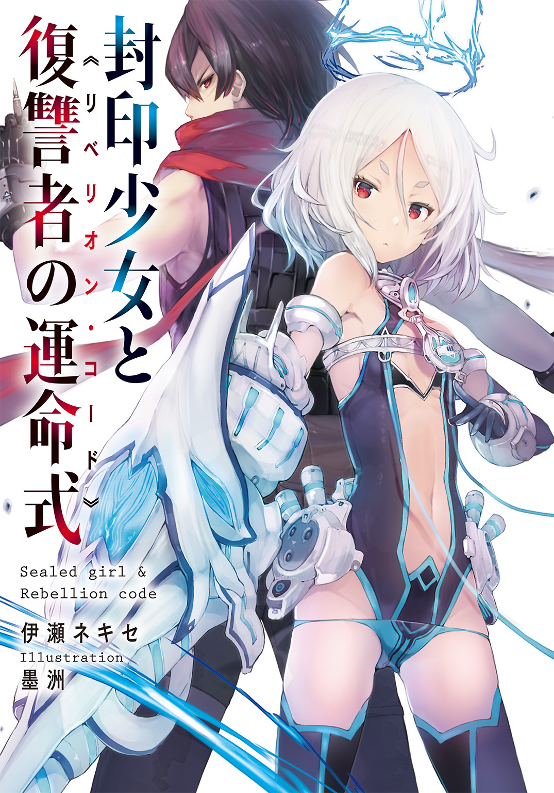

| 封印少女と復讐者の運命式 | |
| 伊瀬ネキセ | |
この本は縦書きでレイアウトされています。
また、ご覧になる機種により、表示の差が認められることがあります。


 ダッシュエックス文庫DIGITAL
ダッシュエックス文庫DIGITAL
封印少女と復讐者の運命式
伊瀬ネキセ
暗 イ 夢
暗い。
寒い。
（冷たい）
闇だった。
誰のものかもわからない骸。ぬるりとした手触り。錆のにおい。
鳴り響く聞き覚えのない警報。心臓の鼓動に跳ね返るように、絶え間なく聞こえ続ける。
《警告》《リ......》《パラ》《......フ》《警コ......》
ここはどこだ。僕は誰だ。
見回す。
時折またたく閃光が、一瞬、闇を反転させてすべてを照らす。
転がる骸、骸、骸。かつて誰であったのかすらわからない、顔のない肉塊。
（これは僕の......）
お父さん？ お母さん？ 姉さん？ 友達？ 仲間？
わからない。もうわからない。
「誰だ......？」
振り返る。
強い光が闇を黒から白へと染め直し、たった一人、二本の足で立っている人影を周囲から切り取ってみせた。
見たこともない、綺麗な服、 綺麗な 顔
赤 い。 目。
なに よ りも あ か い 。 め。
それと、青と 白 の 髪。
「――――――――」
そいつが笑った。
ちくしょうめ。
みんなこいつに殺された。
僕もこいつに殺される。
許さない。
絶対に許すもんか。
邂逅 ス ル 封 印 少 女
目覚めが快適だったことは一度もない。
大抵が寝汗におぼれ、自分のうめき声に起こされる。
悪夢は目覚ましとしては中の下だ。良い夢は目覚ましにはならないから下の下だが。
《おはようございます皆さん。エデンが朝をお知らせします。本日も健やかに過ごせますよう......》
室内スピーカーから響いた機械的な挨拶をきっかけに、ノオトは濁った目を狭い室内に一周させると、備え付けの寝台から身を起こした。
底の浅い皿にも似た楕円形状の寝台だ。寝台の身幅は両肩より少し広いほどで、寝返りを打つどころか、姿勢を入れ替えるにも不自由する。だが、〈エデン〉の住人は寝台で寝返りなど打たないから関係はない。
壁の配給口には、すでに朝食が届けられていた。
ブロック状のビスケット三種に、金属製のコップの水。三食同じ、決まった時間にダクトを通って届けられる。
その横に、冷えたタオルが添えられている。
ノオトはタオルを手に取ると、ぬかるみの中を泳いできたような体を拭いて人心地ついた。〈エデン〉のサービスはいつもと変わらず律儀かつ無機質だ。
ビスケットを乱暴に嚙み砕くと、水を一気にあおり、タオルと一緒に配給口に戻しておく。音もなくシャッターが下り、それらをどこかに運んでいった。
ノオトはクローゼットの前に立った。
（ヤな目だな......）
寝起きであることを度外視しても、ひどく淀んだ目が鏡の奥から見つめ返してくる。
「わかってるのかゴースト・ワン。おまえの復讐は終わったんだ」
鏡の奥に言ってやったが、あちらも同じことを言ってきている。空しい説得だった。
枯れきった眼差しとは裏腹に、年齢はまだ二十歳に届いていない。
体つきは細いものの、筋肉は強靱なバネをねじったように引き締まっている。
黒い髪はざんばらでまとまりがなく、邪魔な長さまで伸びると適当に切っているため、短くも長くもなかった。ただ、とある都合から、後ろ髪だけは少し長めにしてある。
肩を剝き出しにした黒いフィットスーツを身につけ、長年使い古してぼろ切れのようになったマフラーを首に巻くと、ノオトは廊下に出た。
常用灯の白い光が照らす廊下は、〈エデン〉構造材である黒い金属が剝き出しになっている。通路は、大人がそれなりの配慮なしにはすれ違えないほど狭く、天井も大柄な者が手を伸ばせば簡単に届いてしまうほどの高さしかない。
これを窮屈と感じるかどうかは、その人物がどこのコロニーで生まれたかによる。ノオトは懐かしいと感じていた。
「あっ、ノ、ノオト。おはようございますッス！」
扉のすぐ横に立っていた少女が、ノオトを見るなり壁から弾かれるように前に出た。
ノオトとよく似た、肩を剝き出しにしたフィットスーツに、油で汚れたズボン姿。赤茶けた髪を肩の上で切りそろえていることについて本人は、
「仕事柄、髪なんか伸ばせないッスよ」
とブーブー言ってはいたが、フットワークの軽い彼女の性格によく合っていた。
「おはようカナン。どうしたんだ。扉にロックはかけてないぞ。用があるなら、入ってくればいいのに」
ノオトは少女の名前を呼んだ。この〝村〟でノオトとは唯一歳の近い人間だ。
「うっ、うん。ま、まあ、そうなんッスけどね......」
カナンは急に顔を赤くしてうつむいた。
「こ、これ、メンテ頼まれてた銃とナイフッス」
「......わざわざ届けてくれたのか」
カナンがあたふたと差し出した拳銃とナイフをノオトは受け取った。
〝プレートディガー〟という名の無骨な愛銃は、〈エデン〉では護身用でしかない普通の拳銃よりも二回りは図体がでかく、中折れ式で、一発だけ弾が込められるようになっている。通常の弾丸が豆粒に見えるほど巨大な、狙撃用ライフルのような専用弾を使った。
ナイフの方は〝スタンニングダガー〟。工具としても使えるほど強固な、刃渡りの長い肉厚のロングナイフで、グリップ部分にあるボタンを押すと、目に見えるほど強力な紫電の糸が刃にからみつく仕掛けが内蔵されている。
ノオトは二つの武器の良好な状態を確認してから、何かを期待するように待っているカナンに言った。
「いい仕事だ。いつもすまない」
するとカナンは感電でもしたみたいに飛び跳ねて手をあたふた振りながら、
「あっ......。い、いいんッスよ！ こ、こっちこそ珍しいものさわらせてもらって感謝してるッス」
それから頭に手をやり、急にすまなそうな顔になる。
「弾丸の複製のことなんッスけど、すいません。そっちはまだうまくいかないッス」
「弾丸か。いや、いい。これはかなり特殊なものだ。こっちこそ無茶を言って悪かった」
「い、今は無理でも、いつかは必ず同じものを作ってみせるッスから！」
「わかった。期待してる」
カナンはここ〝カカント村〟で工房の技師をやっている。父親が工房長で、幼い頃からそれを見続けてきたカナンの技量は、すでに現場の最高水準にあった。ノオトが大事な装備の整備を任せているのも、そういう理由からだ。
「しかし、こんな用なら、俺が直接工房に受け取りに行ったのに」
「そのことなんスけど、村長さんが呼んでるんッス。それで、必要になると思って......」
「村長が？」
ノオトはこのカカント村で用心棒をしている。そこに用事とくれば、最初に思いつくのも最後に思いつくのも戦闘に関することだけで、それならばこの装備一式は真っ先に手元に用意しなければならないものだった。
カナンと別れると、ノオトは細い通路を、村長の部屋へと向かった。
カカント村は、〈エデン〉のコロニー分類における〝パスウェイ型〟に当てはまる。メインとなる細長い通路があり、その両脇にそれぞれ住人の個室が並んでいる形式だ。
ここでは老人から赤子まで一人一部屋で暮らし、空室を工房や貯蔵庫といった施設に改造し、必要な生活用品を作ったり直したりしながら日々を過ごしている。
たいがいのことは〈エデン〉がやってくれるが、少しでも生活を良くしようとしたら、自分たちで作るしかない。〈エデン〉に住む人々は、最低限度の衣食住こそ無償で享受できるものの、これを拡張しようとすると大変な労力が必要となった。〈エデン〉には、手がつけられていない資源など、ほとんど存在しないのだ。
村人たちと軽く挨拶を交わしつつ村長の部屋にたどり着くと、ノオトは扉横のコンソールに話しかけた。扉のノックは無意味だ。〈エデン〉構造材でできた扉は、ハンマーで力任せに叩いても、向こう側に音一つ伝えてはくれない。
「村長、ノオトだ」
「どうぞ入って」
艶のある声がノオトを招く。
村長の部屋の構造は、ノオトの部屋と何も変わらない。
部屋の中央に備え付けの寝台。配給口に、個人用端末。村のどの部屋も同じだ。
そこをどう飾るかは本人のセンス以上に、コロニーの物資がものをいう。無骨な〈エデン〉構造材が剝き出しになった村長の部屋は、そのまま村の貧しさを表している。
「おはようノオト。朝から呼び出してごめんなさい」
村長のハンナはまずそう詫びた。
年齢は確か二十三、と彼女の端整な顔立ちを見ながらノオトは思い出す。
ほっそりとした美女で、村の男たちは彼女が歩くたびに揺れる大きな胸に目が釘付けになる。カナンの話では、でかい、キレイ、柔らかいと三拍子揃った逸品らしいが、その寸評を村長本人はひそかに迷惑がっているらしい。
彼女が村の長として適齢かといわれれば、間違いなく若すぎる。
しかし、彼女の父親が、ある特殊な事情で村長の執務を続行できなくなってから二年、その間ハンナの施政に不満が出たことは一度もないらしい。元々、先代村長である父親の手伝いをしていたから、村の治め方はよく知っていたのだ。
ただ、若者が少なく村民は年上ばかりのためか、本人としてはわりとプレッシャーがあると、何度かノオトやカナンには愚痴っていたことがある。
「俺は村の用心棒だ。できることは何でも言ってほしい」
「そう」
ハンナは微笑んでから、
「なら、今のを爽やかな笑顔でもう一回言ってくれると村長さん嬉しいな」
「............。ナ、ナンデモスルゼ」
「ごめん、わたしが悪かった」
ノオトはコホンと咳払いをした。
「で、俺に用というのは？」
さっさと本題に入るよう促す。
ハンナは言葉を選ぶように少し間をおいてから、切り出した。
「実は、食料工場の生産力が落ちてるの」
「知っている。ここ数日、みんながそう感じていた。口には出さないが......」
カカント村では、〈エデン〉が配給するビスケットに加え、自前の食料工場で生産されるカワイモを配っている。ふかしたホクホクのイモは、村人たちにとって、メインのビスケットより楽しみなご馳走だ。
生産量の関係でイモが出ない日もあったが、すでに十日以上配給が途絶えているという現状は、村の長い歴史の中でも珍しいことらしく、村人たちも心配していたところだった。
ビスケットで生活することはできる。だが、一旦手にした食品を手放すのは大きなストレスだ。そして、空間的にも資源的にも限定された〈エデン〉という閉所で生きる者にとって、その代替品を探すのは極めて困難だった。
「調べてみたんだけど、どうも工場に動力が送られてないようなのよね」
「途中のケーブルの異常か」
「そうであってほしいわ。動力炉に異常があれば、もっと深刻な死活問題になる」
そう言うとハンナは壁際の端末を開き、キーボードにタッチした。
モニターには、カカント村周辺の様子がワイヤーフレームで表示される。
画面がスクロールすると、ケーブルに異常があると思われる地点が赤く映し出された。
「ここは以前にも故障した箇所よ。以前といっても、七十年くらいは昔だけど」
「今回も、ここが？」
「〈エデン〉のコンピューターはそう言っているわ」
「わかった。すぐ行って直してくる」
ノオトが部屋を出ようとすると、ハンナは素早く呼び止めた。
「待って。問題がいくつかあるの」
「問題？」
「ここに行くまでの経路。以前は、整備用のダクトがあって、そこを使えば安全に行けたようなんだけど、少し前に〝ジャンクストーム〟があったでしょう？」
〈エデン〉の内部をさまよう暴風が、どこかで廃棄された大量の瓦礫を運んでくる自然災害の一つだ。これに巻き込まれれば、硬い金属に絶え間なく殴打され、人間などあっという間につくねになる。
カカント村を通過した際は、幸運なことに村の中心通路ではなく、細いダクトを伝っていったので被害はまったくなかったはずだが......。
「あれで塞がったのが、整備用ダクトだったのよ」
整備ダクトから、すさまじい風圧で詰め込まれた瓦礫を取り除くとなると何年もかかるだろう。それ用の大がかりな装備などここにはないから、すべて人力だ。
「別のルートはないのか？」
ノオトが訊くと、ハンナは綺麗な眉間にしわを寄せた。
「〝封印〟された扉を開ける必要があるの」
「封印か」
ノオトは静かに復唱した。
〈エデン〉内部には、決して開かない扉が無数にある。これらには封印と呼ばれる特殊な方式のロックがかけられており、解除するためには複雑な手順や特別なキーコードが必要となった。とはいえ、実際これが開かれることなど滅多にない。ほとんどが未来永劫、開かずの扉として人々から認識されている。
そして開けたら最後、その先にどんな地獄が待っているのか、想像もつかない。
「ただ、ここの封印に関しては、それほどの危険はないと思っているわ。村の端末の記録には、向こう側の情報も残っているし」
そう言ってハンナは端末を操作し、表示されたマップをスクロールさせた。ノオトがのっそりと顔を寄せると、ハンナははっとしたように一瞬身をすくめたが、すぐに元の位置に戻り、ノオトがたどるであろうルートに指を這わせた。
「扉の先は通常の通路。まっすぐ行くと〈ビッグスリット〉に繫がるの。そこにある四十三番通路の先に、目的のケーブルがあるわ。ただ、絶対に安全とはいえない......」
ハンナは上目遣いにノオトを見た。
「封印された扉の先に〝アフレイド〟がいるのは当然だ。だから俺が行く」
ノオトが薄く笑って腰のホルスターに落とした拳銃を見せると、ハンナはほっとした顔になる。
「ごめんなさい。村の外から来たあなたに、一人でこんなことをさせて」
「気にしなくていい。一人の方が慣れてる」
素っ気なく言うと、ハンナはノオトを気遣うような笑みを浮かべた。
「みんなあなたのことを信頼しているわ」
「......そうか」
「半年前、破損した空気ダクトからアフレイドが侵入したとき、村には通用する武器が何もなかった。あなたが偶然通りかかってくれなければ、大勢の村人が殺されてた」
そのときアフレイドを撃退した功績がもとで、ノオトはこの村に迎え入れられたのだ。
「ありがとうノオト。あなたのような人を村に迎えられて、本当によかったわ」
「住まわせてもらって感謝してるのはこっちの方だ」
ノオトは噓をついた。自分が本当に彼女たちに感謝しているのか、本当はわかっていなかった。
「そうだわ。肝心なものを忘れるところだった」
ハンナはノオトの手首を摑むと、手のひらに小さなバッテリーを三本置いた。
「この村が数十年かけて貯めた〝リバシオ〟よ。ケーブルの修理に必要なら使って」
「わかった」
ノオトはうなずき、バッテリーを指の中に握り込む。
「ねえノオト？」
「ん？」
「最近、嬉しいこと何かあった？」
突然の思わぬ質問に、ノオトはわずかに目を見開き、口ごもった。噓でもいい、何か言うんだと心の中の誰かが言ったが、乾いた唇がわずかに開くだけで、言葉にはならなかった。
そんなもの、あるわけない。
そんなこと、自分に許せるはずがない。
ハンナは少し悲しげに笑った。
「あなたはもう少し楽しく生きた方がいいわ」
「......努力する」
ノオトはうなずくと、村長の部屋を出た。
準備のために自室に戻ろうとすると、通路の隅っこで膝を抱えて座っていたカナンが、こちらの姿を見るなり弾けるように立ち上がり、駆け寄ってきた。
「そ、村長さんとの話、終わったッスか」
「？ ああ」
「あ、あの、あの、こ、こ、婚約とかの話じゃないッスよね......？」
「コンニャク？ ......イモの話ではあったが、コンニャクではないな」
「婚約ッスよ！ 結婚！ あっ、アワワワ......」
カナンは慌てて口を押さえた。
「？ どうして村長が俺に婚約の話をするんだ？」
するとカナンは肩をもじもじさせながら、赤い顔で言った。
「村長さん、仕事も一人じゃ大変だし、そろそろ相手を探した方がいいんじゃないかって、父さんたちが話をしてて。本人もその気らしいって聞いたッス......」
「だからって、俺がその相手になるわけないだろ。村のもっとしっかりした人を選ぶさ」
「わたしはただ、心配になっただけッスよ......」
カナンはか細い声で言うとうつむいてしまった。
「......それじゃあ、何の話だったッスか？ やっぱり、村の安全に関わること？ でも、イモって、村で作ってるカワイモのことッスよね」
「イモの工場の調子が悪いっていうから、ちょっと修理に行ってくる」
「え!? 村の外に行くッスか？」
慌てる少女に、ノオトはうなずいた。
「村の西から〈ビッグスリット〉を越える。まあ、三日もあれば帰ってこられるだろ」
「西？ ま、まさか封印された扉を開けるッスか？ そ、そんな......」
「扉はすぐロックする。村に危険はない」
「で、でも......」
ノオトはそう言うと、青ざめて硬直するカナンの脇を抜けて、自分の部屋へ戻った。
準備を終えて部屋を出ると、カナンが無言のまま後ろをついてくる。村を出たことのない少女にとっては、これがまさに確約された死への旅路に思えるのかもしれない。
それは決して間違いではない。
見知らぬ扉を開けることは、〈エデン〉では死を意味する。たとえそれを知らぬ者でも、いずれ何らかの代償を払って知ることになるので問題はない。
村の西端にはすぐに着いた。所詮、人口三十人ほどの小さな村だ。広さもたかがしれている。
そこに、封印された扉があった。
傷一つない、黒い〈エデン〉構造材でできた扉というところまでは他の住居と同じだが、まるで近づく者を威嚇するみたいに、扉の縁を赤い光がなぞり、緩慢な明滅を繰り返している。それが封印を示すシグナルだった。
扉には、のぞき窓らしき小さなガラスがはめ込まれていたが、ここが脆いかといえば、強度に違いはない。つまるところ、これは解除方法がわからない限り、扉の形をした鉄壁にすぎないのだ。
扉の前には、番をしている村の男と、立ち会いのハンナが待っていた。
ノオトの横を歩いていたカナンが、恨めしそうにハンナを見るのがわかった。ハンナは小さな微笑を浮かべるだけで、何も言い返さなかった。
「ちゃんと......帰ってくるッスよね？」
カナンが今にも泣きそうな顔で言った。
「......ああ」
ノオトは短く返した。〈エデン〉では、こんな何気ないやりとりが最後の会話になることもある。だが、心配してくれている相手にそんな答えを返すのは正解ではない。たとえ白々しい噓だとしても。
「俺が出たら、すぐに扉をロックしてくれ。帰還予定は一日余裕を見て三日後だ」
門番はうなずいた。男の眼差しは厳しい。もし扉の先で何かがあってノオトが逃げ帰ってきたとしても、扉の小窓から安全が確かめられるまで彼は決して扉を開けない。それをノオトは恨んだり呪ったりすることはできない。
「封印を解除するわ。準備はいい？」
ハンナの最終確認に、ノオトは左目に電脳眼帯の〝ガンパッチ〟を取り付けながらうなずいた。主に銃器の弾道計算が役目だが、各種センサーとしても活躍する。
ハンナは扉横の端末にあるソケットにカートリッジを差し込んだ。恐らく、その中に封印の解除コードが入っているのだろう。
彼女が端末を操作すると、モニターに〈封印解除〉のメッセージが走った。
《警告。封印区画４３５／９９８／３８８の扉を開けようとしています》
いつもと変わらぬ〈エデン〉の声がそう告げる。
封印を示す光が消える。
〈エデン〉にとってそれは、朝が来て夜が来るのと同じくらい、何でもないことなのかもしれない。しかし、そこで生きる人間たちにとっては生死を分かつ瞬間だ。この直後、〈エデン〉から永遠に消滅したコロニーがいくつもある。
そこまでの危険はないと知っているはずのハンナの表情からも血の気が引く。
《解除コード確認。封印方式〝グロンディネ〟は正規の手順で解除されます》
黒い扉が、何のてらいもなく、わずかな金属の軋みをあげて、開く。
息すら忘れて立ちつくす村人たちをよそに、ノオトは無機質な扉と同様に、何のためらいもなく封印された区画へと踏み込んだ。
「ロックを」
ノオトが落ち着いた声で言うと、ハンナははっと我に返って端末を操作した。
「ノ、ノオト！ 気を――」
気をつけて、というカナンの声を音もなく落ちた黒い扉が両断する。ノオトは扉の小窓から必死にこちらを見ようとする少女に小さく手を振ると、奥へと歩き出した。
封印区画の空気は、村側よりもずっと冷えていた。
左目に取り付けたガンパッチが、封印区画の情報を表示し始める。
気温は十四度。酸素濃度は正常。有毒な酵素も発見されず。このあたりは、すでにハンナが下調べしたとおり無害だ。
通路の形状は、カカント村と大差ない。
黒い〈エデン〉構造材が剝き出しの、殺風景な一本道。
扉一枚しか隔てていないのだから、それほど変わるものでもないといえば確かにそうだが、その逆もまたあり得るのが〈エデン〉だ。
強いて言うなら常用灯の明かりが少し弱いか。
どうせ誰も通らないんだから少しくらいサボったってわかるまい、と照明が考えているのならば、ノオトもまったくの同意見であった。
ノオトは物音に注意しつつゆっくりと進んだ。
通路はひたすらまっすぐで、脇道も曲がり角も、個室らしきものもなかった。
（今、アフレイドに遭遇したら逃げ道はないな）
アフレイドは〈エデン〉の内部を跋扈する〝機械の狩人〟だと、ノオトたちは軍の教官に最初に叩き込まれた。
大きさは小さいもので数センチ。大きいものに関しては全長二百メートルまで確認されているが、それが上限だとは誰も信じていない。
視覚、嗅覚、聴覚、触覚、熱探知、振動探知、音反射、アミノ酸反応......。一般兵装で対処できる限界とされる中型サイズのアフレイドで、およそ七万八千の探知線を持つ、生まれながらの狩りの天才だ。
姿形は一定ではない。人に似たもの、別の何かに似たもの、あるいは他の何にも似ていないもの......簡単な分類すら困難なほど、アフレイドの形状には種類がある。
その図体と質量で単純に人間を踏み潰すのも危険だが、やはり一番の脅威は、アフレイドが内蔵している対人重火器だ。
鋭敏なセンサーが人間より遅れて標的を捕捉することはなく、遮蔽物のない直線上に十分の一秒姿をさらせば、脆弱な人体など半瞬で引き裂かれた血袋にできる。そこに一切のためらいはない。
アフレイドがなぜ〈エデン〉の中を徘徊しているのか、それは誰も知らない。
〈エデン〉とは何なのか、そしてなぜ人類が〈エデン〉に住んでいるのか、と同じくらい謎だ。
だが、とある古いエリアで発見された端末から、アフレイドは〈エデン〉を建造した者たちの手によって造られたことが判明していた。
神と見まごうほどの技術力を有していた彼らは〈突端文明〉と呼ばれ、しかし現在、〈エデン〉のどこにもその姿を見ることはできない。
〈突端文明〉の人々は〈エデン〉を残し、どこへ消えたのか？
それもまた、誰にもわかっていないことだった。
何とはなしに機械の狩人との遭遇を想像したとき、肌を薄く削っていくような淡い緊張感が神経に蘇り、ノオトはわずかに苦笑した。
その死の空気を、体は、懐かしい、と感じている。それが嬉しくもあり、空しくもある。
（復讐は終わったって、言ってるだろ......）
自分の足音と、どこかで巨大な機構が動いている重低音を聞きながら、ノオトは黙々と進んだ。アフレイドの気配はどこにもない。
ガンパッチが、封印区画に入ってから六時間がすぎたことを知らせたとき、ノオトは延々と伸びる梯子の途中にいた。上り始めてからすでに三時間。いつしか下は見えなくなり、それでもまだ頂上には到達しない。
こうして半日かけて上った梯子を、もう半日かけて同じだけ下りることもままあるのだから、〈エデン〉を作ったやつらは、人の努力をあざ笑うことにかけては天才的にひねくれているとつくづく思う。
ふと、ため息をついたノオトの目の前を、小さな白いものが通過した。
思わず手で受け止めると、それはまるで幻だったかのように手のひらの上で消えた。
「......雪か」
梯子の先を見上げる。
ちらちらと白い雪片が舞ってきていた。気づけば、気温もさらに下がっている。ガンパッチが左目に映し出す現在の気温、七度。
人々が暮らすコロニーは〈エデン〉によって一定の温度に保たれている。暑くもなければ寒くもない快適な気温だ。
しかし、大昔の偉い学者が調べたところによると、〈エデン〉というのは本来とても寒いところらしい。だから、何らかのトラブルで空調が効かなくなると空気中の水分が凍りついて霜になり、構造材から剝がれてこうして降ってくるのだ。
それから三十分ほど上り続け、ようやく梯子が終わった。
上部フロアに頭を出すと同時に、強い風が髪を荒々しく嬲った。
思わず右目を閉じるが、ガンパッチに覆われた左目は、眼帯のカメラから目の前の光景を受け取っていた。
「こいつは......」
ノオトの視界の先に、世界が途切れていると錯覚させるような深い溝が広がっていた。
対岸までは十数メートルほどか。飛び移るにはやや遠い。
溝の全長は不明だ。左右に延々と伸び、闇の中に消えている。
上下も果ては見えず、光の届かぬ深淵だった。構造材から剝がれて落ちる雪片が、ふわりふわりとその無尽の天地を降りていく。
「〈ビッグスリット〉だ」
ノオトは思わずつぶやいた。
ある高名な学者が、各地にある〈ビッグスリット〉を見て、〈エデン〉は無数の立方体のユニットが組み合わさってできた巨大な建造物だと仮説を立てたという。そのユニットの中で、人々は暮らしているというわけだ。
〈エデン〉の全体像については、球体やら立方体やら、様々な説があったが、このユニット密集体というのは定説化しており、確かに〈ビッグスリット〉の断崖絶壁には、正確に計測されて切り出されたような直線の凹凸が数多く見られ、それらはいずれも同じ大きさの正方形であるように見えた。
つまり〈ビッグスリット〉とは、ユニット同士の接触の際に何らかの不具合で生じた、世界の隙間ということになる。
その証拠を示すように、〈ビッグスリット〉の幅は場所によってまちまちで、中にはまるで橋のように向こう側の壁面まで届いているものもある。橋とはいっても、一辺が数百メートルあるばかでかい立方体である。そんなものを目の当たりにすると、〈エデン〉の巨大さ、そしてこれを造ったという〈突端文明〉の異様さが、身に染みてわかる。
ノオトはその〝橋〟を利用して向こう側に渡ることにした。
生憎、その〝橋〟があるのはノオトのいる位置よりも上だった。渡るには、まずその壁面をよじ登らなければいけない。
難しいことではなかった。ユニットの表面は、その内部と同じく様々な配管やら機構の凹凸だらけだったので、指一本で全体重を支えられるノオトからすれば、平地を歩いているのと大差ない。
（このユニットの中に、カカント村の整備ダクトが通っているんだろうな）
壁をよじ登りながら、ふとそんなことを考えたノオトは、自分が指を引っかけているガラス部分の奥に、びっくりした様子でこちらを見つめる人の顔があることに気づいて、クライミングを中断した。
そこにいたのは、老婆だった。
「よう、婆さん」
ノオトが話しかけると、
「はいどうも」
老婆は最初こそ驚いた顔をしていたが、ノオトが話しかけたときにはもう、昨日も挨拶を交わしたばかりだというような態度になって、しわだらけの微笑みを見せた。
腕くらいは通せる隙間の空いたガラス窓から中の様子をうかがうと、老婆はひどく狭い個室の中にいることがわかった。彼女は寝台の上に座っており、部屋の面積はそれとほぼ同じ分しかない。奥には扉があったが、赤い光で縁取られている。
「封印されたのか」
「ええ。六十年くらい前だったかねえ。ヒエ、ヒエ、ヒエ」
老婆は悲愴感もなく笑いながら告げた。
封印は、はるか昔から続くものもあれば、つい最近、始まったばかりのものもある。
ある朝突然、昨日まで顔を合わせていた隣人の扉が、何の前触れもなく封印されていることに気づく、なんてこともある。
その人とはもう二度と会えないし、会話もできない。コロニーとコロニーを繫いでいた扉が封印されれば両者の交流はそこで完全に途絶えるし、一つのコロニーが真ん中から分断されることも、あり得ないことではない。
カカント村にも、ここ数年で封印が起こった部屋がある。
村長ハンナの部屋の隣。前村長――ハンナの父親の部屋だ。
彼が今どうしているのか、村の住人たちはまったく知らない。同じように朝食のビスケットをかじっている可能性もあれば、すでに死んでいる可能性もある。封印された扉のむこうは、運良く小窓でもついていない限りまったく確認のしようがなく、廊下に付けられたマイクとスピーカーも回線を遮断されてしまうため音信は不通。騒いでも叩いても、音も震動も伝わらないのは言うまでもない。
封印が起こる原因はわかっていないが、〈エデン〉がそれを判断し、実行しているのは間違いない。家族、恋人、同僚、仲間との関係が、ある日突然一方的に断ち切られる。それは、とても恐ろしいことに違いない。
だが――
ノオトの知る限り、カカント村で封印されることを恐怖している者はいなかった。
何か〈エデン〉の意志による選別、あるいは神聖な儀式のように感じているふうにも見えた。いつ、この老婆のように、身動きも取れないような場所に閉じこめられるかわからない......その不安に怯え続けるより、カカント村の人々のように考える方がどれほど楽か。その意味で、ノオトは彼らの精神構造を、限りなく正解に近い適応進化と感じていた。
「あんた、カカント村の出身か？」
ノオトは、老婆に悲愴感がまるでないことを見て、そうではないかと思った。
「カカント村？ いや、知らないね。それより、あたしは煙草屋をやってるんだ。何か買っていかないかい」
「煙草？」
煙草に限らず、商売をしている人間は〈エデン〉では珍しい。生活に必要なものは、毎日配給口に届けられるからだ。カカント村には通貨すら存在しない。嗜好品の売買――これは、この老婆がかなり巨大なコロニーの出身者であることを示していた。
「こんなところに客は来るのか？」
「いいえ。ずっとここにいますけど、来たのはあんたさんが初めてじゃ」
だろうな、とノオトはうなずいた。
「生憎、俺は煙草を吸わない。金も持ってない」
「あら、残念だねえ」
六十年目にして初の、そしてきっと最後の客が自分とは、運のない婆さんである。
「このあたりにアフレイドは出るか？」
「いいや。動くものといったら、年中降り注いでる雪のかけらくらいさ。もっとも、ここから見えないところじゃ何が動いているかは知れないけどね」
〈ビッグスリット〉はきっとこの六十年、何一つ変わりはしなかっただろう。老婆は変わらぬ景色をずっと見続けて生きてきたのだ。他に何もせずに。
その人生に、一体どんな意味があるのだろう。
何も為さぬ命に、どんな価値を見いだすのだろう。
最後にノオトは訊いた。
「何か不便はあるか？」
「不便？ そんなものはありゃしないよ。どんな不便があるっていうんだい。ここに〈エデン〉が何もかも用意してくれるっていうのに」
老婆はむしろ不思議そうにそう答えた。
「確かに、そうだな」
ノオトは老婆に別れを告げ、再び〝橋〟の壁面を登り始めた。
老婆は自分が生きる意味について、考えたことがあるのだろうかと、ノオトは考えた。封印される前、どう生きてきたのか。近しい人はいたのか。......夢はあったのか。
封印の赤いシグナルと共に終わったそれを、自分の中でどう消化したのか。
聞いてみたいと思ったが、やめた。どうせ理解できるはずがない。
そういった哲学には、面倒でも自分だけの言葉で編んだ回答を見つけなければいけない。誰からも理解されなくていい。哲学は自分だけを説得できればそれでいい。
（......そんなもの、本当にあるのか？）
今のノオトには、その存在すら信じられない。
〝橋〟の上面にたどり着いたノオトは、そこを伝って〈ビッグスリット〉の向こう側へ渡った。
壁面には、各ユニットへの通路がずらりと並んでいる。
ノオトは左手首にはめたバングルを起動した。
正式にはワイズバングルというこの腕輪型の個人用端末は、空中に疑似モニターを投影する機能を持ち、主に戦闘に用いられるガンパッチと並んで〈エデン〉探索には欠かせない装備だ。
ノオトの左手の上に開かれた疑似モニターには、村の端末から取得した〈ビッグスリット〉周辺マップが三次元ワイヤーフレームで表示され、さらにノオトの現在地と目的地までが赤いラインで繫がれている。
幸い、目的の四十三番通路の入り口は、〝橋〟のすぐ近くにあることがわかった。
ノオトは〝橋〟から再び金属の断崖絶壁へ飛びつくと、目的の通路へと潜り込んだ。
内部は暗い。しかし、暗視装置を備えたガンパッチは、何の問題もなく通路の姿を浮かび上がらせた。
カカント村側のユニットとは違い、滑らかな表面を持った金属板で覆われた四十三番通路を、ノオトは慎重に進んだ。
ほどなくして、金属板が取り外され〈エデン〉の構造材が剝き出しになっている箇所が見つかった。探すまでもなく、破損したケーブルが目に入る。
「ここか......」
あっさりと発見できたことにノオトは安堵した。
左腕のバングルから接続用のアンカーを引き出し、ケーブルに嚙ませる。
疑似モニターが開き、調査用プログラムが猛烈な勢いで記述されていく。
結果はものの数秒で出た。どうやらただの物理的破損のようだ。内部構造に致命的なダメージが生じた様子はない。
ノオトはほっとした。この程度の破損なら、ハンナから渡されたリバシオ電池をほとんど消費せずに修理できる。
ウエストポーチからリバシオ電池を一つ取り出すと、バングルに接続し、ケーブルに対しての物理修復のオーダーを出す。
ケーブルの破損箇所から小さな火花が散り、みるみるうちに元の形を取り戻していった。
これが〈エデン〉においてもっとも貴重な資源である〝リバシオ〟の機能だった。
リバシオは出力の式さえわかっていれば、どんなものにも姿を変える。
破損したケーブルの代役を果たすことも可能なら、人間の体の一部になることもできた。〈エデン〉の稼働そのものもこのリバシオによって行われている。
現在行われている修復も、組まれたプログラム的には、経年劣化を逆転させるという、わかるようなわからないような現象を起こしている。ともかく、何でも起こせる万能エネルギーという認識だ。
しかし〈エデン〉に存在するリバシオは、ほぼ百パーセントが〈エデン〉のインフラの中で循環していた。したがって、外にリバシオが漏れてくることなどほとんどありえない。カカント村のような小さなコロニーが、電池三つ分のストックを作れたのは、きわめて幸運な例だったと考えていい。
一分とかからず、ケーブルの修復作業は完了した。
これで仕事は終わりだ。すぐに戻れば、明日の朝には村に帰り着けるだろう。
そう考えたとき、不意にガンパッチが遠慮がちに注意のメッセージを示した。
通路奥に何かある。
ガンパッチの暗視装置では、色までは判別できない。だから、それを先に見つけたのは、裸眼の右目だった。
闇の中に赤黒い光が明滅している。封印された扉があるのだ。
特段、珍しいというものでもない。
〈エデン〉は開かずの扉だらけだ。
しかし、ノオトはなぜかその扉が気になり、近づいていった。
途端――
《警告。封印区画４３０／１１４２／３９６の扉を開けようとしています》
「え――!?」
封印された扉横の端末が発した警告に、ノオトはうろたえた。
「お、俺は何もしてないぞ！」
《封印区画４３５／９９８／３８８の〈封印解除〉が実行されたことにより、当該封印は連動して解除されます》
「れ、連動......!? そんなものがあるなんて聞いたことないぞ。おい、よせ！」
などと言ってみても、〈エデン〉が応じてくれるわけもない。
《解除コード確認。封印方式〝グロンディネ〟は正規の手順で解除されます》
扉を覆っていた、乾きかけた血だまりのような色の光が一度大きく膨らみ、それから完全に消失した。
右目にはもう闇しか見えない。左目のガンパッチが音もなく開かれる扉を呆然と見つめた。
「............！」
奥に、誰か、いる。
まるで、壁に、はりつけられているみたいな姿で。
――封印の基準、理由についてはまだ定まった見解はない。
ただ、その中で、信用性の高い情報の一つとしてこういうものがある。
扉の奥にあるモノを封印しているのだと。
それは〈エデン〉において、もっとも危険で、もっとも強力で、もっとも残忍で、もっとも遭遇してはいけないもの。
アフレイドでありながら人間の女、それもうら若い少女の姿をしていることが多いため、こう呼ばれたりもする。
「〝封印少女〟......！」
暗視機能が表す緑がかった視界の中で、その狭い個室の奥にいる誰かが、わずかに動いたように見えた。
次のことが、どれほどの時間の長さの中で起こったことなのか、ノオトは正確に認識することができなかった。
封印されていたモノは、壁から右腕を剝がし、左腕を剝がし、一旦前のめりに倒れ込みそうになり、片足を前に踏み出してそれを支え――次の瞬間には、その手のひらが、もうノオトの顔を摑んでいた。
「クワセロ」
その声を聞いた瞬間、摑まれた顔の痛みすら忘れさせる衝撃がノオトの頭の内側から起こり、精神と思考がぐちゃぐちゃになって飛散する感覚が全身を支配した。
（――!!）
言語化されない絶叫が頭蓋骨の中を乱反射する。
全身が急騰するような感覚の後、頭の中で何かがぶつりと途切れる音がした。
闇の中に溶けていく視界の中、ガンパッチが表示する危険のメッセージが、赤く滲んで消えていく。最後まで残ったのは、顔を摑んだ指の隙間から見えた、赤い双眸だった。
それに見つめられたまま、ノオトは自分の肉体と精神を闇の中で見失った。
その瘦せ枯れた白衣の男は、いつにもまして陰気な目つきでこちらを見ると、突然こう切り出した。
「ゴースト・ワン。これまでご苦労だった。以後〝メメントシステム〟の使用を禁ずる」
何のことかわからなかった。どういうことか説明を求めた。
「ハードウェアの限界が来た。もう一度でも戦闘稼働を使おうとすれば、おまえの肉体と精神は負荷に耐えきれずに崩壊する、と断言する」
そんなことはない。まだやれる。目的がある。故郷の復讐をするんだ。もう一度使えるならそれで十分だ。次の戦場に出せ。
「次の戦場におまえの探す〝姫〟がいる確率はゼロだ、と断言する。それに、我々に次の戦場は来ない」
どういうことだ。
「上層部は〈トータル・ドクトリン〉作成をこれ以上先延ばしにできないとし、プロジェクトの中止を決定した。我々は最強のなりそこないしか造り出すことができなかった。この先、我々は一方的な弾劾と断罪を受けることになる、と断言する。その前にここを離れる。おまえがどうするかは、おまえが決めていい」
ふざけるな。ここのメンバーがいなければ、システムのメンテナンスが受けられない。戦い続けることができない。復讐が果たせない。
「おまえの復讐は終わりだ。ゴースト・ワン。そして我らの戦いも終わる」
認めない。そんなこと認めない。
俺は仇を討つんだ。絶対にあのアフレイドをブチ壊してやるんだ。そのために生きてきた。そのために死ぬんだ。
終わりなんてない。その次なんてない。俺の命そのものが復讐なんだ。
それなのに。
そのための力を失ったら、俺はこの先、どうしたらいいんだ？
「――......？」
最初に見えたのは、ガンパッチの暗視装置が映し出す天井だった。
何が起こり、今自分がどうなっているのか把握できないまま、ノオトは左目と、何も見えない右目で闇を端から端までなぞった。仰向けに倒れている、とようやく気づく。
一旦停止した五感の覚醒はじれったいほどゆっくりだ。
指先を動かそうとしてから実際に動くまで数秒かかる。まるで鉛の海を泳いでいるような気分だった。
（何があったんだったか......？）
ふと、何か柔らかいものが頭の下にあると感じたとき、ノオトの耳に聞き覚えのない声が飛び込んできた。
「やっと起床モード？」
そう聞こえた直後、誰かが顔をのぞき込んだ。
あどけない顔つきの、美しい少女だった。
髪は肩ほどまでもなく、色は白に近いらしい。表情はなく、まるで人形のようだ。
歳は十代の半ばか、もう少し下か......。若いというより幼いという形容に近い。
しかし......ソレがただの少女でないことは、その両目が物語っていた。ガンパッチではない、裸眼が見て取ったのは、少女の目に宿る、輝く血のような赤光だった。
「う、おああああ!?」
ノオトは飛び起きると、完全には感覚の戻らぬ手足を動かし、床を這うようにしてその場から離れた。
左目は少女の全身を映し、右目は、アフレイドのカメラアイが内部に宿す赤い光のみを見ている。
ノオトの全身から、冷や汗が噴き出した。
（お、思い出した......）
封印された扉から出てきたのはこいつだ。
そして、接触と同時に気を失った。
その理由は――
「うっ......！」
内なる衝動が、吐き気のように口元までせり上がってきた。恐怖ではなく、憎悪によって煮え溶けた頭の奥から、怪物の声が何度も何度も命令してくる。
怒レ、睨メ、憎メ、恨メ、呪エ、怒レ、睨メ、憎メ、恨メ、呪エ、怒レ、睨メ、憎メ、恨メ、呪エ、怒レ、睨メ、憎メ、恨メ、呪エ......。
〝システム〟から発される声だった。目の前のアフレイドを認識して、戦闘稼働を起こそうとしているのだ。
（今、システムが戦闘稼働したら......）
ついさっき、夢の中で二度目の警告を受けたばかりだ。
（それに、こいつは......）
ノオトは内側から響く声に頭を抱えながらも相手を見た。
（違う。こいつは、あいつじゃない......）
どこか眠そうな目、無気力そうな口元、短い髪、小さな体、体のラインにフィットするスーツ、各部をコーティングする装甲......どれも記憶の中のあのアフレイドとは違う。
しかし、命の危機であることに違いはない。
目の前にいるのが凶暴で強力で無慈悲な殺戮兵器であることは絶対なのだ。
（戦闘稼働なしで、逃げ切れるのか......？）
倒そうなどとは最初から思わない。まともに戦おうとすれば、それこそ戦闘稼働なしでは不可能だ。
しかし、感覚のいまだ不確かな手を自分の腰に這わせたノオトは、そこにあるべきはずの感触にいつまでたっても到達しないことに気づき、ぞっとした。
銃がない。ダガーもない。
素早く目線を走らせ、よりにもよってぺったりと座った少女型アフレイドのすぐ横に二つとも落ちているのを見つける。勝手に落ちるはずがない。抜き取られたのだ。
（......死んだな）
あっけない最期だと自分でも思う。惨めで、つまらない終わり方だ。
どうせなら、もっと早くにこうなってほしかった。自棄気味に思う。そうすれば、少なくともこんな惨めさを感じずに復讐の中で死ねた。
「............？」
しかし、ノオトの予想に反して、封印少女はこちらをぼーっと見つめたまま、何もしてこない。一度は覚悟を決めたノオトもおかしいと思い始める。そもそも、なぜ今自分は生きているのか？ なぜ、このアフレイドは意識のない自分を殺さなかったのか？
死の覚悟の一歩手前で混乱し続けるノオトに、アフレイドは不可思議な行動を起こした。
こくり、と小首をかしげると、近くに落ちていたノオトの武装を拾い上げ、わざわざ銃口と刃をこちらに向けない持ち方をしながら、差し出してきたのだ。
「!?!?!?」
凍りつくノオトに、少女型アフレイドはまた不思議そうに首をかしげ、
「これを探しモードじゃないの？」
と訊いてきた。
ノオトは返事もできないまま、恐る恐るそれを受け取った。その渡し方は機械的で無造作な動きではなく、明らかに思いやりのようなものが感じられた。ノオトはますますわけがわからなくなった。
「......もう少し寝る？」
少女型アフレイドが細くしなやかな太股をぽんぽんと叩いた。
このときになって、ノオトはさっき、自分の頭の下にあったものの正体に気づいた。アフレイドに膝枕されていたのだ。こんなの馬鹿げている。
「どういうつもりだ？」
ノオトは手渡された武器を構えることもできず、かすれた声で訊いた。
「？」
少女型アフレイドは質問の意図がわからないというふうに、また首をかしげる。
「おまえは一体何なんだ。どうして俺を生かしている」
ノオトは再度訊いた。自分でもどんな答えがほしいのかわらない。少女はアフレイドだ。殺戮マシーンだ。それは、絶対に、絶対なのだ。
少女の目が、ノオトを真正面に捉える。そこに、機械の持つ冷徹さとは別の何かがあるように思えたのは、おそらくはただの錯覚だっただろう。しかし――
「わたしは、天使」
「なに......？」
返ってきた答えに、ノオトは再度呆然とする。
「ふざけるな。おまえはアフレイドだろう。何が目的だ？ どうして俺を殺さない」
「わたしは人間になりたい」
ノオトは絶句した。こいつは一体何を言っているのか。アフレイドの電脳が故障でもしたのだろうか。
「人間になりたい。どうしてもなりたい」
再びそう言って、少女型アフレイドがにじり寄ってくる。
「う......」
なぜか無下にできない切実な響きに、ノオトは抵抗することも忘れ、尻餅をついたまま壁際へと追いやられた。
少女は接近をやめず、やがて、脇や股の間に、四肢を差し込むようにして身を寄せてくる。幼く端整な顔が鼻先がふれるくらいの距離まで近づく。ノオトはあるかどうかもわからない機械少女の甘い吐息を感じ、裸眼の右目からは、その機械の赤い眼差しが、焼きつくほどまぶしく見えた。
「俺にどうしろって言うんだ......？」
「人間になる方法を教えてほしい」
「そんなものはない。機械が人間になれるはずがない」
はっきり言うと、少女型アフレイドは眉毛をしょんぼりと下げ、身を引いた。
「なりたい」
と、か細い声で繰り返す姿は、とても〈エデン〉に封印されるほど凶悪なマシーンの素振りとは思えない。しかし、このアフレイドの中枢回路がどれほど狂っていたとしても、ノオトにできることは何一つなかった。
ノオトはそろそろとその場から横にずれた。少女型アフレイドは座り込み、うつむいたままだ。今なら逃げられるかもしれない。
ゆっくりと、慎重に後退する。通路の闇が薄れ、出口が近づいているのがわかる。〈ビッグスリット〉へと体が半分出たとき、ノオトはためらわずに力強く床を蹴っていた。
脇目もふらずに走った。〝橋〟を渡り、壁面を飛び降りると、カカント村へと通じる入り口に転がり込む。
さらにそのまま全力疾走し、しばらくしてから、ノオトはようやく足を止めた。
「助かった......」
「危なかった」
「まったく、何だったんだ。あいつは......」
「気にすることはない」
「ああ。早く村に帰ろ――ウオア！ ゲボォ!?」
その場から飛び退いたノオトだが、巻いていたマフラーが首にくい込むことで動きを止められ、再び元の位置へと引き戻される。
マフラーの端を握り、しれっとした顔で立っていたのは、あのアフレイドの少女だった。
「ど、どうしてついてくる......？」
ノオトはぜいぜいとのどを鳴らしながら、どうにか訊いた。
「わたしは人間になりたい」
「それはさっき聞いた。俺にはどうすることもできない」
「あなたは人間」
「だから何だ」
「あなたを観察する。観察して、人間になる方法を探す」
「ふざけるな。そんなんで人間になれるわけ――」
言いかけてノオトは、マフラーを握ったままの少女型アフレイドの頰が不自然な形に膨らんでいることに気づいた。
「......何食ってるんだ？」
ノオトがおそるおそるたずねると、少女はそれを、ぺっと通路に吐き出した。
唾液だか潤滑油だかまみれのそれを見たとき、ノオトは悲鳴を上げた。
「リ、リバシオ電池じゃねえか！」
まぎれもなく、ノオトがハンナから預かった電池だ。
「ごちそうさまモード」
少女型アフレイドはこともなげに言って、どこからか残りの二本の電池も差し出した。
「こ、こいつ......」
リバシオはあらゆるもののエネルギーになる。通常、アフレイドはリバシオで動いているわけではなかったが、数式さえわかっていれば、動力源に変換することは可能だ。
電池の残量はゼロ。村がこつこつと蓄えたリバシオは、人類の敵であるアフレイドに、すべて食われてしまった。このアクシデントを不可抗力だとハンナに説明するだけの語彙豊かな舌は、ノオトにはついていない。
「早く村へ帰ろう」
アフレイドの少女が言った。
よく見ると、目元は相変わらず無気力だが、眉毛に力が入ってるように見える。わかりづらいが、張り切っている、という状態にも見えた。
（どうすりゃいいんだ。俺は......）
ノオトは両手で頭を抱えた。
わかっているのは、リバシオを補給したにもかかわらず、このアフレイドがこちらを殺す意志がないということ。それから、説得だろうと力ずくだろうと、こちら側からこいつを遠ざける方法はないということだった。
ひとまず村に戻り、ありのままをハンナに相談するしかない。その対策いかんによっては、この疫病神に取りつかれた自分は村を出なければいけなくなるかもしれなかったが、それはもう自己責任としか言いようがない。
ノオトは意を決して訊いた。
「おまえ、名前はあるのか」
「イドアリス」
「俺はノオトだ。人に危害を加えないと約束できるなら、村に連れていってやってもいい」
「ほんとう？ 嬉しいモード！」
イドアリスの眉毛がぴくぴく動いた。
「ああ。だが、もし約束を破るようなら、どんな手を使ってでも俺はおまえを破壊する」
「約束する。何なら、わたしをラブドールにする権利もあげる」
イドアリスは恥ずかしがる様子もなく、機械のように――当たり前だが――言ってきた。
「どこでそんなくだらない言葉を習うんだ」
「ノオトが局部だけほしい人なら、それでもいい。そういう趣向もまたいい」
「よくねえだろ、その趣味は」
「わかった。ノオトがちゃんとロリ人形の全身を愛せる人で安心した。腰の部分だけないと、わたしとしても、その、困る」
「......。スゴクいやな予感がしてきたぞ。いろいろ言いたいことはあるが、俺がしゃべっていいと言うまで、村人の前でどんな話もするな」
「わかった。ノオトのトクベツな趣味のことは、わたしとノオトの秘密にする。どのみち、わたしだけが知っていればいいことではある」
「それは俺の趣味でも秘密でもねえ！」
ノオトはイドアリスからマフラーの端をぶんどると、さっさと村へと戻り始めた。
イドアリスがすぐに追いついて、むんずとマフラーの端を摑み直したのを見て、村にたどり着く前に、いっそ〈エデン〉が俺ごとこいつを封印してくれればいいのに、と半分本気で考えた。
機 都 ヨ リ来 ル
手綱を握られるがごとく、イドアリスにマフラーを摑まれたノオトが村に戻ってきたのは、予定通り出発してから三日目の昼だった。
ケーブルの修理はすぐに終わったが、気を失っていた時間が思ったより長かったらしい。
扉の前まで来ると、ノオトは小窓から見える適当なところに腰を下ろした。
通信用のコンソールもないため、こちらから向こう側に自分の帰還を伝える手段はない。現在、扉にかけられているのは封印よりもずっと簡易的な〝ロック〟だが、それでも物理的に〈エデン〉の構造材を破壊できない以上、あの扉番がのぞき窓からこちらに気づき、安全だと確信してくれるまで開けられない点については、何ら変わりがなかった。
もし村に異変があり、人々が何らかの理由で扉を開けられなければ、ノオトはこの先一生、中には入れないことになる。そしてそれは〈エデン〉では決して起こりえないことではなく、用心してしかるべき危機の一つだった。
それくらいの覚悟は当然しているノオトだったが、何分も待たないうちに小さく金属のこすれる音がして、扉が開いた。
思わぬ早さだったが、ノオトは驚く間も惜しんで素早く扉をくぐった。村の外へと繫がる扉は一秒でも早く閉めておく方がいいのだ。イドアリスもそれに続いた。
「ノオト！ おかえりなさいッス！」
大袈裟に涙さえ浮かべ、満面の笑みで迎えてくれたのはカナンだ。
その傍らで、扉番が苦笑を浮かべながら言った。
「こいつ、昨日からずっと扉のところに張り付いて、あんたが帰ってくるのを待ってたんだよ」
「ちょっ......そういうことは言わなくていいッス！」
カナンは顔を赤くしながら、手をばたばたと振った。と、そこで、ノオトのマフラーを摑んだまま、じーっと見つめてくる少女に気づいた。
「あ、あれ？ それ、誰ッスか......？」
「こいつはその......」
あらかじめ用意しておいた言い訳を伝えようとするより早く、イドアリスがいきなり真顔で腕にしがみついてきた。
「お兄ちゃんダイスキモード」
「ええっ？ ノ、ノオトの妹ッスか？」
「いや、そうじゃないんだ」
ノオトがイドアリスを無理矢理引き離すと、カナンの目つきがなにやら険しくなる。
「違うッスか？ じゃあ、なんなんスか？ ダイスキってどういうことッスか？」
これまで見たこともないような迫力に戸惑いを覚えつつ、ノオトはようやく当たり障りのない口から出任せを言った。
「こいつは、その......途中で拾った迷子だ」
「迷子？」
「どうすればいいか、報告がてら村長に相談してみる」
「ふーん......。じゃあ、さっきのお兄ちゃんって何なんスかね。まさか、そう呼べとか言ったんじゃないッスよね......？」
カナンの目が未だかつてないほど冷たい。
「言うわけないだろ。きっと、こいつの兄貴が俺に似てたんだ」
「ダイスキー」
「あっ、また......！」
再びイドアリスがノオトの腕にしがみついたのを見て、カナンが眉間にしわを寄せる。ノオトがイドアリスを引き剝がすと元に戻り、しかしまたイドアリスが抱きついてくると、カナンの顔も険しくなる。
「何をやってるんだ？ この二人は」
扉番の男が真顔でノオトに訊いてくる。
「俺が知るか。そうだ。村長に報告に行かないと......」
そう言って、カナンと睨み合っているイドアリスを引っ張っていこうとすると、扉番が頭をかきながら、気になることを言った。
「昨日、東側の扉からも客が来たし、二日続けて外から人が来るなんて珍しいこともあるもんだ」
「なに？ あっちから誰か来たのか」
「ああ。人統軍とかいうところの兵士らしいが......。俺には何のことかさっぱりわからん」
「軍だと......？」
看過できない状況にノオトは顔をしかめた。
「もうじき村長と会談することになってるから、報告はその前にしておいた方がいいんじゃないか」
「そうする」
村長の部屋へと向かう途中、何の事情も斟酌していない顔で、イドアリスが気楽に言う。
「あの後輩キャラ、可愛いッス」
「勝手にしゃべるなと言っただろ。あと人の口調を真似するのはスゴク失礼だからやめろモード」
「彼女はわたしに嫉妬してた」
「......？ 意味がわからん」
「ノオトとわたしが仲良しだから、嫉妬してた」
目つきは相変わらずだが、眉毛が何となくイドアリスの上機嫌を示しているふうだった。
何となく、しっかりと話をつけておかないといけないような気がしたが、今はそんなことより軍の動向の方が気がかりだ。
人統軍という名称からして〝機都〟の軍隊であることは確かだ。
（俺に用か......？ いや、まさかな）
ハンナは廊下にいた。
ノオトを見つけると驚いたように目を見張り、それからすぐに笑顔になる。
「おかえりなさい。無事に戻れたのね」
「ケーブルの修理は無事に終わった」
ノオトはまず事務的な報告から済ませる。しかし、ハンナの顔は浮かない。
「だったら工場はとっくに動いてないとおかしいはずよね」
「動いてないのか？」
ハンナは部屋に入ると、すぐに端末で工場の現状を表示した。
工場の稼働率はコンマ数パーセントのまま止まっている。
（一度エネルギー供給が止まったせいで、何らかの緊急措置が取られているのか？ 自動で解除されない......手動のコードは......）
ノオトは困った。このカワイモの工場は、大昔のカカント村の人々が廃工場となっていたものを修復して、二十年もかかって復活させたのだ。稼働するところまではもっていったものの、細かい仕様となると恐らく誰もわかっていない。記録にもないだろう。
（これを解析するとなると、また十年単位で必要になるかもしれない......）
今の人間の技術では、恐らく〈突端文明〉の歯ブラシの仕様を理解するだけでも膨大な時間が必要になる。両者の技術力と認識にはそれほど大きな差があるのだ。
そのとき、モニターを見つめるノオトの横から、イドアリスがひょいと身を乗り出した。
画面を一瞥した後、イドアリスの左手がキーボードの上で激しく躍る。
「おい、勝手にいじるな――」
というノオトのセリフの方が完全に手遅れになるほどの猛烈なキータッチ。画面内のタスクボックスに、すさまじい速度で何かのコードが記述されていく。
「これで十全......モード」
というやる気のないイドアリスの声と同時に、別ウインドウで表示されていた食料工場のエネルギー供給モデルが一気に活性化した。
「工場が復帰した？ い、今、何をしたの？ ノオト、その子は？」
よほど工場のことが気がかりだったのか、今ようやくイドアリスに気づいたハンナが、驚くべきなのか、喜ぶべきなのかわからない様子で訊いてきた。
それに対し、ノオトより先にイドアリスが口を開いた。
「わたしは天使」
少女型アフレイドは、ノオトに言ったのと同じ言葉を口にした。
それでハンナが何を理解できるわけもなく、困惑したような目線を向けられ、ノオトは一度咳払いをして、慎重な前置きをしてから話し始めた。
「村長。どうか落ち着いて、これから俺がする話を聞いてください」
「え、なにその突然の敬語。怖いわ」
「こいつの名前はイドアリス。工場のケーブルがあった四十三番通路で会った」
「そ、そうだったの」
「こいつは、〝封印少女〟だ」
「えっ......」
ハンナの目から一瞬、判断力の光が消えた。
「ふ、封印型アフレイド......？ え......な、何で......？」
震える声でハンナは言った。目の間に最悪の殺戮マシーンがいることを素直に受け止め、それでも卒倒しなかったことが彼女の精神のタフさを物語る。しかし、今、彼女が混乱の極致にいることに変わりはない。危険なアフレイドが目の前にいること、それを連れ帰ったノオトの真意、わからないことだらけのはずだ。ノオトは次の言葉を慎重に選ばなければいけなかった。
そのとき、先に口を開いたのはよりにもよってイドアリスだった。
「わたしは人間になりたい」
機械とは思えぬ、少女の切実な言葉。
「人間になりたいから、ノオトについてきた」
〈エデン〉に住む人々にとって、赤い目は何より忌むべき対象となる。しかしこのとき、ノオトは不思議と、イドアリスの目に嫌悪感を抱かなかった。人で言うところの、心からの願い。それがその目に宿っているふうに感じられたのだ。
そしてそれは、ハンナも同じだったらしい。
さっきまであんなに震えていたのに、イドアリスの言葉にはっとした様子を見せると、すぐに普段の落ち着きの大部分を取り戻した。
「どうして人間になりたいのかしら？」
ハンナがたずねた。それは、機械の真意などに興味のないノオトでは、決してできなかったであろう問いだ。
「わたしはもうじき機能を停止する」
人であれば死を意味するはずの、平坦なイドアリスの言葉。
「わたしはこれまで、とても長い時間、役目を果たしてきた」
「役目って？」
「わからない。対消耗モードに入っているため、ライブラリのほぼすべてを凍結している」
つまり、記憶喪失のようなものなのか。
「その状態で、どうして人間になりたいなんて思うんだ？」
ノオトが横から口をはさむと、イドアリスは静かに答えた。
「わたしの中にたった一つ残ったデータが、人間のものだったから」
「なに？」
「顔も、名前も、何も覚えていない。でも、ある人間のデータが、わたしの中で凍結されずに残っている。......理論の飛躍は認める。しかし、ここから、わたしは人間になりたいと思った」
「やっぱりな。アフレイドの考えることなんか、俺たち人間にはわからない」
と、ノオトはため息をついた。が、ハンナは別の感想を抱いたようだった。
「そうでもないわ」
「え？ 村長はこいつの言うことがわかるのか？」
「きっと、思考の過程を忘れて、答えだけがあるのよ。人間だって物事の細かい経緯は忘れても、一言の教訓だけはいつまでも覚えているものでしょう？」
ハンナはイドアリスを見つめた。
「きっとその人は、この子が人間になりたいと思うような何かをした人なんだわ。そしてそれは、この子にとって大切なことだった。だから、そのデータだけ残しておいたんでしょう」
「......そうだといいモード」
ハンナの推論に、イドアリスは少し嬉しそうにうなずいた。
（アフレイドが、人間に殺意以外の何かを抱くことがあるのか？）
ひょっとすると、イドアリスのいう〝人間〟とは、彼女の製作者――つまり〈突端文明〉の誰かなのかもしれない。〈突端文明〉の担い手が人間であるという事実は、それなりに価値のある資料のような気がした。それが、自分にとって何の役に立つかはわからないが。
ノオトがぼんやりと考え込んでいると、ハンナが言った。
「ノオト、彼女の処遇は考えているの？」
「いや......。まとわりつかれて、どうすればいいか困ってる」
「わたしはノオトを観察して、人間になる」
イドアリスが眉間にしわを寄せて宣言する。このアフレイドのインターフェイスを設計したヤツは、眉毛での表現にこだわりすぎていると思いつつ、ノオトはため息をついた。
「こういう感じだから村長に相談したかった。どうすればいいと思う？ 迷惑だと感じるなら、俺ごと村から追い出してくれてもいい。それはまったく合理的な判断で、少しも理不尽だとは感じないし、あんたを恨むようなことは絶対しないと約束する」
「そうね。なら......」
ハンナは人差し指を顎に当てて、少し考えてから、
「うちの村に迎え入れましょう」
と、あっさりと結論を出した。
「本気か......？」
あまりにも大胆な意見にノオトは慌てて確認する。村の中にアフレイドを置こうというのだ。村長一人の判断でできることではないし、万が一のときに責任を取りきれるわけもない。しかしハンナは微笑みながらこう訊いてくるのだった。
「この子は村の工場を直してくれたし、こちらに危害を加える様子もない。それならこの子はアフレイドなんかじゃなく、可愛い普通の女の子で、村の恩人よ。そうは思わない？」
端的な事実を突きつけられては反論の余地はない。そう思ってノオトが納得しかけると、横からイドアリスが、たいして嬉しくもなさそうな表情（ただし眉毛はハッピー）で両手にピースサインを作りながら顔を近づけてきた。
「嬉しいモード」
「おまえなあ......」
ノオトは、あんまり調子に乗るなと注意しようと思ったが、ハンナも一緒になって「イェーイ」と言いながらダブルピースしているのを見ると、自分が細かいことにこだわるガキに思えてきて、やめた。
「部屋はどうしましょう。普通なら〈エデン〉が住民特定をして、どこかの部屋を開放してくれるはずだけど、アフレイドの場合どうなるかわからないわ。イドアリスちゃん、わたしと同じ部屋でもいいかしら？」
すると、イドアリスは意外にも、首を横に振って拒否の意志を示した。
「ノオトの部屋に住む」
「あら、ノオトに懐いているのかしら」
イドアリスはうなずき、ノオトのマフラーを摑んだ。じいっとこちらを見上げてくる。
「ノオト」
「何だ？」
「この人、大人すぎて絡みにくいモード」
「ざまをみろ」
「ノオトくらい子供でないと困る」
「おい」
ノオトが肩を摑もうとすると、イドアリスはすっとそれをよけて、ハンナの背後に隠れた。
「このヤロウ......。俺のどこが子供だっていうんだ」
ハンナがクスクス笑っているのに気づき、これこそが子供じみているのだと気づいたノオトは、どこか得意げに上下するイドアリスの眉毛を見ないようにしながら、大人の対応を示した。
「元はといえば俺がまいた種だ。こいつは俺の部屋で引き受ける」
そして、とっとと話題を、より実務的なものへと切り替える。
「機都から軍人が来たらしいな」
ハンナはあっと口元に手を当てた。
「そうだったわ。もう会談の時間ね」
「やつらとの会談は二度目か？」
「いいえ。これが初めて。彼らが来たのは昨日だったんだけど、工房の施設で急に処理しないといけないことが起きて、一日待ってもらったの」
あちらはそれを快諾してくれたと聞いて、ノオトは首をかしげた。軍人というのは、掲げた信条が正しければ、それに伴うすべての行為も正しくなると錯覚している連中だ。つまり偉そうなのだ。そういった人間が、素直に村の言うことを聞き入れるのは珍しい。
「よかったら会談に立ち会ってもらえるかしら。村長といっても、村の外のことは何もわからない田舎娘よ。何かあったら助言してほしいの」
「最初からそうさせてもらうつもりだった。軍人と会うのは、初めてでもないからな」
「ありがとう」
「わたしは？」
イドアリスがマフラーをぐいぐい引っ張ってくる。
「ひとまず俺の横にいろ。ただ、何も言うなよ。特に、おまえがアフレイドであることは絶対に悟られるな。問題がややこしくなる。それから目は何とかならないか」
「目？」
「アフレイドの目は赤いから軍人にはすぐにバレる。カナンたちは、人の姿をしたアフレイドは知らないようだから気づかなかったが、やつらには無理だ」
「こう？」
イドアリスが自分の目を指さしながら言う。明度が落ち、瞳の色が黒みがかった赤になるのは、さすがに機械にしかできない芸当だ。
「それでいい。普段からそうしておけよ」
「わかった。レイプ目モード維持」
「......その物騒な言い方はやめろ」
それから少しして、村長の部屋の扉横に備えつけられた端末から声がした。
「そろそろお時間よろしいでしょうか。村長？」
女の声だ、とノオトは思った。
「はい。大変お待たせしました。どうぞお入りください」
ロックのかかっていないハンナの部屋の扉が開く。
現れたのは果たして女――いや少女だった。
ノオトやカナンと同じくらいの世代。
きらめき、流れるような真っ直ぐの金髪と、霜雪のように白い肌を持つ少女だった。
手足はすらりと長く、白銀の装甲の上からでも、その豊かな胸の膨らみがわかる。ハンナには及ばないが、均整のとれたシルエットはケチのつけようもない美しさだ。
村ではまず見ない短いスカートは、軍装というより単なるファッションに近い。下に黒いタイツをはいて、これが白を基調とした機都の軍服の色味を引き締めるのだとかデザイナーは語ったらしいが、当時のノオトには雑音にすら値しない価値観だった。
「お忙しい中、会談の時間を設けていただき、大変感謝しておりますわ村長。わたくしは機都人類統合軍第八十五小隊隊長を務めているエリンゼ・シーセイバー。後ろの二人はザクセンとアニスと申します」
そう言った少女のツリ目がちの青い瞳は、唇が描いた薄い笑みと相まって、自信と行動力に満ちた力強さと、ある種の気品を感じさせる。そこにシーセイバーという名が組み合わさったとき、ノオトの脳裏にひらめくものがあった。
（こいつ......〝貴族〟か）
機都で最上級の貴族である〝三機家〟の格には及ばないが、そのすぐ下の〝五大家〟と呼ばれる名門に名を連ねる一族だ。男たちは代々軍人になることが決まっていたが、女もそうだとは知らなかった。だが、それならこの若さで部隊の隊長を務めているのも納得だ。
それに、その部下たちもどこか普通の兵士とは違う。ザクセンと呼ばれた長身の優男と、アニスと呼ばれた小柄な少女は、どちらも軍服こそ着ているが、やはり品があり折り目正しく、何となく屋敷の使用人のような気配を漂わせていた。
（ヘンなヤツらだ......）
そうは思っても、口には出さないノオトだった。貴族に目をつけられると、後々面倒なことになりかねない。
「会談を半日延ばしてくれた上に、ご丁寧な挨拶までしていただいて恐縮です、エリンゼさん。わたしは村長のハンナ。この二人は、わたしの補佐をしてくれている者たちです」
「ノオトと、イドアリスだ」
ノオトが軽く会釈をする。イドアリスは棒立ちのまま、エリンゼという少女を見つめている。
機都の三人はそれに対し、そつのない会釈を返した。
「機都というのは話でしか聞いたことがありません。このような小さな村に、一体どんなご用でしょうか」
ハンナが切り出した。会談といっても、向かい合ったまま話をするだけだ。辺境のカカント村には椅子のようなものもない。エリンゼは微笑んで答える。
「機都は〈エデン〉すべてのコロニーの共生と発展を願っています。わたくしたちが来たのも、機都との技術の共有、つまり、この村の生活水準の向上を目指してのことですわ」
「機都はそんなことを？ それは願ってもないことです」
ハンナは驚きつつも素直に喜びを見せた。
（この貴族の言うことは間違ってはいない）
ノオトは口には出さず、胸中でつぶやいた。
機都というところは、元々、人間が自分たちの生活を向上させようとして作ったコロニーだ。そしてこれは〈エデン〉のすべてのコロニーに言えることだが、大規模だからといって技術面で優れているとは限らない。どこの端末に〈突端文明〉由来のすさまじい技術が埋もれているか誰にもわからないのだ。機都の技術共有の最大の目的はそこにある。しかし――
（初期のころならともかく、機都には、いろんな考えを持つ人間が集まっている。今回も、村にメリットだけをもたらしてくれるとは限らない）
それを聞き逃さず、横から助言するのがノオトの役目だった。
「早速ですが、昨日見せていただいたカカント村の食料事情について......」
エリンゼはバングルをかざす。すると、手の中に疑似モニターが二つ開き、少女が指でそれを押し出すと、画面はクルリと裏返り、向き合っているハンナの方を向いた。
「お......すごいな」
ノオトは思わず声を上げていた。
ノオトのバングルの表示する画面は一つが限界だった。しかも、あんな風に裏表の向きを変えるような機能もない。
「現在の機都の標準装備ですわ」
エリンゼが縁の細い眼鏡を取り出しながら言った。
やはり貴族だな、とノオトは思った。
貴族の最大の徳目は、自慢がいかにも自慢じみて聞こえないところだ。
ややこしいことだが、貴族は自分ではなく、先達の努力と研鑽を誇り、最大限の敬意を払うのだという。つまりは賞賛であるから、決して傲慢には聞こえない。......らしいのだが、初めてそう聞かされたときノオトにはよくわからず、結局、こいつらは何を話しても自慢っぽいから、いざ自慢話をしても普段と変わらず聞こえるのだ、という結論で自分を納得させたことを覚えている。
「まだ試験段階ですが、所有者以外の第三者による操作や、一人で複数のバングルを使用した際の同期などが研究されておりますの」
「へえ......」
ノオトがすっかり感心していると、それまで隣でおとなしくしていたイドアリスが、突然エリンゼに向かってすたすたと歩いていった。
そして、小さい体で背伸びするみたいに、思い切り腕を広げる。
バングルが投影するものに似た疑似モニターが宙にいくつも発生した。一つや二つどころではない。その数、十以上！
「何やってんだおい！」
ノオトが首根っこを捕まえて引き寄せると、疑似モニターは一瞬でブロックノイズとなって虚空に消える。
くるりと振り向いたイドアリスは、眉間に不機嫌そうなしわを寄せ、
「わたしが村の工場を直してあげたときは何も言ってくれなかったのに、あの女が疑似モニターぐらいで褒められるのはずるいと思いますモード」
「長っげえなそのモード......。あのなおまえ、そんなことで......」
人間ではないとバレたらどうするつもりだ、という言葉を目線に込めるが、イドアリスは察する素振りもなく、
「違う。褒めるというのは、頭ナデナデすること。ナデナデしようノオト」
「ナデナデしない！」
ノオトが叫ぶと、それまで呆然としていた人々から、ぷっと笑い声が漏れた。
見れば、エリンゼたちが口元に手を当てて、にこやかに笑っている。
「おかしな人たち。とても仲が良さそうで、うらやましいですわ」
貴族というのは皮肉を表明するのがやたらうまい。だから、皮肉でない言葉はすぐにわかる。エリンゼは、純粋に今の光景を面白がっている様子だ。
「会談を邪魔して悪かったな。さっきのはこいつのただの悪戯だ。気にしないでほしい」
「さあ褒める。ノオト。わたしを褒める」
イドアリスがぐいぐいマフラーを引っ張ってくるが、頑張って無視する。
「もちろん、さっきのは疑似モニターなんかじゃない。バングルのちょっとした悪戯だ。疑似モニターがあんな数浮かぶわけない。そうだろ？」
「褒めろ。褒めないとどうなるかわかっているのか」
頑張って――
「ナーデナデ、ナーデナデ」
「うるさいんだよちょっと黙って待ってろ！」
頑張りきれなかった。
ノオトはマフラーでイドアリスの顔をぐるぐる巻きにすると、ムームー言ってる彼女を部屋の端まで引きずっていき、紳士淑女の皆様それでは会談の続きをどうぞ、と手のひらで促した。
最後までその様子を笑っていたハンナとエリンゼだったが、やがて会談を再開する。
「昨日、村の工場の生産メソッドを見せていただきましたが、機都にはこれをさらに発展させたものがあります。これを」
と、モニターの一部分を指で示す。
「現在、この村で使われているメソッドが画面上の２・０型。機都で保有するものはその下の２・３型です。これならば、現在の工場設備のままエネルギー効率だけを向上させて、生産量を二十パーセントは上乗せできます」
「そ、そんなに？」
「工場の設備に手を加えればさらに数値を上げられますが、それは時間と手間がかかりますので、ひとまずはこのデータをお譲りしますわ。ただし、こちらからもお願いがありますの」
「何かしら」
ハンナの声が慎重になった。ノオトも用心して話を聞く。
「もし工場の生産量上昇がこちらの提示した数値通りになった場合、上昇後の数値の三パーセントを機都に融通していただきたいのです」
「なるほど......」
技術ではなく、物資の見返りがほしい、というわけだ。
ハンナはある程度予想はしていたらしく、ことさら不快な顔は見せず、笑顔のまま少し考える素振りを見せた。そこへエリンゼが説明を追加する。
「物資の運搬に関しては、こちらで人員を用意いたしますのでご心配なく。その際、この村で何か入り用であれば機都から運ばせますわ。もちろん、対価となるものは必要ですけれど」
「そうですね......」
「単純な数字でお考えくださいませ。百二十パーセントになった生産量から三パーセントを引いても、元々の数値からは......えーと......百二十の......その......一パーセントは......」
「十六パーセント強です」
「そ、そう。それだけの上昇になるのです......わ」
ザクセンと紹介された優男からこっそりと助言され、エリンゼは引きつった笑みを浮かべた。それを見てノオトは、
（こいつ、抜け目ないヤツかと思ったけど、意外とアホかもしれないな......）
と考えた。そして、ハンナは、そういった罪のない欠点に好感を持つタイプの女性だ。
「わかりました。確かにあなたがたの言うとおりです。その話、お受けいたします」
「ご明断、感謝いたしますわ」
二人は撫でるように柔らかい握手を交わした。
「次は工房を見せていただいてもよろしいでしょうか」
「ええ、もちろんです。けれど、機都の方の目にとまるような技術はないと思います」
「〈エデン〉ではどこに何が眠っているかわからないものですわ。情報にしても、人材にしても......」
エリンゼは意味ありげな微笑を浮かべ、ノオトを一瞥した。
ノオトは気づかないふりをした。
ハンナを先頭に工房へと移動する。
途中、村の通路に並ぶ個室から、外からの来客の様子が気になったのか、手の空いている村人たちが顔を出して物珍しそうにエリンゼたちを見つめてきた。
エリンゼは愛嬌を振りまくでもなく、しかし気取って無視するでもなく、柔らかな目線だけでそれに応じているようだった。
「彼女は危険」
隣を歩いていたイドアリスが小さな声で言った。
「さあな......」
ノオトは同意しかねた。確かに、高慢で隙のない貴族という括りからは少しはずれた少女だ。貴族は偏屈だが、それゆえわかりやすい性格とも言え、つまりエリンゼはまだ底が知れない。妙な搦め手で村に大きな負担を強いる、ということも考えられなくはないのだ。
だが、あの物腰や少しヌけているところを擬態と考えるほど、猜疑心が強い方ではないつもりだ。
「美乳、美尻、ミニスカート、黒タイツ、金髪、メガネ......マズイ......どれもノオトのシセンがクギヅケモード。どれだけ付加価値を足せば気が済むのか。あの女はとても危険」
「おまえの発言を真面目に捉えた俺に謝れよ」
「ノオトは胸スカスカのロリ人形好きだと信じてる。信じてるから」
「そんなヤツ、信じるな」
眉毛に強い意志を込めるイドアリスから、ノオトはうんざりと目線をはずした。
そうこうしているうちに、工房へとたどり着く。
工房とはいっても、特殊な構造をしているわけではない。間取りは居住用の部屋と変わらず、単に村人たちがそう決めて、そう呼んでいるにすぎない。
ハンナが扉を開けた直後、廊下へ熱気が這い出るように広がっていった。外の野次馬とは違い、機都からの来客など気にもせず、今日も技師たちは作業に没頭しているようだ。
「お、村長。どうした？」
普通にしゃべっても大声な工房長――カナンの父親――が、首に巻いたタオルで汗を拭きながらこちらにやってくる。
「オヤジさん。こちらは機都からいらっしゃったエリンゼさんよ。工房の見学をしたいんですって。昨日、お伝えしましたよね」
「おう。その話かよ」
工房長は面白くなさそうに首を回した。そういえば、工房長には以前、村の外で修業をしていた時期があって、機都で決して愉快とは言えない体験をしてきたという噂がある。
「案内はカナンにやらせるぜ。俺は手を離せない作業があるんでな」
そう言ってカナンを呼びつけると、自身はさっさと奥に引っ込んでしまった。
「ど、どうもッス......って、ノオトもいるッスか!?」
こちらも作業中だったのか、額や頰に油のこすり痕を残したカナンが現れ、ノオトを見るなり悲鳴を上げた。
「俺がいたら何か悪かったか？」
「い、いや、悪くないッス。あ、ああっ......でも今は汗くさいからあんまり近づかないでほしいッス！」
「俺はそんなこといちいち気にしないぞ」
「わたしが気にするッスよぉ！」
身もだえするカナンを見て、イドアリスが一言。
「ノオト。やっぱりあのキャラは可愛いからもっと大切にするッス」
工房の見学はすぐに終わった。技師も五人しかいないし、大がかりな設備もない。カカント村独自の技術などあってないようなものだ。
「工房にあるデータを見せていただけますか？」
「ええ、もちろんです」
エリンゼの要望にハンナがうなずく。指示されたとおりカナンは端末を動かした。
そこには、これまで造ってきた作品がすべて保存されている。
しかし、ここで集められる資材などたかが知れているので、発明したものといえば効率のイマイチな人力の発電機や、二日で力尽きる保冷器など、生活のわずかな助けになるものくらいしかない。本命はやはり〈突端文明〉のデータ発掘だろう。
エリンゼは、部下のザクセンから何やらぼそぼそと囁かれながら端末を操作していた。アニスは一歩下がって控えるように立っている。二人の様子から、特に興味を引くようなものがないことがわかったが、少しして、エリンゼの表情が変わった。
「ザクセン、これは......」
「ええ......」
その様子が気になったのか、カナンが横から画面を見て、あっと声を上げ、画面を手で覆った。
「こ、これは違うッス！ これはその......！」
「どうした？」
ノオトは画面をのぞき込み、カナンの指の隙間から、そこに何が映っているのかを理解した。
ノオトの使っている銃と弾丸、そしてダガーの解析データだ。
彼女に整備を頼み、弾丸の複製にも挑戦してもらっているのだから、ここにデータがあるのは当然のことだった。ただノオトも、そのことについて失念していただけだ。
「カナン。気にしなくていい。人に見られて困るものなら、最初からおまえにも見せない」
ノオトはカナンの手をやんわりとどけると、涙目で見つめてくる少女の頭にぽんと手を置き、エリンゼに向かって言った。
「このデータはここの工房由来のものじゃない。俺が持ち込んだものだ」
「あなたが、ですか」
それまでエリンゼの影のように佇んでいたザクセンが、細く鋭い目をノオトに向けた。
「プレートディガーは、軍でも一部の特殊部隊しか持たない武装。たとえ装甲部分を狙っても、中型アフレイドまでなら二発で粉砕できる代物です。しかも個人用にカスタムされています。こんなデータは機都にもありませんが？」
「ただの拾いものだ。よくは知らん」
ノオトはすっとぼけた。
「スタンニングダガーも一般の兵装ではありません。アフレイドとの接近戦を想定しているのは、やはり特殊部隊だけです」
「ご大層なものだな。価値のあるものなのかな？」
「ええ、とても。データだけでもとても貴重です。その実物を偶然拾ったとなると、朝、目が覚めたら口の中に鶏が卵を産んでいたくらい希有なことでしょう」
「それは貴重な体験だ。寝るときにできるだけ大きく口を開けて待つことにしよう」
「............」
「............」
「まあまあ」
無言で睨み合う二人の間に朗らかに入ってきたのは、エリンゼだった。
「ザクセン、おやめなさい。そんなふうなけんか腰は、お相手に失礼ですわよ」
「すみません、お嬢様」
「お嬢様はやめなさい。隊長よ、ザクセン副隊長。そして謝る相手はわたくしではありませんわ」
エリンゼに諭され、ザクセンはノオトに向き直ると、素直に頭を下げてきた。
「失礼いたしました。ノオト様。つい熱くなってしまいました」
「こっちこそすまん。データ収集もあんたらの任務なんだから、出所を気にするのは当然だった」
ノオトも大人げなかったと謝った。
固唾を呑んで見守っていたハンナたちも、ほっと胸を撫で下ろした。
そんなこんなで一波乱起こりつつも、ひとまず工房の見学は無事終了する。
廊下に出たエリンゼは、ハンナににっこりと笑いかけた。
「村長。どうもありがとうございました。大変有意義な時間でしたわ。技師の方々はみないい腕をしていらっしゃいますし、仕事に対する熱意も感じられます」
「恐縮です」
「これだけの力があるのなら、機都の技術をいくつかお渡ししてもよいかと思いますが、それには先ほどの食料と同様、いえ、それよりも少々厳しい条件があるのです」
「はあ......」
「ただ、もし技師の中で、機都に直接赴いて勉強することに興味があるという方がいらっしゃるのなら、その条件をだいぶ緩和できますわ」
つまり、人をよこすなら技術を提供してもいい、ということだ。機都は優秀な技師を一人でも多くほしがっているし、村としても、いずれその技師が村に戻ったときに機都で学んだ技術を存分に発揮してくれるという恩恵がある。
ただ、技師が帰ってくるかどうかは本人次第だし、これだけ小さな村だと技師一人のマンパワーはとても重大なものになってくる。
ハンナが意見を求めてくるならノオトもそれなりの返事を用意していたが、彼女はそうした素振りもなく、一人で十分に村長の務めを果たした。
「今回はご遠慮いたします。よく話し合って決めなければいけないことですので。工房の技術についても、今は食料工場のデータを頂けただけでこちらとしては十分です」
するとエリンゼも少しほっとした様子になり、
「そうですわね。こういうことは、本人のやる気が何より大事ですもの」
それから村長の部屋に戻り、いくつか事務的な取り決めがなされた。そこにはもうノオトの出番はなく、飾り気のない置物のようにそこに突っ立っているだけでよかった。
ただ、時折エリンゼが興味深そうにチラチラ見てくるのだけが気になっていた。
ややあって――。
「では、わたくしたちは一旦戻ります。以後の連絡は専門の者が参りますので、そちらとお願いいたしますわ」
用事を終えたエリンゼたちは拠点に戻ることとなった。
「ここから機都まで戻るとなると、長旅だな」
ノオトが口を挟むとエリンゼは首を横に振り、
「いえ、機都までは戻りませんわ。わたくしたちの司令部は、機都の支町である〝ナインスタウン〟で、本隊は途中のジャンクションでキャンプを張っておりますの」
「この近くというと〈シールドジャンクション〉か。行きはともかく、帰り道は少し迷いやすい。俺が案内をしようか」
「そうしていただけると、大変助かります」
それからふと思い出したように言う。
「先ほどのデータの件ですけれども」
「何か？」
素性を追及されるのかと思い、心の中で身構えたノオトだったが、続くエリンゼの言葉は予想外のものだった。
「あのカナンという女の子、あなたに言われたことで傷ついてしまったようですわ」
「え......？」
「説明している間、ずっと悲しそうな顔をしていました」
「どうしてだ？」
ノオトは少し慌てた。データを見られたことについて、カナンに責任がないことははっきりと告げたはずだ。
するとエリンゼはおかしそうに微笑を浮かべ、指先で自分の唇を撫でるような仕草をしながら言った。
「彼女は彼女なりに、あなたに信用されて大事な秘密を打ち明けてもらえたと思っていたのかも。けれどあなたは、誰でもよかったというようなことを言ってしまった」
「技師としてのプライドを傷つけちまったってことか......？」
「それだけではないかもしれませんわ」
「だったら、何だっていうんだ」
「さあ、それは本人でないとわからないことですので」
言われてノオトは弱った。
技術屋には技術屋の矜持がある。そこを不用意に傷つけてしまったとしたら、それは完全にこちらの落ち度だ。
（これだから人付き合いは苦手だ......）
これまで他人とろくに関わってこなかったせいで、対人関係のスキルは自分でもゴミ以下だと思っている。しかも、どこでどうやって身につけるべきなのか、ノオトはまったく知らない。
「彼女をいじめてはいけない。謝るべき」
イドアリスがいちいちマフラーを引っ張りながら言う。エリンゼもそれに同意し、
「出発前に、仲直りをしておいた方がいいと思いますわ」
「そうする。教えてくれてありがとう」
エリンゼたちは一礼すると、先に村の入り口へと戻っていった。
それを見送った後、部屋に戻ると、ノオトの前でハンナは大きくため息をついた。
「ふうっ、とりあえず無事終わったわね。それで、どうだったかしら」
会談の出来を問われ、ノオトはうなずいた。
「ああ。やりとりに何も問題はなかったと思う。かわし方も上手かったよ。食料生産量の向上は村にとって単純にオイシイ話だ」
「何事もないうちは、ね」
「そうだな」
機都の食糧事情に異変があれば、臨時徴収として率を釣り上げられる可能性はゼロではない。
「それにしても物腰の柔らかい人だったわね、エリンゼさんは。機都の人というのは、みんなあんなふうに洗練された立ち振る舞いをするのかしら？」
「いや、あれは特別だ。貴族という人種だよ」
「キゾク？」
ハンナは不思議そうに復唱した。
「代々、機都で特別な地位を保ち続けている家系のことだ。貴族は自分たちがコロニーの住人たちを率いていると思っていて、問題が起こると面倒を見てくれることもたまにあるが、主な役目は椅子に座って威張りくさることだ」
「へ、へえ......不思議な人たちね」
小さなコロニーでは、全体が一つの家族のようなものだから、そういった階級制度にピンとこないのも無理はない。
「機都のような大きな社会にしかない、変な習慣だよ」
「あなたは機都から来た人だものね」
ハンナはにこりと笑った。すべてではないが、大半のことを、ノオトはこの村に迎えられるときに彼女に伝えてあった。
「あなたがザクセンさんと睨み合ったときは、どうなることかと思ったけど......。道案内の件、よかったの？」
「ああ。別に、彼らを避けなきゃいけない理由はない」
「それもあるけど。......あなたの体のことよ」
ハンナの声に痛切なものが混じった。
「今日、封印区画から戻ったばかりでしょう？ あなたはあまり無理をしてはいけない体のはず。もし何かあったら......」
何もない、と言い返そうとして、ノオトの体は自然とそれを拒否していた。イドアリスと接触した際に〝システム〟が起動しかけている。直後にそのショックで卒倒したことを考えると、ハンナの懸念どおり二、三日はおとなしくしていた方が身のためだ。
「......まあ、うまくやるさ」
返事が遅れたせいか、ハンナの顔は浮かないままだった。
村の東端の扉は、西側とは違い通行自由となっている。
近くに部屋のある村人が番人をしていたが、村の外から人が来ることなど数年に一度あるかないかくらいなので、実質的にただ通路に出て座っているだけの暇な役目だった。
ノオトとイドアリスが到着すると、エリンゼたち三人は、遠征用の背囊を背負い、小銃を肩から提げ、すでに準備を済ませていた。面会時ははずしていたガンパッチも装着済みだ。きっとあれも、ノオトが使っているものより数段高性能なのだろう。
ちなみに小銃は、対アフレイド用の電磁衝撃弾を連射する、人統軍の標準兵装だ。装甲を貫通するのが目的ではなく、インパクトの際に生じる電磁爆発によって駆動系にダメージを与えることに主眼を置いている。村に入るにあたって、番をしていた男のところ預けていたらしい。
「待たせたな」
声をかけると、エリンゼは振り返るなり、眉間に可愛らしいしわを寄せた。
「カナンさんとはまだ話をしていないようですわね」
「......？ よくわかったな。戻ったらするつもりだ」
一体何が問題だったのか、よく考えてから話をするつもりだった。見当違いなことを謝っても何も解決しないからだ。だが、エリンゼが目線で背後を示したのを見て振り向くと、通路の柱の陰に隠れるようにカナンが立っていた。
「ま、またノオトが村の外に出るっていうから、み、見送りに来たッス......」
そう言った彼女の顔には、エリンゼが言うとおり元気がなかった。
「で、でも、う、うっとうしかったら、すぐに帰るッスから」
「ま、待ってくれ」
逃げようとするカナンを慌てて呼び止める。
ノオトは頭の中で必死に言葉を探しながら、カナンに近づいた。少女はすっかりしょげてしまった様子で、こちらを見上げてくる。
人を励ましたり、慰めたりするための言葉を、ノオトの頭はほとんど常備していなかった。これまでそれを必要としたこともなかったからだ。それでも何とか乏しい語彙から言葉を拾い、たどたどしく伝える。
「先に言っておく。俺にとっておまえは......特別な人間だ。代わりはいない」
「と、とと、とくべつッスか!?」
いきなりカナンが体をびくりと震わせ、頰を紅潮させた。
感触は悪くなさそうだと思い、続ける。
「そっ、そうだ。俺が武器を預けたのも、その......、強く、信頼しているからだ。あのデータ自体はそれほど重要なものじゃないが、整備を任せていることは、俺にとってとても重要なことだ。生存......人生を分かち合っていると言ってもいい」
「ジ、ジンセイ......ハ、ハワワワワ......」
「お、俺はおまえを決して......軽んじてなんかいない。むしろ必要不可欠だ。つまりその、おまえなしに生きることは考えられない......ということを、ちゃんと知っておいてほしい」
「ヒャ、ヒャイ。ヒャウヒャイエイヒャイフヒッ」
ノオトは自分が何を言っているのかよくわからなくなってきたが、カナンはそれに輪をかけてフシギナイキモノになっていた。しかし、どうやら落ち込んだ状態は解消されたようだ。元気のなかった顔色は血色よく真っ赤で、目にも潤いがある。ノオトはほっとしつつ言った。
「今後もよろしく頼む。じゃあ、ちょっと彼女らを見送ってくる」
なぜかへなへなと座り込んでしまったカナンにそう言い残し、ノオトはエリンゼたちのところに戻った。そのまま手で合図し、前進を開始する。
村から出て少したった頃、エリンゼが、なぜか頰を赤らめながら話しかけてきた。
「ま、まさか、あそこまで堂々とおっしゃられるとは。あなたを誤解しておりましたことを、謝らなければいけませんわね」
するとアニスとザクセンも、村では見せなかったテンションでそれに続き、
「あんな情熱的に言われたら、お相手の方はとっても嬉しいと思います～！」
「言葉選びは多少難ありといえど、あれだけはっきりと想いを伝えられたのなら、何の問題がありましょう。まさに、人には言葉より先に愛があったのです。このザクセン、気の利いた言い回しなど所詮小手先のものだと痛感いたしました」
「？」
口々に賞賛され、最初こそ少し嬉しかったものの、やがて三人が何か大きな勘違いをしているのではないかとノオトは恐れ始めた。
「何を言ってるんだ。俺はカナンが、技術屋として最高のパートナーだと伝えただけだ。今さら整備を別の人間にも頼めないしな。それ以上でもそれ以下でもない」
すると三人は揃って、えっ、という顔になった。
「それは、照れ隠しですわよね......？」
エリンゼが微笑みのまま――なぜか温度を感じない笑みだった――、訊いてくる。
「いくら俺でも、本気で言わなければ伝わらないということぐらいは知っている。カナンには俺の気持ちが正しく伝わったはずだ。あんたらは勘違いをしているだけだ」
「カナンの属性を、オモシロ後輩から可哀想な子犬に変更モード」
機都の軍人たち三人が絶句する中、イドアリスがつっけんどんに言うのが聞こえた。
「おい待て。......勘違いしているのは俺なのか？」
立ち止まり、すがるような目を向けるノオトの横を、大きなため息をついたエリンゼたちが通り過ぎていく。イドアリスまでも同じように歩いていくのが憎らしい。
何か大変な誤解をカナンに与えたかもしれないと、今から村に戻るのが気まずくなるノオトだった。
〈エデン〉は果てしなく巨大な機械構造物で、人類はその終点がどこにあるのかさえ知らなかったが、少なくとも機都の持つ地図では、カカント村はその西端にあたる地点にあった。
無論、そこで〈エデン〉が終わるなどと誰も思っていないし、実際、ノオトはその先の〈ビッグスリット〉を見ている。いくら機都が先進的で、巨大なコロニーだといっても、把握できている範囲は、東西南北に上と下の方向を加えたこの大迷宮の全貌に比べれば、辺境の小さなコロニーと誤差程度の差しかないと言えた。
カカント村から、支町ナインスタウン、機都へと結ぶルートも、確立しているとはいえ糸のように細い線でしかなく、面と言い張るには周囲はまだまだ詳細不明の暗黒地帯だらけだった。
先導役のノオトを前に、しばらく無言のまま進んでいた一行だったが、途中にあった小さな分岐路で小休止を取ったとき、エリンゼが話しかけてきた。
「よいところですわね、あなたの村は。人々はみな寛容で親切。〈エデン〉からの配給以外にも自力で食料の供給ルートを作って、工房にも腕のいい技師がいる」
ノオトはうなずき、
「善良で静かなところだ。ただ、勘違いはしないでほしい。カワイモの配給は食生活を向上させるためで、〈エデン〉の配給制度に異を唱えているわけじゃない。彼らは〈エデン〉で起こることすべてを受け止め、その中でひっそりと暮らしている。封印でさえ神聖な儀式の一つにすぎない。機都の人間の感覚とは大きく違う」
最後に牽制することは忘れない。
機都の人間の大きな特徴は〈エデン〉に対して敵愾心にも似た反骨精神を持っていることだ。〈エデン〉の中で暮らしながら、自分たちを閉じこめる〈エデン〉からの独立を求めている。制限された生存圏で、相応の生き方をよしとする辺境のコロニーとは、相容れない先鋭的な考えだ。それをカカント村に持ち込むわけにはいかなかった。
実際、機都と辺境の村では、生活のあらゆる部分が違う。
機都では、毎朝配給されるビスケットは直接食べるのではなく、万一に備えての保存用にするか、家畜の飼料に使う。飲料水は〈エデン〉内部の凍結したエリアから運び込んだ氷を溶かして水源とし、循環施設を造ってリサイクルする。衣服も、配給品を解体し、好きなようにデザインし直す工房があった。
また、ジャンクストームのような〈エデン〉内の自然災害には、部屋に閉じこもって嵐が過ぎる以上の対抗策を講じようとする。だが、機都をもってしてもいまだどうにも対処しようがないものがある。
封印だ。
機都を離れ、辺境へと出征する兵士たちは、これをもっとも恐れた。アフレイドと戦って命を落とすのでもなく、狭い空間に囚われ、ただ時間のみによって殺されるこの現象を何よりも嫌った。
（そういえば、こいつはそこがちょっと変なんだよな......）
不意にそう気づいたノオトは、エリンゼたちの顔を一通り眺めた。
遠征する兵士が少なからず封印を意識し気を張っているのに対し、このエリンゼという貴族はそれに無頓着のように思えた。会談のときも、万一に備えて部下の一人くらいは村の外に置いておくはずなのに、三人そろって何度も扉のあるところを通過している。
（貴族ということ以上に、何か秘密があるのかもしれないな......）
考え事に集中していたノオトは、エリンゼが微笑みながら自分を見つめ返していることに気づき、思わず目をそらしてごまかすように言った。
「と、とにかく、機都のやり方をあの村に持ち込まないでほしい」
するとエリンゼはうなずき、
「あまり気負わないでくださいませ。軍人とはいえわたくしはまだ学生ですから、そういったところまで口を出すつもりはありませんわ」
「......学生？」
思わず訊き返す。
「ええ。訓練学校生です。訓練生でも一定のクラス以上の者ならば、正規の部隊に随行して、任務の一部を担うことがあるのです」
「つまり、あんたはその一定のクラスより上の人間というわけか」
「僭越ながら、一番上のクラスに在籍しております」
「計算は苦手みたいだが、それでもいいのかな？」
ノオトが会談のときのことを持ち出すと、エリンゼは顔を真っ赤にして、
「あっ、あれは、コロニーとの交渉が初めてで緊張していただけです！ 普段ならあれくらいの暗算、簡単にできますわ！」
「何だ、緊張していたのか。俺にはずいぶんと落ち着いているように見えたが、さすがは貴族だな」
「あ、あら、ご存じでしたの？」
「家名に聞き覚えがあった......というより、家名を持っているということがすでに特権階級の証だろ。カカント村じゃそんなもの誰も持ってない。ザクセンとアニスは屋敷の使用人か？」
「ええ......。あなたの言うとおりです。わたくしが軍人になると決めたときに、二人とも屋敷を辞めてついてきてくれたのですわ」
エリンゼが説明すると、ザクセンとアニスは居住まいを正してうなずいてみせた。
「二人も訓練生か」
「ええ」
「訓練学校に通えるってことは、二人もエリートなのか？」
ノオトが指摘すると、エリンゼは不思議そうな顔をした。
「あら、訓練学校が隊長格以上の士官候補を育成する場所だったのは数年前までのことです。軍が第一次〈トータル・ドクトリン〉を制定する前後で、すべての志願兵は訓練学校が一括して受け持つことになっていますわよ」
そう言われてノオトはぎくりとした。エリンゼはにっこり微笑み、
「機都の制度にお詳しいみたいですね」
「......聞きかじっただけだ」
ノオトはしゃべりすぎたことを後悔した。どうも、おっとりしたエリンゼたちを見ていると緊張感が薄れる。
（それにしても、〈トータル・ドクトリン〉か......）
その名を、また聞くことになるとは思わなかった。
〈トータル・ドクトリン〉は簡単に言えば、それまで不確定だったアフレイドとの戦闘を整理、最適化し、画一化するためのルールだ。
これまでアフレイドとの戦いには鉄則や定石といったものがなく、現場の指揮官の判断がすべてだった。そのため部隊間の戦力差は大きく、消耗も激しかった。大勢の兵士の生命を代価とする研究期間を経て、有効な戦術や装備を用意できる段階になったことで、機都はようやくセオリーの組み立てに成功したのである。
エリンゼの目が聡く光った。
「〈トータル・ドクトリン〉制定後、その方針になじめず、一部の兵士たちが姿を消したのは公然の秘密。彼らは大型拳銃に特殊ナイフを基本装備とする特殊部隊員だったそうです」
ノオトはその目を真っ直ぐ見返した。今さら、下手な隠しだては無用だ。
「それで、どうする？」
「どうもいたしません」
端的かつ、意外な答えだった。
「己の意志で出ていった者を無理矢理呼び戻したところで、お互いに不利益を被るだけ。人は自分で選んだ道を、自分の足で歩いてこそ、その人生に価値を見出せるのです。逐電した兵士たちにも自分の進むべき道があったのでしょう」
エリンゼのその言葉を、ノオトは呆気にとられて聞いていた。命令が理性の上に載って立つ軍人とは思えないようなセリフだ。
そこへザクセンが口を挟んだ。
「お嬢様、そのようなことを口にしては、またビークライ隊長がげきおこになります。コロニーからの人材の獲得も、我らの任務のうちなのですよ」
「だから、お嬢様はやめなさい。ここは御屋敷ではないのよ」
と、もう何度目かになる注意をしてから、
「コロニーとの交渉ごとのような重大な事案を訓練生に押しつけて、キャンプで怠けているような方に説教される覚えはありませんわ。わたくしたちは、正規軍の見学という訓練も兼ねてここにおりますの。だから、隊長の怠慢を見習わせていただいただけのことですわ」
するとアニスがにこにこと相づちを打ち、
「そうですね～。ではみなさま、ここでお茶にいたしましょうか」
「アニス！ あなたは屋敷にいた頃から緊張感が足りないのです。いいですか、あのビークライという男は明らかにお嬢様を目の敵にしています。またお嬢様にどんな失礼な暴言を吐くか、わかったものではありません。お嬢様、例の下ネタで涙目だったのを忘れたのですか」
「あれは、あんなことを言うビークライ隊長の品性に驚いただけです！ し、下ネタなんかに負けませんわ！」
三人がわいわい雑談しているのを、ノオトは呆気にとられて見ていた。
傍らのイドアリスも、どこかぽかんとしているようにも見える。
（のんきなもんだな）
ある程度の安全は確認されているとはいえ、ここに繫がるどの扉からアフレイドが侵入してこないとも限らない。〈エデン〉の通路とはそういう場所だ。
しかし、見ていて不思議と悪い気持ちではなかった。
「ようやく笑ってくれましたね」
エリンゼがそう言ったとき、ノオトははっとなった。
「俺は今、笑ってたか？」
「ちょっと」
イドアリスにたずねると、彼女もそれを肯定した。
「そういう表情は大切になさった方がいいと思います。あなたは何となく、自分から、楽しいことや嬉しいことを避けているように感じましたから」
「......思い過ごしだ」
貴族の少女の言葉をかわしつつ、ノオトは「そろそろ出発するか」と、話を切った。
立ち上がりざま、エリンゼに伝えておこうと口を開く。
「姿を消した特殊部隊の全員が〈トータル・ドクトリン〉に異を唱えてた訳じゃない」
「え？」
「中には兵士として使い物にならなくなったから、ただ出ていったやつもいる。そういうやつが、辺境のコロニーで静かに用心棒をしている。そういうことがあってもいいだろ？」
「......そうですわね」
それから一行は、再び〈シールドジャンクション〉へ前進した。
途中、分岐路がいくつかあり、これはカカント村へと向かうときは死角になっていて見落としやすく、帰り道では間違いやすい。ノオトが道案内を買って出たのはこのためだ。
〈シールドジャンクション〉は、カカント村と以前交流があったという〝ミクモ村〟との中間地点にあり、三十年ほど前まではそれなりに人の通りがあった場所らしい。アフレイドの侵入を防ぐためにミクモ村の入り口をロックしてしまったため、交流は途絶えてしまったそうだ。
その当時からいくつかの通路の合流地点であり、封印された扉が一つあることから、〈シールドジャンクション〉という呼び名が定着したという。
元は何もない広場のような場所だったが、のちに人の手によって簡易避難施設が建てられており、万一アフレイドに襲われた際、逃げ込めるようになっている。ただ〈エデン〉の構造材が使われた個室と違い、あくまで人の手で加工できる資材の避難所なので、防御力に関しては気休め程度だが。
〈シールドジャンクション〉まであと少し、というところで、ノオトは奇妙なことに気づいた。
普段開きっぱなしになっているはずの扉が閉まっている。
ノオトが立ち止まったことで、エリンゼたちもその異変に気づいたらしい。
空気が、戸惑いから緊張へと凝固するのに、一瞬しか要しない。
エリンゼたちが肩に提げていた小銃を一斉に構える。
訓練兵だと言っていたがその動作は機敏だ。
ノオトも意識を尖らせる。唯一イドアリスだけは何も感じていないような顔で棒立ちだったが、こちらは正体が正体だけに気にかける必要もなかった。
ノオトは素早く扉に身を寄せると、扉横の端末にステータスを表示させた。
扉は〈シールドジャンクション〉側からロックされていた。
ノオトはエリンゼに銃を下ろすように手で合図を出し、扉の状況を口で説明する。
何が起こっているのか？ という情報は、真っ先に部隊内で共有するべき項目だ。
「扉、開かないの？」
イドアリスが緊張感なく訊いてくるのにうなずきつつ端末を調べると、肉声での通信機能が眠っているのが見つかる。しかし、だいぶ古いものらしく、システムとして凍結されており、起ち上がらない。
「どいて」
イドアリスが脇からすっと身を入れた。
腕の装甲部分からケーブルを引き出してソケットに嚙ませると、コンソールに指を走らせる。相変わらず人並みはずれたキータッチだが、今はそれを見とがめる者もいない。
「起床モード、ねぼすけ」
イドアリスが命令するように言うと、モニターに音声通信起動のメッセージが輝いた。ノオトは早速呼びかける。
「こちらカカント村のノオトだ。誰かそこにいるか？ 何があった？」
死のように重苦しい静寂と、わずかなノイズの後、苦しげな声が聞こえた。
「こちら......人統軍第八十三小隊、ゴリンゴ......」
「第八十三小隊!?」
エリンゼが血相を変えて割り込む。
「こちら第八十五小隊隊長エリンゼ・シーセイバーです。何があったんですか!?」
「八十五小隊だって......？」
わずかに安堵の色を帯びたゴリンゴの声は、すぐに悲痛な叫びへと変わった。
「キャ、キャンプが襲われた......！ アフレイドだ......！」
崩 壊 ス ル 静 寂
「襲撃!?」
エリンゼの復唱は悲鳴に近かった。
「どの方面からの侵入ですか!?」
「わからない......わたしはただ、キャンプからここの通路を見張っていただけで......。そうしたら、キャンプの方から知らせが来て、わたしは軍規通りに扉のロックを......」
エリンゼたちの顔から血の気が引くのをノオトは見た。
兵士からの情報は十分ではなかったが、最悪、機都方面から〈シールドジャンクション〉へ進攻してきたとも考えられるのだ。
その場合、機都はすでに襲撃を受けていることになる。それが大げさな考えでないことは、人統軍三人の顔を見ればわかる。
「ちくしょう、痛い、血が止まらない、血が......」
向こう側の兵士の声が苦痛に歪んだ。
「この扉を開けてくださいませ。すぐに救援に向かいます！」
エリンゼがマイクに向かって叫ぶ。
しかし、そのときにはもうスピーカーからは何も聞こえなくなっていた。
エリンゼとアニスが蒼白になって立ち尽くす中、いち早く口を開いたのはザクセンだった。
「ノオト様、扉のロックは解除できないのですか？」
「あちら側からかけられたままだ。こっちからはどうしようもない」
ちらりと見ると、イドアリスも指で×マークを作っている。誰かが向こうからロックを解除してくれるまでは、この扉は〈エデン〉に封印された扉と同じだ。
「そんな......」
というアニスのつぶやきには、この先一生、この扉の先には戻れないという恐怖が混じっている。仲間の救援どころか、故郷への帰り道をも断つのが〈エデン〉の扉の本質だ。
「焦っても仕方ない。今のこれは、完全にただの壁だ」
ノオトはそう言って、扉から少し離れた場所に腰を下ろした。
アフレイドにはなぜか扉のロックを解除する知能がない。だからこの次に扉が開くとしたら、それは人間の誰かが開けてくれるときだけだ。それはアフレイドとの戦闘が終了した五分後かもしれないし、すべてが終わった五十年後かもしれない。
「いいえノオト。これはただの扉ですわ」
しかしエリンゼの凜然とした声は、ノオトの言葉を否定する。
「扉ならば、人はそれを開けて先に進まなければならない」
「なに......？」
ノオトは目を見張った。
エリンゼが右手に何かのデバイスを持っている。銀と金の細やかな装飾が施された、細長い棒のようなものだ。
「みんな、さがって！ 〈ダーインスレイフ〉を使います！」
言うが早いか、エリンゼの持つ棒状の何かから青白い光が迸った。光は、一旦は気体のように虚空に広がったものの、すぐに集束してあるものを形成する。
「剣か......？」
ノオトは思わずつぶやいていた。
光は青から禍々しささえ感じさせる赤へと変わり、周囲に血しぶきのような粒子を放ち始めている。ノオトのまるで知らない兵装だ。
「やあああッ！」
気勢を上げて、エリンゼが扉へと斬りかかった。
網膜に長く残る赤光が〈エデン〉の扉を縦横に駆け抜ける。
ノオトはぶるりと震えた。
まさか――と思った。
絶対不変の象徴である〈エデン〉の扉を。完全不可侵である〈エデン〉を。
切り裂きやがった。
夢か幻かと思うような光景だった。
だがそれは現実。ゴオンと大きな音を立てて床に落ちた〈エデン〉の扉は、壁ですらなく、神性も無謬性もないただの金属板に成り下がっていた。
シュッと空気の抜ける音がして、エリンゼの持つ剣の柄からカートリッジらしきものが排出される。エリンゼはそれを抜き取ると素早く新たなものを装塡した。
（これが、彼女が封印を恐れない理由か......！）
ノオトは一目見たときから抱いていた違和感の理由を知った。
「......優性血漿式アンチマテリアルフレーム......」
ノオトの耳に小さなつぶやきが届いた。
それは〈エデン〉の不壊の崩壊を目の当たりにしても表情一つ変えないイドアリスがこぼしたものだった。
それは何だと問いただす猶予もなく、切り裂かれた扉を乗り越え、エリンゼたちが駆け込んだ。すぐ奥に倒れていた兵士を取り囲む。
アニスが背囊から大慌てで医療箱を取り出そうとするのを、ザクセンが制した。
崩れるように壁にもたれかかっている兵士の顔は、すでに蠟のようで、首筋に手を当てていたエリンゼが、青ざめた顔で目を閉じる。指先が細かく震えていた。
兵士は左の太股のあたりから下が吹き飛んでいた。通路にはここまで懸命に這ってきたあとが血の道となってできており、彼が死ぬ間際まで機都の兵士としての義務を全うしたことを物語っている。
「お嬢様、大丈夫ですか」
「ええ......。大丈夫、大丈夫ですわ」
ザクセンがよろめくエリンゼをどうにか立たせた。恐らく、仲間の戦死と直面するのは初めてだったのだろう。無理もない。この苦しみは年齢に関係なく、経験からくる神経の麻痺だけが、身を守る唯一の手段だった。
「行きましょう」
エリンゼがライフルをどうにか構え直し、先頭に立って〈シールドジャンクション〉へと向かった。
扉が開き、電波通信が可能になったので、エリンゼがバングルから本隊へ何度か呼びかけたが、雑音が激しく交信は不可能だった。
通路の先から銃撃音が聞こえてきたときは、さすがのノオトも緊張した。
目的地はすぐそこだ。
〈シールドジャンクション〉の入り口は封鎖されていなかった。
奥からは散発的な銃撃音と、金属片が飛び散る甲高い音が、無数の反響を繰り返しながら聞こえてきている。
エリンゼたちは扉沿いに身を潜めると、改めてバングルに話しかけた。
「こちら第八十五小隊隊長エリンゼ・シーセイバーです。第八十三小隊、第三十三小隊、応答してください」
今度は応答があった。
「だ、誰だ、誰だ!?」
しかし、部隊の混乱を如実に表すように、相手の声は上擦って錯乱している。
「落ち着いて！ 第八十五小隊のエリンゼ・シーセイバーです。救援に来ました！」
「救援......？ シーセイバー？」
声の主は落ち着くかと思った矢先、
「ふざけんな、貴族の小娘ごときに何ができるっていうんだ！ 何が救援だ期待させやがって！ ちくしょう、死ぬんだ、みんな死んだ、俺も死ぬんだあッ！」
絶望的な絶叫を聞いてエリンゼがひるみ、思わず唇を嚙みしめたのを見て、ノオトは彼女のかわりにバングルに呼びかけた。
「こっちに八つ当たりしてる場合か。あんたじゃ話にならん。まともなやつを呼び出せ。近くに誰もいないのか」
すると別の声が割り込んできた。
「すまない。アフレイドのせいかほとんどのバングルの通信が使えない。こちらは第八十三小隊の――」
「自己紹介は後にしよう。状況を教えてくれ」
「わかった」
先ほどの錯乱した男と違い、こちらはまだいくぶん冷静だ。
「八十三小隊は隊長、副隊長共に死亡。隊は壊滅状態で、生き残っているのは経験の浅い者ばかりだ。第三十三小隊はわからない。ここにはいない」
ノオトは通路のかげからそっと避難所の様子を見た。硝煙と粉塵にまみれて姿ははっきりとは見えないが、銃撃音と閃光は間違いなくその煙の奥にあり、避難所に立てこもった兵士たちがアフレイドに包囲されていることを表している。
「すぐに救援に向かいます」
エリンゼが言った。しかし、こちらの兵士も悲痛な声で、
「残念だが、たった三人の特別部隊にどうこうできる相手じゃない。こちらも弾薬はほとんど使い果たして、アフレイドに踏み込まれるのを待っているような状態だ。覚悟はできてる。あんたたちは、すぐに避難してくれ」
「そんな......諦めてはいけません。こちらから援護しますので、何とか反撃を......」
励まそうとするエリンゼに、苛立ち混じりの刺々しい声が返ってきた。
「避難してくれと言っただろ。あんた、自分の立場がわかってないのか？ ......迷惑なんだよ」
「えっ......え......？」
「あんたは貴族だ。もし何かあったら、やつらからどんな仕返しを受けるかわかったもんじゃない。厄介な部隊を任されたってみんな愚痴ってたこと、あんたは知らないのか？ もしあんたに死なれでもしたら、俺たちの戦死特別配給が家族に回らなくなるかもしれないんだ。そんな死に損はごめんなんだよ。だからやめてくれ」
「............！」
エリンゼの白い顔が、一層血の気を失った。
戦力として期待されていないだけでなく、むしろ仲間としての存在を拒絶されたのだ。扉を破ってここに来るまでにも、エリンゼは十分な危険を冒している。遮蔽物のない一本道でアフレイドに待ち伏せされれば、なすすべもなく銃撃されていたはずだ。それでも彼女が進んだのは、仲間である彼らを助けるために他ならない。だが、その果てに投げかけられたのが、この言葉では......。
「せ......せめてアフレイドたちの注意をこちらで引きます。その間に......」
通信はすでに切れていた。
「その間に、脱出だけでも......」
言いながら、エリンゼの目から光るものがこぼれ落ちた。
悔し涙だった。
ザクセンとアニスは、かける言葉も見つからない様子で、ただつらそうにエリンゼを見つめている。
エリンゼが軍から特別な配慮を受けていることはノオトにもわかった。
訓練学校の成績まではわからないが、部下二人に屋敷の元使用人をあてがったのは、間違いなくエリンゼの機嫌を伺ってのことだろう。しかし、裏を返せば、扱いの難しい貴族を関係者で固めたとも取れる。
こうした特別扱いが、周囲と軋轢を生むのは、互いをよく知らない人々が住む大きなコロニーでは宿命的な現象だ。結果、エリンゼはどこへ行っても疎外感を味わうことになる。
あるいは、それは、貴族を好かない軍部による周到な嫌がらせなのかもしれない。
そうした逆境の中でも、この少女は、勇気を振り絞って戦場に向かったのだ。
「エリンゼ、何で泣いてるの？」
イドアリスが不思議そうに訊いてきた。
「仲間はずれにされちまったからな」
ノオトは低い声で応じた。
「仲間はずれにされると、人は泣く？」
「多分な」
答えをはぐらかしたのは、エリンゼへの配慮からではない。仲間など持ったことのないノオトには、わからないことだったからだ。
ただ、震える少女の肩を見たとき、ノオトの心の中で、とっくの昔になくしたはずの何かがうずいた。
それが何であったか思い出そうともせず、ノオトはエリンゼの肩を軽く叩いた。
「あんたには、イモの工場を改良してもらった恩があったな」
エリンゼが濡れた目を向ける。ノオトはそれを見ないで言った。
「誰かに何か言われたら、ゴースト・ワンがやったと言ってくれ」
「え......？」
ザクセンやアニスが止めようと咄嗟に伸ばした手を届きもさせず、ノオトは〈シールドジャンクション〉内部へと身を躍らせた。
息を吸う。
そこはもう、すべての命が生きる権利を剝奪される場所。
空気が一気に鋭くなる。
戦場の空気はいつも乾いている。命をいくら吸い取っても、なお血の潤いを求める。その中にいる。強い者も弱い者もこぞって死ぬ。ここでは死ぬことだけがルールだ。先に死ぬか、後に死ぬか、その違いしかない。
「メメントシステム起動」
心という臓器の中で、誰かが笑った。
打ち付けるような強さで、誰かが狂い叫ぶ。
怒レ、睨メ、憎メ、恨メ、呪エ......！
「言われるまでもない」
ノオトの目の奥に、熾火のような赤い光が浮いた。
首に回したマフラーの尾が横に長くたなびくほどの速度で、ノオトは粉塵の中に突っ込んだ。
７７９０１、５９００３、４２２２９、
マズルフラッシュを探さずとも、アフレイドの位置はわかる。
１５５４４、１３７７８、９９３１、
三体いる。いずれも中型で、近い順に、極めて分厚い装甲を持つ鈍重な〝スレートエ〟、姿勢が低く平たい〝レプター〟、および同系統がもう一体。
７０２４、３５１０、９９１、
探知範囲は周囲二百メートル。探知から銃撃までの間隔は最大で一秒。
３４１、１８、３、
ノオトはその死の眼の中を平然と駆けてゆく。
０。
探知線ノ封殺ヲ完了。
跳ぶ。
十メートル以上の距離をたやすくゼロにしたノオトは、スレートエ型の背に飛び乗ると同時に、金属板が山を描く背中へと、スタンニングダガーを突き刺した。
人が触れれば一瞬で炭化するほどの実戦出力時の電流が、ダガーに内蔵された制御チップによって指向性を持ち、標的の装甲を焼き切る。
スレートエ型最大の特徴といえる二百ミリ強の装甲の底が見えたと同時に、ノオトは空いた手で腰の横にあるプレートディガーを抜き放ち、間髪をいれずに引き金を引いた。左目のガンパッチがガイドする照準には数ミリの狂いもなく、銃に込められたたった一発の弾丸は、人間の大人が中に入れるほどのスレートエ型の背中を、上部から押し潰すように粉砕した。
ノオトは素早くプレートディガーの作動部を折って薬室を開くと、湯気の立ち上る空薬莢を引き抜き、腰に巻き付けたガンベルトから抜き取った新たな弾丸を差し込んだ。
カナンによって丁寧に掃除され、オイルを塗られた薬室は、ぬるりと滑るように新たな弾丸を迎え入れた。わずかな引っかかりも感じないのは、愛銃が上機嫌な証拠だ。ノオトは技師の少女へ最大の感謝と賛辞を捧げつつ、口元に浮かんだ残虐な笑みを、マフラーを押し上げて隠した。
避難所を外から銃撃していたレプター型も、スレートエ型の核の停止という異変に気づいたらしい。
前足の肩部分から突き出た二つの銃口が、ぞっとするほどの速さでノオトに向けられたが、そこから銃撃音が迸ることはなかった。
まるで弾切れでも起こしたかのような、不気味な静寂。
その間にノオトはスレートエ型の背を蹴ると、その銃口に吸い込まれるように、一直線に次の標的へと迫った。
怒レ、睨メ、憎メ、恨メ、呪エ。
頭の中を支配するその言葉の通り、全身に怒りと憎しみを滾らせ跳躍。相手の背に飛び乗ると、ダガーをレプター型の、前面に突き出た頸部へ突き立てる。
自らの異常を察し、レプター型は関節のない胴体部分を激しく揺すったが、靴底が装甲表面に張りついたかのようにノオトはぴくりとも揺らがない。もう一度ダガー振り下ろすと、レプター型の首は異音を立てて落ちた。
呪エ。
ノオトは背中から飛び降りると、低いレプター型の頭の位置に合わせるように床を転がり、寝転がったままの姿勢で、首を切り離された断面へと、プレートディガーの弾丸を撃ち込んだ。
首断面のやや上側。
そこにあるはずの核を、ノオトの戦闘経験のすべてが詰まったガンパッチは正確に視覚化しており、心臓とも呼べるその部位が巨大な弾丸によってただの鉄屑に変じるのを、まるで直に見ているかのように感じることができた。
身を起こしながら、朝のビスケットを口元に持っていくように慣れた動作で次弾を装塡すると、最後のレプター型へと一気に接近する。銃口は確かにノオトの方を向いていたが、やはり弾丸が放たれることはなく、レプター型は機械の戸惑いとも思える不可思議な沈黙をただ放つのみだった。
跳躍によって得たエネルギーをダガーに乗せ、再び首を切り落とすと、ノオトはその切断部に弾丸を撃ち込み、まるでルーチンワークのような〝処理〟を終えた。
これで三体。
避難所を削り続けていた機械の狩人たちは、すべて沈黙した。
が。
新たな暴力が、死体となったレプター型を吹き飛ばした。
その時にはすでに、ノオトは大きく跳躍し、スクラップとなったスレートエ型の背後に身を潜めている。避難が一瞬でも遅ければ、レプター型の残骸の中に挽肉となったノオトも混じるところだった。
今の銃撃音だけで、ガンパッチは暴力の正体を特定していた。
（〝ファランクス〟......！ 面倒くせえのが出てきた！）
ノオトが知る限りでは、中型アフレイドの中でもっとも利口だと感じる敵だった。
足下以外の全方位をカバーする八十八の銃身を背負った、機銃の固まりだ。銃身はある程度の可動域を持ち、どの方向から接近しようとしても最低六十三の銃口が狙いを付けてくる。
ノオトがこれを厄介と感じる最大の理由は、ファランクス型の下す攻撃判断が非常に適当なことだ。センサーがわずかな異常を察知すると、たとえ銃撃範囲内に同型機がいたとしても仮借なき一斉射撃を開始する。標的の姿があろうがなかろうが、そんなことは関係ない。とにかく銃をぶっ放すんだという狂った思考回路のもと、あらゆるものを破砕しまくって満足するトリガーハッピーだった。
姿の見えないゴーストのようにアフレイドを倒してきたノオトも、迂闊に飛び出すわけにはいかなくなった。
（さあ、どうするか？）
乾ききった唇をなめ、次の手を考えたとき、思わぬ人影がすぐ隣に飛び込んできて、危うくノオトはその場から転げ出そうになった。
眠そうな目つきの、細い肢体の少女だ。
「イドアリス、おまえ......！」
「ノオト、それ面白い」
イドアリスが薄く笑いながら言った。なぜか、これまでの彼女の寝ぼけたような表情と違って見えて、ノオトは思わず上げかけた怒声を飲み込む。
「ノオトは特別な機関を持ってる」
「......おまえ......」
「でも、戦争ってそんなふうにこそこそやるものじゃない」
イドアリスは躊躇なくスレートエ型の陰から立ち上がった。
ファランクス型のでたらめな射撃でも、射線上に身をさらせばコンマ数秒で人は肉塊になる。それほどの破砕力。整合の取れた人体が、不整合な肉片と赤い霧に変わる一瞬の映像を、ノオトはこれまで何度も目に焼き付けてきた。
その再現を、ノオトは一瞬の悪寒の中で予感する。
しかし、嵐のような弾丸がスレートエ型ごとイドアリスを消し飛ばそうと吹き荒れたとき、彼は別の記憶を思い出す。
こいつはまぎれもなくアフレイドなのだと。
イドアリスの周囲には、難解な数式を思わせる光の文様が、いくつもの円環になって展開されていた。彼女が意地を張ってエリンゼに見せた、多数の疑似モニターを思い出させる光景。
それが封印少女の細い肢体のまわりを回転し、弾丸を受け止めていた。
銃弾を弾いているのではない。よく見ると、イドアリスの体に近づく弾丸は、輪の外側にふれた途端、すべて光の粒子になって溶けていっている。
「虚数実証フィールドの稼働を確認」
イドアリスが〈エデン〉の放送のように無機質な調子でつぶやくのが聞こえる。
「〈メギドスタック〉の起動を確認」
封印型アフレイドの言葉の意味など、ノオトにわかるはずもない。
「それでは天使の戦争を開始する」
イドアリスが左手を前に突き出した。
左腕にまとっていた数式文様が大きく広がり、急速な回転を始める。
「激怒級最終段階虚数砲〈デミオラ〉」
回転する光の中、ノオトはイドアリスの左腕が、異様な機構に変形しているのを目撃する。白、と認識できる色のそれは、その表面に複雑な配線を思わせる光の筋をいくつも走らせる、人間の技術でいうところの大砲のように見えた。
「怒れ」
イドアリスが言った。
「睨め、憎め、恨め、呪え」
「............!?」
なぜその言葉をこいつが知っている？
ノオトのその疑念は、イドアリスの左手が轟音と共に砲弾を撃ち出した瞬間だけ途切れる。
生半可な強度の遮蔽物では簡単に打ち抜かれてしまうファランクス型の銃撃に、単なる鉄球ではなく、炸薬の詰まった砲弾を向けるのは、本来なら危険であったのかもしれない。
しかし、ノオトの不確かな憶測をはるかに飛び越えて直進する光の砲弾は、イドアリスの周囲がそうであったように、すべての弾丸を溶かしながらファランクス型の前面部分に過たずに直撃した。
現段階の機都の技術ですら、正確な重さを計測できないほどの超重量級のファランクスを、その砲弾は小さな鉄片のように苦もなく吹き飛ばした。
ボールのように転がったファランクス型は、轟音を立てながら〈エデン〉の決して傷つかない床面を何度も跳ね、内臓ともいえる内部機構を外側にばらまきながら壁面に激突することで、ようやく停止を許された。
あとにはただただ、耳鳴りのする静寂と、血のにおいすら覆い隠す硝煙が残った。
「イドアリス......」
ノオトがつぶやく前で、イドアリスの体を取り巻いていた光は、櫛の歯が欠けるように文様を一つ一つ消して、最後には何もなくなった。
アフレイドの赤い瞳が、同じ色の目を持ったノオトを見つめる。
直前の戦闘でも四割に抑えたシステムの出力が、目の前の脅威に呼応するように急激に上昇していく。ノオトは咄嗟に首の後ろに手を当て、それをこらえようとするが、頭の内側から響く無数の声は、次第に制御できないほどの大きさになっていく。
このままいけば、戦闘稼働に到達する。そう思ったとき、
「ノオトが戦ったから、わたしも戦った。これで人間になれるモード？」
ムフンと鼻息を吐き、眉間に得意げなシワを作りながら、イドアリスが何かを期待するように言った。
「あれだけやっておいて、それはないぜ」
ノオトは少女の頭の上にポンと手を置き、大きなため息をついた。
気が抜けると同時に、システムは停止していた。
事後処理の悲惨さは、ある意味ではノオトが思ったほど深刻ではなかった。
〈シールドジャンクション〉は、大雑把に言って、広い空間と避難所だけでできている。
遮蔽物と呼べるものもなく、死亡した機都の兵士たちは、誰もがアフレイドたちの銃撃のまっただ中にいて、そうなると人のいた痕跡というものはほとんど残らない。なまじ人間が用意した装甲板などがあると、そこを破壊されたことから生じる副次損害で、かえってむごたらしい死体が残るものなのだ。それを見なくてすむというのは、明日も生きなければいけない人間にとってはせめてもの幸運だった。......と、まだまだ人間らしいメンタルのエリンゼが、けが人の救護に奔走するのを見ながら、ノオトはぼんやりと思った。
人統軍第八十三小隊で生き残ったのは、十二人のうち五人だけだった。うち三名は負傷し、一名は精神的なショックから立ち上がれずに座り込んで何かをぶつぶつとつぶやき続けており、唯一動けるのは先ほどエリンゼと交信した男だけだった。
ほぼ壊滅状態といっていいはずのこの状況が、アフレイドの奇襲の結果という観点からすれば、限りなく幸運だったと評価できるのが、今の人類と機械の戦力差だ。
衛生兵として肝が据わっているのか、気弱そうに見えたアニスは、エリンゼよりも気丈に処置をこなしていた。ザクセンも同様だ。エリンゼは部屋の隅でゲロを吐いていたりしたわけではないが、顔は青ざめ、目は涙ぐんで、時折震える手を胸に押し当てている。貴族としての誇りか、隊長としての矜持か、あるいは単なる緊張感か、彼女の心を支えているものはそれくらいで、一度折れるのにそう時間はかからないように思えた。
一段落ついた頃には、戦闘から一時間が経過していた。
「まさか助かるとは思ってなかった」
というのは、エリンゼと最後に交信した中年の兵士の言葉だ。バツが悪そうにしているのは、死を間際にした極限状態だったとはいえ、エリンゼにあんな心ない発言をしてしまったからだろう。
「いいえ。あなた方を救ったのは、わたくしたちでは......」
エリンゼも対応に困り、うつむき加減に答えるのが精一杯の様子だ。
ノオトとイドアリスの戦闘の委細について、エリンゼたちは多くをたずねなかった。たずねる暇がなかったというのが正直なところで、今もそれを追及する時間はないから、放置されているとノオトは感じていた。実際、今はそれを後回しにして知らなければいけないことがいくつもあった。
生き残った兵士は疲れ切った口調で、状況を説明した。
「第三十三小隊の通信によると、アフレイドたちは封印されていた扉から突然現れたらしい。ただ、遠征の出発前から、ここの封印に関して、ビークライ隊長が何かを企んでいるという噂はあったんだ。もしかすると、彼は事前にここの解除コードを手に入れて、封印を解いたのかもしれない」
「そんなことを......」
とつぶやくエリンゼの顔には、しかしあの男ならやりかねない、というどこか納得したような気配が感じられる。機都における軍人の手柄は大別して二つ。アフレイドを討伐することと、未踏破地区――特に封印された扉の奥を調査することだ。後者は、その後の展開が不明すぎるため、独断は厳重に禁じられているはずだが、手柄さえ立ててしまえば、その後の懲罰など何の意味もないことを現場の兵士たちはよく知っていた。
「三十三小隊とビークライ隊長はどうなったんでしょうか？」
エリンゼが訊くと、兵士は首を横に振った。
「わからない。我々は避難所の中にいて、ビークライ隊長たちだけが外にいたんだ。ただ、最初にアフレイドの襲撃があったとき、ビークライ隊長たちはその撃退に成功したらしい」
どうやら、ノオトとイドアリスが撃退したアフレイドは後詰めだったようだ。
ビークライという隊長が邀撃したアフレイドがどれほどの規模だったかは不明だが、撃退できている時点で彼の部隊の戦闘能力の高さは疑いようもない。
（精鋭らしいな。あるいは、それが〈トータル・ドクトリン〉の威力なのか）
封印を解いたというのも、その実力があればこそ、真実味の出てくる話なのだろう。
「追撃に入ると通信があって、こっちの隊長もその援護に回ろうとしたところで、同じ通路から新手が現れたんだ」
「ということは、三十三小隊はそれにやられてしまったのでしょうか？」
「どうかな......。こちらは新兵ばかりで準備に手間取ったんだ。だから、新手が現れたのは三十三小隊が突入してからだいぶ時間がたってからだった。扉の先の通路によっては、あいつらと三十三小隊は接触しなかった可能性はある」
「何にせよ、機都側からの侵入でなくて、それだけが救いです」
「そうだな」
兵士は疲れた笑みを浮かべた。
「な、なあ、さっきのことなんだが......」
と、彼が切り出したときに、それまで通信機をいじっていたザクセンが、嬉々とした声を上げた。
「お嬢様、本部との連絡が繫がりました」
「機都との通信ができるのか？」
ノオトは驚いてたずねる。〈エデン〉は基本的に、扉を閉めてしまうとほとんどの電波が遮断され、扉横のコンソールを除いて、向こう側との通信は一切できなくなってしまう。バングルの通信限界がそれだ。
「いいえ、これは支町であるナインスタウンとの通信機ですわ」
「通路上部のパイプを使って、閉じた扉ごしにも通信ができるようにしてあるのです。ごく限定された範囲で、通信状況もあまり良好ではないのですが」
エリンゼの答えに、ザクセンがそう付け足した。
「......それにしたって、大したもんだ」
バングルのデュアルモニターといい、この通信機といい、機都の技術はノオトが去ってからも順調に成長しているようだ。
エリンゼは通信機のマイクを取る。一応モニターもついていたが、ザクセンの言うとおり、ノイズだらけで映りは悪い。
「こちら、西方調査隊の第八十五小隊隊長、エリンゼ・シーセイバーです。ナインスタウン応答願います」
「......ああ、聞こえているよ」
ノイズまじりに聞こえたその声に、エリンゼたちが息を呑むのがわかった。
「クラウス......連隊長......」
「やだな。兄さんと言ってくれていいんだよ」
どうやら、エリンゼと同じシーセイバー家の人間らしい。
口ぶりは若々しく優しいが、何かざらりとした感触がある相手だ。言葉どおりにエリンゼの兄ということで間違いないのだろうが、エリンゼは戸惑っているというより、呼吸すら忘れるほどに恐怖している、という様子で続けた。
「そ、そういうわけにはいきません。どうして連隊長が通信室に......いえ、それより、その、ナインスタウン、こちらの状況ですが......」
「ああ、アフレイドから襲撃を受けているという報告は八十三小隊から聞いてるよ。それで、彼らは健在かな？」
「生存者は五名、うち行動できるのは一名だけです」
「そうかあ。その五人、よく生き残れたもんだねえ」
声にはからかうような響きがあった。戦死した仲間たちを悼む気持ちはこれっぽっちも感じられない。生き残りの兵士が、凍ったような顔で、通信機と、うろたえるエリンゼを見つめている。
「し、至急援軍をお願いします。負傷兵の運搬だけでなく、八十三小隊が遭遇したのとは別のアフレイドを、ビークライ隊長が追討中とのことで......。あっ、い、今、生存者に詳細を......」
「あー......。わかったわかった。適当に人を送っておくから、おまえは今すぐ帰っておいで」
「えっ......」
いい加減な応答と、その後に続いた兄からの言葉に、エリンゼは目を見開いた。その様子を楽しむかのように声は笑みを含んで続ける。
「だって、そこは危険なところだろう？ 訓練中のおまえの部隊には荷が重すぎる。だから安全なこっちに早く戻ってくるんだ。まさか、妹を心配する兄に逆らったりはしないよね？」
「けれど、ここにはけが人もいるのです。第三十三小隊の帰還にも備えなければ。今は正規兵も訓練兵もない、緊急事態なのです......！」
エリンゼが声を震わせながら反論すると、ひどく不機嫌そうな沈黙が返ってきた。次に通信機から聞こえてきた声は、ぞっとするほど悪意に満ちていた。
「いつからおれに反論できるほど偉くなったんだ〝部品〟？」
「............！」
少女は吐き気を抑えるように口元に手を当てた。
「おまえ、まさか、自分が一人の兵士......いや、一人の人間だと勘違いしているんじゃないだろうな」
「クラウス様！」
たまらずといった様子でザクセンが横からマイクに向かって叫んだ。
「その声はザクセンか？ ひょっとしてアニスもまーだ生きてるのか？ おまえたち二人がいながら、妹は思い上がった身の程知らずに育ったようだぞ。どういうことだ」
「クラウス様。いくらご兄妹とはいえ、少しはお嬢様のお気持ちも......」
その抗議の声を遮ったのは、他ならぬエリンゼの手だった。彼女は仲間の死を目の当たりにしたときと同様に青白い顔をしながらも、ザクセンに首を振って黙らせた。
「アフレイドは三体現れたと報告があったが、まさか〝ダーインスレイフ〟を壊したりはしていないだろうな」
「い、いえ......。それは大丈夫です......」
「だが、使ったんだな？」
エリンゼは小さく震えながら、唇をきゅっと嚙みしめ、
「はい......」
「まったく何という馬鹿な女だろう。あれを一度使うだけで、大型工場一つを恒常的に動かすためのリバシオカートリッジを消費するというのに」
「......仲間の救援に向かうためにはどうしても必要でした。交渉目標のコロニーからの帰還途中で、八十三小隊の緊急閉鎖に捕まってしまって......」
「呆れてものも言えないな。おまえたち三人が戻ったところで、何の戦力になるっていうんだ？ そのために〝ダーインスレイフ〟を使うなんて、おまえはそれを自分の手足か何かと勘違いをしているんじゃないのか？」
「......そ、そんなことは」
「忘れてるようだからもう一度言うけど、おまえはあの剣の〝部品〟にすぎないんだよ。剣に選ばれたから女のくせに軍人になれたし、手柄もないのに家格だけで隊長格をやってられる。何一つおまえのしたことじゃないんだ。それなのに、自分の判断で〝ダーインスレイフ〟を起動する？ おかしいだろ。本体を無視して〝部品〟が勝手に動いちゃあ」
連絡を絶たれたあの状態で、エリンゼができるのは自己判断だけだったとノオトは思ったが、彼女はそれを言い返すこともせず、とても肉親とは思えない兄からの言葉を、ただ黙って聞いていた。
「とにかく、馬鹿な妹の浅知恵でむやみにその剣を使われるのは我慢ならないな。それは高度に政治的な道具だ。シーセイバー家の男たちがみな軍人であるのと同じようにだ。だからもうこちらに戻ってきて、軍服を着た綺麗なマネキンをやっていればいい。それがもっとも愚かな女に唯一出来る賢い行動だ。お父様も他の兄上たちも、それを望んでる」
それがとどめの言葉になったようだった。エリンゼのうつろな瞳は濡れ、唇は拒絶の言葉を見つけられずに震え、今にも服従の意を伝えようとしていた。
ノオトは無言で、彼女が手にしたマイクを横から引ったくった。はっとなるエリンゼに問答無用と手のひらをかざすと、口早に言う。
「口出しするつもりはなかったが、一つだけ言わせてもらおう」
「誰だ？ 貴様は。貴族の会話に割り込んでくるなんて無礼だぞ」
「黙って聞け、ボウヤ」
「な......!?」
怒りのためか、クラウスの声が途切れた。その間に矢継ぎ早に言葉をねじこむ。
「彼女が扉を斬り開けなきゃ、俺が手を貸すこともなかった。ここの部隊は全滅してたし、こちら側へ続く通路も完全に封鎖されたままになっただろうよ。今回の派兵は大失敗。機都は多大な人的被害を出し〈エデン〉西側への確実なルートを一つ失う。当然、連隊長であるあんたの責任にもなる。それを回避したのも間違った判断だったと思うのか？」
「手を貸した？ 何なんだ貴様は。部隊の者じゃないのか？ 名を名乗れ！」
「ゴーストだよ。この意味がわからねえなら、ボウヤもまだまだケツが青い」
「ゴースト......？ ......まさか......？」
知ってやがったか、とノオトは内心で舌打ちした。知らなければ、さらにからかってやろうと思っていたのに。
「アフレイドを撃退できたというのは、つまり、おまえの力だというのか？」
「ゴーストを知ってるなら、わかるだろ」
「く......」
「ここから進むも退くも、彼女の意志次第だ。少なくとも、軍の通信で一族のいざこざをネチネチ言い続ける粘液質の男より、エリンゼの判断の方が俺は信頼できる。わかったらさっさと援軍に交じって前線に出てこい」
一方的に言うと、相手からの悪罵が返ってくるよりも早く、ノオトは通信を切ってしまった。
「返すよ」
「ノ、ノオト......。あなたは......」
マイクを手渡されたエリンゼが、涙ぐんだまま、迷子のように頼りない眼差しでこちらを見つめてきた。
「一度、貴族をめいっぱい煽ってみるのが夢だったんだ。通信の邪魔して悪かったな」
「......いいえ」
凍り付いた表情をわずかにゆるませ、さらに何かを言おうとしたエリンゼの手を、突然引っ張る者がいた。イドアリスだ。
イドアリスは驚くエリンゼに、無邪気に質問をぶつけた。
「ねえ、エリンゼは人間じゃないの？」
何も知らない無垢な子供のような発言に、ノオトもエリンゼも返す言葉を見失い、思わず顔を見合わせる。
「さっきの人、通信でそう言ってた」
「あ、あれは......」
答えようとしてうまく言えず、暗い顔で黙ってしまったエリンゼに、イドアリスは薄い微笑みを向けた。
「エリンゼは、人間になりたい？」
「............！」
エリンゼははっと息を呑んでから、ゆっくりとうなずいた。
「ええ。そうですわね。いつかシーセイバー家の人々に、わたくしが人間であること、家族の一員であることを、認めさせたい」
「そう。なら、わたしと同じモード。一緒に頑張るモード！」
イドアリスがエリンゼの手を握った。
エリンゼは、イドアリスの真意を理解できなかっただろう。しかし、その言葉は、傷ついた彼女を十分に慰めてくれたようだった。こわばっていた顔にはいつの間にか微笑が戻り、エリンゼは、空いていた方の手も握手の上に重ねた。
それからエリンゼたちは手分けして、ナインスタウンからの援軍を待つ準備を整えた。三十三小隊が封印解除した疑いのある扉は一旦ロックをかけ、アフレイドの再侵入を防ぐとともに、歩哨を立ててビークライ隊長たちの帰還を待つことにする。避難所にある食料や医療キットの備蓄場所を説明し終わると、ノオトがエリンゼたちにしてやれることはもう何も残っていなかった。
そろそろ村へ帰る頃合いだとノオトは感じた。
道案内の役目は果たしたし、アフレイドについては、エリンゼたち人統軍が決着をつけるだろう。それに手を貸す気はさらさらない。
エリンゼたちとはこれでお別れだ。彼女たちもそれなりにややこしい家庭問題に直面しているようだが、こちらもイドアリスという面倒ごとを抱えているので、せいぜいお互いの健闘を祈っておく。あとは、軍とアフレイドとの戦いのとばっちりを受けないよう、村の扉をロックして、争乱が終わるのを待つのが賢明だ。
せめて挨拶くらいはしておくかと、なぜかマフラーの端を離さないイドアリスを引き連れたまま、エリンゼを探しているときだった。
「ノオト様」
使用人のときの癖なのか、客人のように様づけで呼び止めてきたのはアニスだ。
彼女は、負傷兵の看護役として避難所の一室に詰めているはずだった。
「少し、聞いていただきたいことが......」
と言ってアニスが手招きしたのは、あの精神的に参っている兵士のところだった。
「こいつがどうした？」
「見た、というのです」
「何を？」
「一番はじめにアフレイドがここに侵入してきたときに、そこに人が交じっていたのを」
アニスは恐怖するように肩をすぼめながら言った。
「人が......？」
「ひょっとして、封印型のアフレイドなのではと思って......。もしそうなら、すぐにお嬢様にもお知らせしなければいけません」
封印された扉の奥に、封印型アフレイドがいる可能性は決して高いものではない。だが、それを警戒することは〈エデン〉での生存戦略としては大正解だ。
ノオトは壁にもたれかかった兵士の傍らに、しゃがみ込んだ。
「アフレイドの中に人の姿を見たというのは本当か」
「あ......ああ、見た......」
彼の返答はうわごとのようで、それだけで信憑性を揺らがせるようにも感じられる。
「どんなやつだったかわかるか」
「お......お......女の子のようだった......。噓じゃない。俺もおかしいと思った......。でも本当にそうだった。信じてくれ」
「ああ、信じる。あんたは本当にそいつを見ている」
ノオトは同意して、兵士の肩に手をやった。機都の兵士の中にも、封印型のアフレイドについてあまりよく知らない者は少なからずいる。
「そいつの特徴はわかるか？ 目の色は見たか？」
「あ、赤かった。だからアフレイドだって思ったんだ。そ、それと......あ、青いような、灰色のような色の髪をしてた」
「............!!」
それを聞いた途端、ノオトの中で〝システム〟が急起動した。
強烈な頭痛とめまいを感じつつも、なぜかそれが快感に思え、ノオトは度を超えて激しく鳴る心臓の鼓動に合わせ、口元が徐々に壊れた笑みを浮かべ始めたことを自覚した。
「長さは？」
「え......？」
「髪の長さだ。長いか？ 短いか？」
急に硬く冷たくなったノオトの声音に、兵士は気圧されたように体を小さくして、答えた。
「な、長かった」
「服装はどんなだった？」
「あ、そ、その、なんて言えばいいんだろう。綺麗な、格好だった。スカートが大きく広がって......リボンも......」
「〝姫〟みたいな？」
「そ、そう。そうだ。貴族が着るドレスみたいな」
「そいつはあの扉の奥に戻っていったんだな？」
「あ、ああ。ああ、そうだよ。そう......」
兵士がぶるぶる震えだしたのを見て、何かがおかしいと思ったのか、アニスが心配そうに二人の間に割って入り、そして、
「ノ、ノオト様？ ......ひっ......！」
衛生兵として十分な胆力を持つはずのアニスは、細い悲鳴を上げて後ずさっていた。
それは、ノオトの瞳孔の奥に機械の兵隊を示す赤い灯火を見たからか。あるいは、その顔に刻まれた笑みから、救いようのない狂気と獰猛さを読みとったからなのか。
少女が後ずさってできた道をノオトは無言のまま通り、備蓄所に向かうと、食料と水と医療品を片っ端から背囊に放り込んだ。
その動作の一つ一つに、体内でわき上がるような熱を感じる。
嬉しい。そう、これは嬉しいという感情だ。
自分の中にまだこうした感情が残されていたことに驚きつつ、これからもっとそれが膨らんでいくという予感に、全身が粟立つ。
そういえば、最近嬉しいことはあったかと、誰かに問われた。
あった。今あった。最高に嬉しいことが。
「やつだ。間違いない。ついに見つけた。ついに会える」
意図せず口からもれる言葉と笑い声を止められない。背後で、アニスが青ざめた顔で、声もかけられずに立ちすくんでいることも気づいていたが、そんなものに興味はなかった。
これで始まり、これで終わる。
それだけが頭の中にあった。
避難所を出ると、ノオトは封印の解除された扉へと向かった。
ザクセンが見張りをしているはずだったが、ちょうどエリンゼもそこに来ていた。
ノオトが近づこうとすると、後ろから小走りで追ってきたアニスが声を上げる。
「お嬢様、ザクセン、ノオト様を止めてください！」
二人はぎょっとしつつも、立ち塞がるように前に出た。
「い、一体、どうしたのですか」
訊いてくるエリンゼに、ノオトは凄絶な目を向け、
「そこを開けてくれ」
その簡潔な一言に込められた迫力に、エリンゼもザクセンも、思わずたじろいだ。
「青白い髪のアフレイドの話を聞いたら、急に出ていってしまわれたのです」
アニスが息を切らせながら説明するのを聞き、エリンゼの目に険しい光が灯る。
「それが、この奥にいるということですの？」
「そうだ。俺はずっとそいつを追っていた。今からそいつをブッ壊してやるんだ。だからそこを通してくれ」
「できませんわ」
エリンゼが立ちはだかるように前に出る。
「この先は、機都にもデータのない未踏地区。十分な準備もせずに入るのは危険です」
「あんたたちにとってはな。俺は違う」
ノオトは苛立ちを覚えながら、つっけんどんに言った。邪魔をするな。俺の行く手を阻むな。頭の中では轟々と憎悪の炎が燃え、それは何の恨みもない、目の前の少女にも届こうとしていた。
「いいえ、誰にとっても危険なことに違いはありません。それに、そんな小さな子をつれていくつもりなら、なおさら通せませんわ」
ノオトはすぐ隣を見やった。マフラーを握ったままのイドアリスも、こちらを見上げてくる。ノオトの様子が一変してからも、彼女は変わらず傍らにいたことを、今になって気づいた。
「イドアリス、おまえは村に戻ってろ。これは俺の用事だ」
「断固拒否するモード」
答えは簡潔明快だ。
ノオトはさらに苛立った。こいつを力ずくで引き剝がすことはできない。ならばいっそ、こいつがアフレイドであることを三人に暴露してしまおうかとも考えたが、そんなことをするよりは、訓練生三人くらい殴り倒して押し通る方がずっと早い。
「俺たちのことは放っておけ。あんたらには関係ない」
「いいえ。あなたは、わたくしたちと仲間の命の恩人でもあります。そんな方をむざむざ危険な場所に向かわせたとなれば、一族の名折れですわ」
ノオトは密かに拳を握った。
清廉だが、泣き虫のお嬢様だ。一発顔を殴りつけて歯の二、三本でも飛ばしてやれば、すんなり道を空けるに違いない。
そう攻撃的に考えたとき、エリンゼは突然柔らかな微笑みを浮かべ、ノオトを困惑させた。
「どうしても行きたいというのなら、わたくしたちも同行いたします」
「......？ 何だと？」
「わたくしたちも同行すると言ったのです。あなたはさっきまでと違って、まったく冷静ではありません。冷静な人間がそばにいなければ、きっと大きなミスをしてしまいますわ」
ノオトは痛いところをつかれ、うめいた。
......確かに冷静ではなかった。何も悪くないエリンゼを殴ってまで進もうなどと、どうかしている。これから戦う相手のことを考えれば、判断力にかすかな曇りすらあってはいけないのだ。
「それに、この奥には第三十三小隊が先行しています。わたくしたちが一緒にいれば、彼らと接触した際に、無用なトラブルを生むこともないはずです」
「死んでも責任は取らないぞ」
「それで結構です。あなたも、わたくしたちも、生還を第一に考えて行動しましょう」
エリンゼはにっこりと笑って答えた。
廃 都 ノ 雪
第八十三小隊の生き残りに扉を任せ、ノオトたちは未踏地区へと入った。
まずは狭い一本道が奥へと延びている。道幅は、中型アフレイドが出てきただけあって、三人くらいなら横に並べるほど余裕があった。
「うう......寒いですわね」
入るなり、エリンゼがそうつぶやいた。
確かに寒い。カカント村の先にあった封印区画よりも寒いようだ。左目のガンパッチが気温を四度と表示する。
「ノオト様、これを見てください」
ザクセンが指し示したのは、くぐったばかりの扉の横のコンソールだった。
何らかの力によって滅茶苦茶に破壊されている。通常、コンソール部分は〈エデン〉構造材よりも脆い素材でできている。ただ、それでも通常の火器や工具では小さな傷をつけるくらいのことしかできないから、この破壊痕は尋常ならざる暴力の証明といえた。
ここはもう、村と〈シールドジャンクション〉を繫いでいたような、安全なルートではないのだ。
通路には、獲物が近づいてくるのをじっと待つような静寂だけがある。奥からはゆるやかな風が吹いており、その中には白い雪片も混じっていた。進めば進むほど、きっともっと寒くなる。何が起こるかはもう誰にもわからない。
「......死にたくなければ、おとなしく俺の後ろにいることだ」
ノオトはそれだけ言うと、無造作とも言える足取りで前進した。
青白い髪のアフレイドの話を聞いてから、ノオトの中ではシステムが稼働し続けていた。
それは周囲に潜むアフレイドの情報を、ガンパッチよりもはるかに高い感度で、五感ではない別の感覚器へと流し込んでいる。現在の稼働率はおよそ十四パーセント。それでも、周囲の脅威を察知するだけならば十分だ。
（今のところ、周囲に反応はない。〝姫〟もいない......）
次第に風に混じる雪片が大きくなっていった。
硬質の床はいつの間にか白く覆われ、壁や天井にも雪が張りつき始めている。
「空調はまるで効いていないみたいですわね」
エリンゼが後ろから言う。
人が住む地域は〈エデン〉のシステムによって快適な温度に調整されている。つまりこの先に人が住むコロニーが存在してる可能性は低い。
そう思いながら進んでいった先で、彼らは思わぬものを見ることになる。
「こ、これは......」
驚くエリンゼたちと同様に、ノオトも目を見張らざるをえなかった。
ノオトたちの前に広がったコロニーは、雪の都とでも呼ぶべき、白銀に輝く大都市だった。
そのコロニーは、エリア型に分類される居住形態を持っていた。パスウェイ型が、一本の通路とその両脇に並ぶ部屋から構成されるなら、エリア型は、高さも広さもある巨大な空間の内部に、〈エデン〉が用意した家屋が並ぶ構成となる。
機都もこのエリア型で、パスウェイ型にはないその広大な土地は驚異的な拡張性を持ち、多くの人口を抱える今の繁栄の根幹をなしている。
エリアの天井は恐ろしく高く、床は奥に進むにつれて徐々に上り坂になっていた。ずらりと整列する家屋は、いずれも白い材質で造られており、黒い〈エデン〉構造材ではないことから、人の手によって作られたものだと察せられた。
「このコロニー......機都に匹敵する規模ですわ......」
エリンゼが驚愕に打ち震えながらつぶやいた。
まさか、そんな大都市がこんな近くの扉の先にあったなんて、誰が思っただろうか。
その巨大な都市は、すべての時間が停止したように、舞い散る雪の下で沈黙していた。
積もった雪に隠されてはいるものの、よく見れば家屋の所々が損傷しており、何らかの脅威にさらされたことは明らかだ。
そしてそれはずっと昔に起こったようで、今、この都市からは何の息吹も感じられない。
「お、お嬢様、これは機都の歴史に残るほどの大発見ですよ」
「おめでとうございます、お嬢様」
ザクセンとアニスが興奮して言うと、エリンゼははっとした様子で、少し困り顔になりながら、
「お嬢様はやめなさい。隊長よ。それにここは、きっと第三十三小隊が先に発見した場所です。だからこれは彼らの手柄になりますわ」
と、沸き立つ二人を諫めた。どこからアフレイドの銃弾が飛んでくるかわからない死地で、のんきなことだと思いつつも、ノオトはエリンゼの言葉にだけは同意し、あるものを見つけて道端にしゃがみ込んだ。
「お嬢様の言うとおりだな。雪に足跡がある。最近のもので、しかもかなりの人数だ」
「第三十三小隊でしょうか」
「多分な」
ノオトたちは足跡を辿りながら、廃都の奥へと進んだ。
そうしてわかったことは、このコロニーが規模だけでなく、技術力においても機都に引けを取らないほど発達していたということだった。
材質は不明だが、家の中は明らかに〈エデン〉の支給品とは異なる趣の家具が揃っていた。寝台は広く、軽金属製の椅子やテーブルも自前だ。
衣服などの繊維類は、長い時間を経てすでにぼろぼろになっているものが大多数だったが、機都に持ち帰れば材料として再利用することもできそうだった。これだけの物資を発見できただけでも、すでに勲章ものだとザクセンは力説し、またエリンゼからたしなめられていた。
ただ、食料品や飲料水の類はどこにもない。
人の姿もなかった。
「おかしいな。静かすぎる」
ノオトが立ち止まって言うと、エリンゼたちもその異常に気づいたようだった。
さっきから、雪を踏みしめる音と風の音以外、何も聞こえてこない。
「本当ですわ。どうしてこんなに静かなのでしょう......」
〈エデン〉は、どこも騒がしくできている。
人の声ではなく、機構の駆動音や、震動、そしてどこからか聞こえてくる鉄骨のぶつかり合う音など、人々は常に何らかの機械音を耳にしている。
それが、ここにはない。
この都市が、まるで時間が止まっているふうに感じられるのは、それが原因だった。
「どういうことでしょうか」
「気味が悪いです」
ザクセンとアニスも浮かない顔で、雪の舞う高い天井を見上げた。
用心深く進むノオトがさっきから探しているのは〈エデン〉の端末である。
パスウェイ型のコロニーは全室に端末があるのだが、こうしたエリア型の場合、最初から建っていた家屋以外には設置されていない。コロニーの人々が後から作った端末は、〈エデン〉の端末に比べて耐久性が低いので故障していることが多く、また、規格の問題などで外部の人間には扱えないことがあるため信用できなかった。
頭や肩に積もっていく雪を払いながら、坂状の街を上へ上へと進むうち、一般の家屋とは雰囲気の異なる建物が目に入った。
「これはひょっとして、研究所かもしれませんわ」
「入ってみるか」
余計なものの置かれていない、簡潔な内装だ。入り口は雪が吹き込んでいたが、内部は無事だ。壁や天井は白一色に統一され、神経質な清潔感を漂わせている。
広いエントランスの奥に〈エデン〉構造材の黒い扉が見えた。
恐らく、あそこがこの都市に最初からあった家屋なのだろう。そのまわりを建物で覆って、部屋の一つのようにしたのだ。
「何だ、これは......」
ノオトはそれを見て、思わずつぶやいた。
扉は半開きのまま停止していた。
普通はこんな状態にはならない。閉じているか、開いているかのどちらかだ。
扉の外側に操作できそうなコンソールはなく、さわってみても反応はなかった。
奥の様子を確かめようとしたが、ノオトや長身のザクセンはもとより、エリンゼやアニスでも通り抜けできないほどの隙間しかない。
「イドアリス、頼む」
ノオトがこの中では一番体の小さいイドアリスに言うと、彼女は得意げに眉を上下させ、
「やはり貧乳は役に立つ。大きいのはダメ」
と、特に意味もない敵愾心をエリンゼとアニスに振りまきながら、隙間を通り抜けていった。
「内側に扉を操作するコンソールはないか」
ノオトが呼びかけると、扉の隙間からコンソールをいじる音が聞こえてきた。
「操作不能。ここは動力が枯渇してる」
「なに？」
ノオトは思わず近くにいたエリンゼと顔を見合わせた。
リバシオは〈エデン〉内部を隅々まで循環しているはずだ。動力が枯渇しているとはどういう意味だ？
「まさか......」
ノオトがあることに気づくと、エリンゼも同時に同じ答えに至ったらしく、はっとした表情で見つめてくる。
「この都市では〈エデン〉の機能が停止してるのか？ だから機構が動く音もしないし、扉も半開きのまま止まっているのか？」
「正解モード」
考えたこともなかったが、あり得ないことでもない。〈エデン〉は巨大な機械構造体だ。そのうちのどこかが完全に故障し、停止していても不思議はない。
「どうにかならないのか」
おまえ村の電池食っただろ、と言外に含ませつつ言ったものの、イドアリスは扉の隙間までわざわざやってきて、べえ、と舌を出した。
「電池ならエリンゼが持ってる。動かしたいなら早く出す」
「ええっ......」
名指しされたエリンゼはしばし迷ったが、背に腹はかえられないと〈ダーインスレイフ〉用のカートリッジを渋々差し出した。
イドアリスがそれを受け取る直前にノオトが、
「食うなよ」
と釘を刺すと、イドアリスは眉間にしわを寄せて不満を表明した。それが、そんなことはしない心外だ、という意味なのか、あるいは、誰がおまえの言うことなんか聞くかタコモード、という意味なのかはわからなかった。
イドアリスが奥に引っ込んでから数秒とせずに、扉が一度閉まり、そして開いた。
ノオトたちが中に入ると、イドアリスは〈エデン〉規格の端末の前にいた。リバシオカートリッジをエリンゼに返す際に、素っ気なく告げる。
「扉と端末に作用するごく少量のリバシオを抽出しただけ。優性血漿式アンチマテリアルフレームの起動に支障はない」
「ア、アンチ......？」
エリンゼは聞き覚えのない言葉に目を白黒させていたが、イドアリスは詳細を説明する必要はないとばかりに、すたすたとノオトの隣の定位置に戻ってきてマフラーを摑むと、そっぽを向いてしまった。
「こいつのことはほっとけ。それより、端末からこの都市のことを調べる」
「では、わたしとアニスは外を見張ります。ノオト様、お嬢様をお願いいたします」
ザクセンとアニスが部屋の外へ出ていくのを見届けてから、ノオトは端末と向き合った。
「......うーむ......」
実をいうと、ノオトは端末から情報を掘り出すのがあまり得意ではない。
自分の器官のように扱えるのが当然のはずのバングルでさえ、必要最低限の機能しか活用できていない。案の定、凍結されたデータ群の解凍につまずくと、横からエリンゼがひょいと顔をのぞかせ、あっという間に処理してしまった。
「わたくしを同行させて正解だったでしょう？」
ちょっと得意そうに言うエリンゼに、ノオトは返す言葉もなく苦笑いでごまかした。
エリンゼはガンパッチを取り外し、一時的に眼鏡をかけると、端末に眠るデータを次々に開いていった。
これが単なる未踏地域の調査だったら、宝の山を登っている気分だろう。だが今必要なのは、この都市の記録のみであった。そこにノオトの追うアフレイドの情報がきっとあるはずなのだ。
目当てのデータはなかなか発見できないまま、しばらくコンソールを叩く音だけが響く中、モニターを見つめていたエリンゼがふと口を開いた。
「改まった時間が取れなかったので、ずいぶん遅れてしまいましたが......ノオト、わたくしたちを助けてくれてありがとう」
「気にするな。一応あんたは村に来た客だ。見送ろうとした相手に途中で死なれたら、俺の立場がない」
「それだけでなく、お兄さ......クラウス連隊長との通信のときも」
エリンゼは言いづらそうにごにょごにょと語尾を濁した。
「貴族は人を三周くらい遠回しに罵倒するものだと思ってたが、あんたの兄さんは真っ直ぐな性格だったな」
「おかしな話を聞かせてしまって、ごめんなさい」
悪いわけでもないのに、エリンゼは詫びた。
「他の兄弟たちは、わたくしに口もきいてくれませんわ。唯一話をしてくれるクラウスお兄様はいつもあんなふうで......。普段なら我慢できるはずだったんですけど、あのときは......」
さすがに心が折れかかった、ということらしい。直前にいろいろあったのだから仕方ない。
「俺が噂に聞いたシーセイバー家とは、実状がだいぶ違うらしい」
ノオトが呆れたように言うと、エリンゼは少し慌てた様子で否定した。
「シーセイバー一族が、勇敢な武門の家柄だということに偽りはありません。生まれた子はみな軍人になることが定められていて、幼い頃から訓練を受けます。でもそれは男に限っての話。女は外から一族に別の血を入れるだけの、道具のような扱いなのです」
「じゃあ、あんたはどうして軍人になったんだ？」
貴族の家の事情など興味もなかったが、手持ちぶさただったノオトは話を続けた。
「それは、わたくしが剣に選ばれたからですわ」
「〈エデン〉構造材を切り裂いたあの剣のことか？」
ノオトはわずかに身を乗り出した。
「あれは一体何なんだ？〈エデン〉を破壊できる手段があるなんて、俺は聞いたこともなかった」
「機都でも一部の人間しか知らない秘中の秘です。シーセイバー家にはあの〈ダーインスレイフ〉が二つ伝わっていて、一族の中でも起動できる者とそうでない者がいるのですが、剣を扱える者だけが当主となるのですわ」
「剣が持ち手を選ぶとは、奇妙だな」
「それが優性血漿式。起動のキーにＤＮＡ中の特定のリン酸の有無を置いている」
「えっ......」
突然イドアリスが口にした難解な言葉に、エリンゼが凍りついた。が、一番寒気がしたのはノオトだ。慌ててマフラーでイドアリスの口を塞ぐ。
「ム、ムオームオー」
「な、何でもない。こいつはたまに、何の関連もない変なことを口走る癖があるんだ」
「そ、そう......」
「それで、その剣が扱えたということは、次の当主にはあんたがなるのか？」
ノオトは一刻も早く今の言葉を忘れてもらおうと話を進めた。
「女で〈ダーインスレイフ〉を起動できたのは、わたくしが初めてでした。シーセイバーの歴史に女当主はいません。前例のないことだと、一族からは当然猛反対を受けました。けれど剣の選択は絶対。大論争はいまも継続中です」
エリンゼは浮かない顔で言った。
「だからわたくしは、せめて彼らに認められるよう、これまでの当主と同じように軍に入ることを選んだのです」
「......不幸な人生を強いられたと思っているのか？」
「とんでもございません！」
エリンゼがこちらに顔を向けて大きな声を上げた。すぐに自分の失態に気づき、顔を赤くして詫びる。
「ごめんなさい。けれど、わたくしは今の自分を少しも不幸だとは思っていません。むしろ、一族の女たちの誰より自由に生きられていると感じています。ま、まあ、その、ご存じのとおり、他の部隊の方々からは厄介者扱いされて、訓練学校でも、その、ちょっと、まわりから浮いていたりしますけれど......」
「あと、計算苦手だしな」
「あ、あれは違うと何度も申し上げているでしょう！」
エリンゼはさらに赤くなって否定した。
「......それに、軍の掲げる〈エデン〉支配からの脱却というものに、わたくしも賛成しておりますの。――わたくしは、〈エデン〉が大嫌いなのです」
最後の一言には、特別な事情を抱えた者特有の強い響きがこもっていた。
「何かあったのか？」
「友達を......大切な親友を奪われたのです。たった一人の、わたくしの友達を......」
はじめは興味のなかったエリンゼの話に、ノオトはなぜか引き込まれていた。エリンゼと自分の中に、何か共通点があるように感じたのだ。今、それが何なのかわかった。
憎しみだ。
「アフレイドにやられたのか？」
「いいえ。封印されたのですわ。本当にたまたま、機都の古い地域......〈エデン〉構造材でできた部屋に入ったときのことでした」
機都の大部分は人の手による建築物だ。封印は起こらない。偶然立ち寄っただけの部屋に突然閉じこめられたとすれば、それは極めて運命的な不運だったとしか言いようがない。
「あれは〈エデン〉の作為でした。ノオトは、〈対話〉というのをご存じですか？」
「確か、封印された後に起こる現象で、封印された人間が、身動きもせずに部屋の端末のモニターをずっと見続けるんだったか......？」
「その通りです。封印された扉にガラス窓がついていなければわからないことですので、確認されるのも珍しい事象の一つとされています」
エリンゼはコンソールを操作する指を止め、目を伏せた。古い思い出が内側から体を冷やしたかのように、自分の体を抱きしめる。
「わたくしの親友は〈対話〉になったんですの。次の日も、その次の日もモニターの前に立ち続けて......彼女は背を向けていたから、どんな顔をしているのか、モニターに何が映っているのかはまったくわかりませんでした。けれど、朝見ても、夜見ても、彼女は微動だにせずモニターの前に立っていたのです。食料も口にせず、水も飲まず。わたくしは何度も扉を叩き、呼びかけました。けれど彼女には届かなかった。そうしていくうち、わたくしはあの背中がすでに彼女のものではない気がして、だんだん怖くなってきた......」
エリンゼはそこまで言うと小さく息を吐いた。
「五日目に、彼女は倒れましたわ。それから、ぴくりとも動かなかった。扉が塗り固められて、中をのぞけなくなる直前までそのままでした。きっと今もそのままでしょう。......彼女は〈エデン〉に殺されたのです」
「〈ダーインスレイフ〉は使わなかったのか？」
エリンゼは首を横に振った。
「封印は特別なのです。あれは単なる機械動作とは別の方式で部屋自体を固定するもので、外部からの圧力を一切受け付けなくなるのですわ。封印された扉だけは、〈ダーインスレイフ〉でも破壊することができません」
貴族の少女が語る思い出は硬く、暗かった。ノオトは安堵すると同時に落胆も感じていた。違うのだ。彼女の憎しみは、自分のものとは違う。
だから彼女は、大丈夫なのだ。それが嬉しく、寂しい。
「あんたは綺麗だな」
「えっ!?」
いきなり面と向かって言われたことに、エリンゼは顔を真っ赤にし、眼鏡がずり落ちるほど慌てふためいた。
「あ、いや......グボッ!?」
思ったことを断片的すぎる言葉で表してしまったノオトが自分の失態に気づき、取り繕おうとしたとき、マフラーが下からすさまじい力で引っ張られる。
「シュー......」
と、何か獰猛な生き物のように細く息を吐きながら、イドアリスが眉間にかつてないほど深いしわを作っていた。これは明らかにお怒りモードだ。
「ち、違う。エリンゼの怒りは綺麗だと言いたかったんだ」
「......どういうことですの？」
今度はエリンゼが少し不機嫌そうになって訊いた。自分の怒りが生ぬるいと言われていると捉えたのかもしれない。
「あんたは怒りを、自分を前進させる力にした。そういう怒りは綺麗だ。精神的に清廉な人間ともいえる。だから安心した。あんたは大丈夫だ。これは皮肉じゃない。心からそう感じる」
「え......？」
「世の中には自分の憎悪で骨の芯まで焼け焦げて、何が何だかわからなくなっちまったやつもいる。そいつらはダメだ。そうなっちまったらもうダメだ。もう前進できない。どこにも行けない。どこにもたどり着けない。ひどいもんだ。本当にひどい」
言いながら、誰のことだと自問する。
俺のことか。
悔やんでいるのか、復讐だけの生き方を。
......馬鹿馬鹿しい。俺は何を言ってるんだ。
「それはひょっとして......」
エリンゼが気遣わしげに顔をのぞき込んでいることに気づき、ノオトは顔を背けた。
「ところで、何か情報は見つかったのか？」
ノオトが前後の話を強引に断ち切って催促すると、エリンゼは自分が話に夢中になっていたことに気づき、慌てて端末の操作を再開した。
「......工房の技術や、コロニーのインフラについてのデータは、破損していますが見つかりましたわ。けれど、ここで何があったのかは......」
エリンゼが首を振るのを見て、ノオトは、ここでこれ以上時間を費やすことはできないと悟った。ようやく捉えた標的の後ろ姿が音もなく遠ざかっていく想像が、彼を焦らせる。このチャンスを逃すわけにはいかないのだ。
ふと、外から足音が聞こえてきた。その軽さからアニスのものだと推測する。
「お嬢様、ノオト様、このコロニーの住人を見つけました」
それを聞いて、ノオトたちはすぐに研究所を出た。
急ぐ必要がまったくなかったとわかったのは、ノオトたちがその人物のもとに辿り着いてからだった。
雪の上に横たわった住人の遺体は、もうずっと前からそこに放置されたままのようだった。
仰向けに寝かされたその住人は、若い男だった。周囲が低温のためか、腐敗はまるでなく、眠っているかのようだ。
現場で待っていたザクセンが、一通り調べ終えた結果を簡潔に報告した。
「男性の推定年齢は二十代中盤。武器らしきものは携帯しておらず、目立った外傷もありません。ただ見ての通り、非常に瘦せこけています」
「......餓死か？」
「恐らく」
ノオトが訊くと、ザクセンは素早くうなずいた。
「ザクセン、他に遺体は？」
エリンゼが周囲を見回しながら訊く。
「ここまでで見つけたのは彼だけです。ただ、彼が進もうとしていた先はまだ調べておりません」
ザクセンが目線でその方角を示した。
細い道が、家屋と家屋の間に消えている。
「行ってみるか」
ノオトの言葉に、みながうなずいた。
歩き始めてからすぐに、後続のエリンゼたちがあらゆる言葉を失うのが、ノオトにはわかった。
路地はすぐに大きな通りへと合流し、そこには、こんもりと積もった雪の塊が、いくつもいくつも転がっていた。
あれは何だとは誰も問わない。
わかっているのだ。すべて人の死体だと。
百だろうか。二百だろうか。大人だろうか。子供だろうか。それは、進めば進むほど増えていった。
死体を辿って進んだ先にあったのは、一つの施設だった。
ノオトたちは慎重に中に入り、やがてそこが貯蔵庫であることを知った。
人々がもっとも多く集まっていたのは、食料が保管されているであろう部屋の前だった。
多分、食料はまだ、その部屋に残されている。
人々は扉を開けることができず、飢え死にしていた。
食料庫は〈エデン〉の黒い扉が塞いでいた。
部屋は十ほど並んでいる。安全性を考えれば、〈エデン〉の個室は完璧な防御力を持っている。万が一、一つが封印されたとしても、他を利用すればいいと考えたのだろう。
しかし、まさか〈エデン〉のエネルギーがなくなり、すべての扉が閉じられたままになるとは、誰も思っていなかったに違いない。
近くに転がっている重火器らしき鉄塊は、何とか扉を破壊しようとしたものだろうか。だがそれもかなわず、人々は蓄えられた食料の前で飢えて死んだ。
「こんな......こんなことが......」
血の一滴も流されることのない、この凄惨な光景に、エリンゼがよろめいた。機都と同じレベルのコロニーですら、こうして簡単に滅んでいく事実に、誰もが恐怖と無力さを感じていた。
「少なくとも、動力の異変は、彼らが生きているうちに起こったことみたいだな」
対して、ノオトの声は凪いでいた。こんな光景を目の当たりにしても、彼の濁った瞳には憐憫の光すら灯らない。ただ、冷たく冴え渡り、標的を探すのみだった。
貯蔵庫の外へ出る。食料を求めて、開かないとわかっていても、それでも集まらずにはいられなかった人々の死体をまたぎ、その場を離れる。ようやく空気からありもしない死臭が消えた気がした。
「彼らは、コロニーから離れるということをしなかったのでしょうか？」
エリンゼが道端に座り込みながら、誰にともなく訊く。
「〈シールドジャンクション〉へ抜ける扉のコンソールが破壊されてただろ。誰かが逃げ道を奪ったんだ」
「あるいは、何者かが出ていくのを防いだ、ですね」
ノオトの答えに、ザクセンが別の可能性を添えた。
機都に匹敵する技術力を持った都市だ。中型程度のアフレイドに襲われただけで、そんな強行策に出るとは思えない。だとすると......。
（封印型アフレイドしかいない）
〝姫〟がここを襲った。その可能性が高まった。
ノオトの体の中で、また少し、熾火が勢いを増す。
突然、爆音がノオトたちを揺さぶった。
家屋の屋根越しに粉塵と雪煙が上がり、断続的な銃撃音が鳴り響く。
「三十三小隊かもしれません。すぐに行きましょう」
エリンゼに言われるまでもなく、ノオトは粉塵の方角へと向かった。
進むにつれ、エリア型コロニーの壁が近づいてくる。
強力な火器を使用しているのか、家屋の所々に戦闘痕が見え始めた。
細い道を曲がると、いきなり目の前に金属の巨体が現れた。
「きゃあっ！」
エリンゼが慌てて発砲しようと小銃を構えるのを、ノオトが銃口を手で跳ね上げて制止する。
「こいつはすでに停止してる」
よくよく見れば、四つ足のアフレイドは不自然に傾き、白煙を上げていた。エリンゼは申し訳なさそうに、
「ご、ごめんなさい。驚いてしまって......」
「アフレイドが目の前にいたらぶっ放すのが最善の手だ。良い反応だった」
「あ、ありがとう」
今、銃撃音は途絶えていたが、アフレイドとの戦闘が行われているのは明確になった。
さらに先へ進むと、動かなくなったアフレイドに交じって、人統軍の軍服に身を包んだ兵士の死体も現れはじめる。
「第三十三小隊の腕章ですわ......」
半身を吹き飛ばされた凄絶な死体を、血の気の失せた顔で調べ、エリンゼが告げた。
再開された銃撃音が、最前線が近いことをノオトたちに知らせる。ノオトたちはすでに壁の際まで来ており、戦闘はどうやら、壁の向こうで行われているようだった。
「厄介だな」
壁には入り口が一つだけだ。あの中に飛び込むとなると逃げ場はない。
「ビークライという男は優秀なのか？」
入り口横の壁に張り付き、進入のタイミングを計りながらノオトが訊いた。
扉は開いたまま停止している。
「ナインスタウンに駐留している部隊としては、第三十三小隊は屈指の精鋭ですわ。その中でもビークライ隊長は、単独でもアフレイドを仕留めた実績のある最強の兵士ですの」
飽和攻撃で圧殺することが常套手段とされている対アフレイド戦闘で、本当に通常の兵士が単独で討伐を達成したとするなら、それは神業に近い。功に走るだけの技量は十分備えているといえる。しかし、封印型と対等に渡り合えるとは思えない。そこは、あの手術を受けた特殊部隊の領域だ。
あの生き残りの話から察するに、青白い髪のアフレイドは第三十三小隊の反撃を受けてすぐに後退したらしい。だが、本当に封印型ならばそのまま蹂躙することもたやすかったはずだ。
誘いか、あるいは、最初から人間など眼中になかったか。何かしら意図があるはずだ。
（そういえば、こいつも人は襲わなかったしな）
ノオトはイドアリスをチラリと見た。すると、イドアリスもノオトに目を合わせ、
「嫁とのアイコンタクトは重要」
などと意味のわからないことを言ってくる。こちらの意図もまったく伝わっていないようなので、おあいこか。
「ノオト、誰か来ますわ」
エリンゼが緊迫した声で言った。
薄暗い通路の奥から、黒い人影がゆっくりとこちらに向かってくるのがわかった。
左目のガンパッチが即座に明度を調整し、網膜に視認可能な像を映し出した。
「ビークライ......隊長......」
エリンゼのかすれた声が聞こえた。
精強な体格のその男は、決して焦らぬ足取りで、一歩一歩を踏みしめるように歩いていた。しかしそれは、勝利の余韻に浸った凱旋ではなかった。
両腕を失い、脇腹や肩などを大きくえぐられた見るも無惨な姿で、うつろに天を仰ぎ、最後の生存本能が、戦場からの逃避を選択しているだけのものだったのだ。
そして――その後ろに、いる。
ちょうどビークライの巨体に隠れるような小柄な人影。かすかに見える長い髪。
ノオトは息が詰まるのを感じた。
「た、助けなくては......」
エリンゼが飛び出そうとした直後、ビークライの背後の人影が動いた。
ザクセンが、エリンゼを引き戻すのと同瞬。
ショットガンの炸裂音。
ビークライの胸部が破裂し、血肉をまき散らしながら、今度こそ彼は完全に絶命した。
倒れ伏した隊長の骸の奥。ついに、それが姿をあらわにする。
右手に人統軍の散弾銃。貴族のドレスを思わせる、華美な装飾の付いたドレス。人間が持っていた武器をわざわざ処刑のとどめに使った、残忍な性質のそいつは――。
ノオトの記憶が十年前の光景を克明に再生する。
倒れる隣人たち、物言わぬ姉、血まみれの両親。そして誰のものか、誰だったのかもわからぬ赤黒い大きな肉塊。
僕はこいつに殺される。そう思いながら見た、ぞっとするほど可憐で、冷酷だったあの微笑。
かつての同僚たちにその容姿を説明したとき、勝手に彼らに〝姫〟と名付けられた少女。
青灰色の長い髪のアフレイド。
「......カァッ......！」
詰まったのどの奥から、熱い空気が漏れ、ノオトは絶叫した。
「会いたかったぜ、化け物おおおおおッ！」
歓喜と狂喜と共に跳ね上がる、メメント〈アサシネイト〉の稼働率。
右手でプレートディガー、左手でスタンニングダガーを抜くと、ノオトは狭い通路に身を躍らせた。
誰の目にも、それは我を失った錯乱者の突撃にしか見えなかった。アフレイドとの直線上に姿をさらすなど正気の沙汰ではないが、ノオトは激昂した人間がよく見せるような、無意味な突進をしたのではなかった。
壁を蹴り、天井を蹴り、よく跳ねるボールのように複雑な軌道を描きながら、標的を強襲。それは、背後から見ていたエリンゼたちが、彼の姿を見失うほどの速度だった。
青灰色のアフレイドはビークライ隊長を処刑したままの姿勢で、ノオトの接近を許した。高速の中にいるノオトからすればあまりにもノロすぎる動作で、第三十三小隊が使っていたと思しき散弾銃を斜めに立て、迫り来る奇襲へ防御の構えを見せる。
左手のスタンニングダガーが虚空に紫電の軌跡を描く。その一瞬後には、散弾銃は鋭利な断面を見せて半ばから断たれ、散弾の五連射を実現するために組み込まれた機構を外へとばらまきつつ、用を為さぬただの鉄屑になった。
目が合う。一方は憎しみに燃える赤い目。もう一方は、氷のように澄んだ機械の赤い目。
「もらったァ！」
ノオトのプレートディガーの銃口は、過たずアフレイドの胸部のど真ん中を捉えていた。
だから。
アフレイドが長い髪を躍らせるようにして身を翻したのは、プレートディガーの銃口から、弾殻の尻に火がついた特殊徹鋼炸裂弾が飛び出し、相手に着弾するまでの、とても時間とも呼べないほどの短い間のことということになる。
必殺の一撃はアフレイドにかすりもせず、空間に最後まで残っていたリボンの端をわずかに揺らしただけに終わり、弾道を加熱させながら空しく飛び去った。
「ふふふ......」
回避行動の続きとしてくるりと舞ったアフレイドは、決死の間合いにいるノオトに反撃の気配すら見せず、甘く妖しい微笑みを残して後退する。たった一度の跳躍は、少女の体を風に乗せたかのように浮き上がらせ、両者の距離はあっという間に離れた。
「待ちやがれ！ 壊す。ブッ壊す！」
ノオトはがむしゃらに追いかけた。
この機会を逃すわけにはいかない。ぼろぼろになりながら十年追った。その間何も得るものはなく、ただ負の感情だけが体の内側を埋めていった。そして、諦めかけた矢先、ついに彼女と出会った。
今こそすべてを清算する時だ。未来も何もいらない。ただこのときのために生きてきた。
だからひたすらに、怒れ、睨め、憎め、恨め、呪え！
狂乱するまま駆け抜ける中でも、ノオトの指は何千回、何万回と繰り返してきたプレートディガーのリロードを正確にこなしていた。小銃の弾よりも巨大な空薬莢が床に跳ねて甲高い音を立てたときには、すでにノオトの首から延びたマフラーの端すら、その場にはとどまっていない。
少女型アフレイドはドレスのあちこちに巻いたリボンを舞わせながら、部屋の中に入っていく。
その部屋に飛び込むと、さしものノオトも足を止めた。
小さなコロニーが一つ丸々入りそうな広々とした室内に、天井と床を繫ぐ巨大な円柱形の機構が屹立している。
足下には膨大な鉄屑の山に交じり、古い人間の死体らしきものが、所狭しと転がっている。人の形をとどめているものはどれも白骨化し、着ている服も元の色がわからないほど風化していた。一目で、ここのコロニーの兵士たちだと気づく。
「......動力炉か......？」
「そうよ。そして、今のわたしの別荘」
ノオトのつぶやきを、青灰色の髪のアフレイドが拾った。歌うように上機嫌な声。ノオトは苛つき、そして歓喜する。夢や幻じゃない。目の前にあのアフレイドを捉えていると。
「ここを破壊して、コロニーのエネルギーを枯渇させたのか」
「その通りよ。お利口さんね」
こいつに占拠された動力炉を取り返すために、廃都は兵士たちを送り込む決断をした。そして完全敗北した。残った非戦闘員たちは、目と鼻の先に元凶がいると知りつつも、何もできずに飢えて死んでいったのだ。
だが、その行為に対する義憤は、今のノオトには欠片もない。
今、世界には彼と、彼女しかいない。
少女型アフレイドは、円柱近くに転がったアフレイドの残骸の上に腰掛けると、けだるげに頰杖をついた。もう逃げるつもりはないようだった。
それがノオトには、嬉しくて嬉しくて嬉しくて嬉しくて仕方がない。
まともに相対するのは、これが初めてのことになる。
故郷で見たときより、アフレイドが幼く見えたのは、こちらが年を食ったからだろう。
華奢な体つきで、手足はすらりと長く、切れ長の目は微笑の形に細められ、唇は小さく瑞々しい。その上、黒地に白い装飾を施したドレスまで着ているとなれば、確かにこれは〝姫〟というあだ名がぴったりのお人形だ。
そして、腰の下まで伸びる、長い青灰色の髪。アフレイドを示す赤い目。
長年、ノオトの頭の中を支配し続けてきた二つの色。
「おまえは俺のことなんか覚えてないだろうが、俺はおまえをずっと追ってきた」
ノオトはプレートディガーの銃口をアフレイドに向けた。
信じられないほどの充足が、ノオトの中を満たす。しびれるほどの満足感の中、引き金にかかった指先は、今にも勝手に復讐を遂げようとしそうだ。しかし、アフレイドから漏れた意外な言葉が、狂喜する指先の動きを一瞬鈍らせた。
「いいえノオト。わたしはあなたと会えるのを楽しみに待っていたのよ」
「............。な、何......？ なぜ俺の名前を知ってる......？」
〝姫〟はうっとりと、訝しむノオトを見つめ、優雅に自分の胸に手を当てた。
「わたしの名前はディノス」
名乗る。初めて知る、仇の名。
「あの日からずっと、わたしはあなたを見続けていた。起きているときも、寝ているときも、食事のときも、排泄のときも、戦っているときも、仲間の血と内臓を頭から浴びて呆然としているときも、人の残骸を踏みつけながら一人戦場から立ち去るときも、悲しみに笑っているときも、怒りに泣いているときも、全部〈エデン〉の視覚を通じて見ていたわ」
「どういう......ことだ？」
ノオトの憎悪に満ちた目が、当惑に揺れる。
「初めて会ったとき、あなたの目はとても綺麗だった」
アフレイド――ディノスは甘い微笑を浮かべながら言った。
「わたしはその目の中に、とても純粋なものを見たの。なぜだか、わたしはそれを前から欲していたような気になったわ。お話にならないくらい、ずっとずっと前から。そして理解したの。ああ、この子はわたしと同じなんだわ。きっと何から何まで同じなんだわ、って」
「ふ、ふざけやがって......！ 何を言ってやがるんだ、おまえは！」
ノオトは左腕を支えにして、プレートディガーの引き金を引いた。
ディノスはすっと手を挙げると、指で虚空を――いや、プレートディガーの弾丸を弾いた。ぎいん、と悲鳴のような音を立て、弾丸は明後日の方向へ飛んでいった。
特殊なフィールドを使った防御でも何でもない。ただ羽虫を払うように、アフレイド抹殺用の特殊弾丸を弾き飛ばしたのだ。
「ちっ......！」
通常兵装では歯が立たない大型アフレイドですら、装甲の薄いところを狙えば核部分までえぐり抜ける弾丸がこの扱いだ。しかし、この程度のことでうろたえるほどイージーな戦場を巡ってきたわけではない。素早く次弾を装塡し、弧を描くように横に移動する。
それを目だけで追いながら、ディノスは撃たれたことを少しも気にしていない様子で、楽しそうに言った。
「ねえノオト。あなたはわたしと同じなんでしょう？ お話にならないくらい何から何まで同じなんでしょう？」
「俺とおまえに同じところなんてあるか！ おまえは仇だ。俺の家族の仇だ！」
ノオトは〝視た〟。
アフレイドの展開するセンサー網が、ガンパッチのような外的な装置によってではなく、脊椎に埋め込まれた機関から打ち出された信号によって、ノオトの視神経にイメージ像を結ぶ。
メメントシステム〈アサシネイト〉。
それが特殊部隊員であったノオトの持つ、対アフレイド用戦闘システムだった。
このシステムにより、ノオトはすべてのアフレイドの感覚器がどの方向に伸びているのかを探ることができる。それはすなわち、機械の殺気を察知できるのと同義だ。
一般的な中型アフレイドの探知線で、その数およそ七万八千。
だが、このディノスが持つ線の数は――
（............！）
ノオトには、ディノスから伸びる探知の線が、未だかつて視たことのないほど、膨大で複雑な図形として見えていた。
例えるのなら、それは八枚重なる巨大な翼。大きな探知機構が八つ。その内部を、目で追いきれないほどの細かな探知線が、虫の翅脈のように分岐し、埋め尽くしている。
（これを全部、黙らせる......！）
マフラーを巻いた首の後ろが熱くなる。
ノオトが持つ〈アサシネイト〉の機能は二つ。
一つは、アフレイドのセンサーを探ること。
そしてもう一つは、そのセンサーを侵食し、無効化することだ。
「ん......」
〈アサシネイト〉が発する信号が、徐々に探知線を侵食しているのを察したのか、ディノスは少し眉をひそめ、しかし婉然と笑ってみせた。
「面白いことをするのね、ノオト。でもいいわ。わたしの目を閉じさせてみて。わたしと同じなら、それくらいのことができなければいけないもの」
１９９６５４７８５５０２１１１５６３５５４７８８８０６３５４１１２０５４７８１１２５４５４３６３９８８５４１５００８７５１５４７８９５５６２３４７８５......
「ぐ......」
目の奥が焼き切れそうだった。
今、自分がどこの探知線に手を付けているのかさえわからない。膨大すぎる数字の中に手を突っ込み、どれがどの探知線なのか、その境目すら見極められないままもがいていた。
「慌てなくていいのよ。ここで見ていてあげるから」
ディノスは何かを期待するかのように、楽しげに見つめている。
ノオトの憎悪は、さらに膨れあがった。
こんなふうに嘲弄されるために、ここまで追ってきたわけじゃない。
（システムの出力を限界まで上げれば......こんなもの......ッ！）
プロジェクトメンバーから警告された、戦闘稼働の七十パーセントが迫るのが感覚でわかる。その先どうなるかはわからない。超えた瞬間に即死するかもしれない。
だが、それでもいい。
どのみちこの機を逃せば次はない。この戦いの結果がどうなろうと〈アサシネイト〉をコントロールする力は残されない。正真正銘の抜け殻になるなら、ここで命をかけた一か八かの勝負に出ることに、どんなに分の悪い賭けであろうとためらう必要などない。
「ぐうううっ......」
稼働率七十パーセント超。戦闘稼働域突入。数々のマシーンを屠ってきた感覚が戻ってくる。怒りや憎しみが腹の底からわき上がる。数値さらに上昇、七十五、七十八、八十......。
（まだ足りない。まだ......！）
稼働率をさらに上げようとしたその瞬間。
ブ つ リ、と。
ノオトは自分の中で何かが断線したのを感じた。
「ぐあっ......!?」
ぶちぶちとちぎれていく。
見えていたものが見えなくなり、聞こえていたものが聞こえなくなるような閉塞感。
よろめいて、片膝をつく。手足が別の生き物のように震えていた。思考が飛び散り、自分が何者かを忘れ一瞬後に思い出すことを、何度も繰り返す。鼻と耳から血がこぼれ、硬い床の上に小さく跳ねた。
「こ、こ、コの、ポンコツが......あッ！」
うめきながら顔を上げて睨みつけたディノスには、さっきまでとはまるで異なる、凍てつくような無表情があった。
「お話にならない」
ディノスはアフレイドの残骸から飛び降りると、苛立ったように口走りながら、ゆっくりと近づいてくる。
「これしきのこともできないなんて、がっかりしたわノオト。これじゃあ、非力で雑多な人間と何も変わらないじゃないの。わたしと同じではないわ。まったくわたしに匹敵しない。なんてがっかり。なんてがっかりなの。こんなの違う。お話にならない。まったく、全然、これっぽっちも、お話にならない」
ノオトは中から何かが飛び出てきそうなほど痙攣している左腕をどうにか動かし、銃を構えた。
「ぶっ......壊して......やる......くそったれ......！」
ディノスは足を振り上げ、その銃を上から踏みつけた。そのショックで指が電気的に痙攣し引き金をひいた。優美なスカートが、ふわりと浮き上がる。
冷たくノオトを見下ろしながら、機械の少女は低く言った。
「もういい。死ネ。現地民」
その声が秘めた冷徹な殺気に、ノオトはついに自分の人生が終わることを予感した。
一矢報いることすらできない。ここで死んでいるコロニーの兵士たちのように戦うこともできず、無惨に自滅し、みすぼらしく死ぬのだ。
無様。なんて無意味な復讐。
それなのに、ノオトの心は不思議と凪いでいった。
これが結末だと受け止める何かがあった。ようやくすべてが終わる。これ以上、自分に失望することももうない。これで何も感じずにすむ......。
（ふざけるな。何が満足だ。俺の目的は復讐だ。仇を取ることだ）
――そう叫ぶ声はどんどん小さくなっていく。
いつからだ。
こんなふうになっちまったのは。
復讐しか考えられなくなっちまったのは。
その先が見えなくなっちまったのは。
自問するが、答えをくれるはずの自己が衰弱していく。
不意に、誰かの顔が浮かんだ。
それは、カナンであり、ハンナであり、エリンゼ、ザクセン、アニスであり、父であり、母であり、姉であり、かつて会った人々のものであった。
何とも思わなかった。もう一度会いたいとも。みなが笑顔なのが、ただ煩わしかった。
もういい、全部、消えてくれ。
それがこの復讐者に残された、哀れな遺言だった。
その中でただ一人、笑っていない少女がいることに、彼は気づいた。
白い髪の、どこか眠そうな目つきの。
彼女は不意に何かを言った。
「ノオトに何をしてるモード」
視界がすべて白く焼きつくほどの光と衝撃に吹き飛ばされ、ノオトは、古い兵士たちの死体を巻き込みながら床の上を転がった。
「ノオト！」
痛みすら感じなくなった体が、その声を拾った。目を開けると、今にも泣きだしそうな貴族の少女の顔がある。
（エリンゼ......？）
すぐ横を、ゆっくりと小さな影が横切った。その横顔は、さっき頭に浮かんだ笑わない少女、イドアリスのものだ。
「〝第十一文明〟の〈マリス〉に告ぐ。天使はここにいる」
イドアリスがいつになくはっきりとした声で呼びかける。
「〝第四文明〟の〈スラッガー〉......！ まだ動いている個体があったの......」
ディノスの怒りと、そして焦りに満ちた声が聞こえる。機械にも動揺があるのか、と虚ろな頭で考えたノオトは、イドアリスが以前のように光の文様に包まれるのを見た。エリンゼたちに見られてはいけないものだったような気がしたが、今さらどうでもよかった。
「天使の戦争は続いている」
イドアリスが呪詛めいたことを言い、
「〈メギドスタック〉から激昂級最終段階虚数双砲〈ケルビヌ〉起動」
ディノスに向けた両手のまわりを光が渦巻き、二門の巨大な砲身を作り出す。
異様な光景に、エリンゼたちが絶句するのがわかったが、ノオトには他人の夢を傍観しているような、遠い世界のできごとのようにしか感じられない。
「忌まわしい〝第四文明〟......消えろ！」
ディノスの背中から、銀色に輝く八本の線が走る。
探知線の形と同じく八枚重ねの翼のように位置取ったそれは、青白い光でできた剣のようにも見えた。
ディノスは背後に飾られた光剣を両手に持つと、優雅なターンを描きながら、それを次々に投擲する。次々といっても、人間の認識能力では、その速度はほぼ同時としか見えなかった。
放たれた剣は、青白い光で世界をなぞりながら、直進ではなく、複雑な軌道を見せてイドアリスへと迫った。
「ノロマすぎて錆が浮く」
イドアリスは冷たい声でそう言うと、両腕の大砲を連続で撃ち出した。
誘導装置など持っていないはずの砲弾は、高速で迫る光の剣を、正確無比に捉えていく。まるで両腕と標的が糸で結びついているかのように、イドアリスは砲身を縦横無尽に振り回し、それでいて狙いがはずれることは一度たりともない。
しかし、光の爆散を受けて吹き飛んだディノスの剣は、それでは砕けなかった。弾かれた直後、ディノスが素早くそれを回収すると、再び回転をもって撃ち出す。そのスピードは、あたかもディノスが複数いるかのように錯覚するほどだった。
人の身では対応どころか、感知もできない別次元の戦闘。個対個にして、それは軍勢と軍勢がぶつかり合うようなすさまじい破壊と暴力の応酬だった。
「そのブレードは所詮アンチマテリアルフレームの出来損ない。諦めろ」
イドアリスが、無造作に肩に担ぎ上げた大砲を、後ろに向けて発射した。背後へと高速で迂回していた一本の光剣が、ノールックの砲弾の直撃を受けて動力室の壁面へと叩きつけられ、ついに粒子となって砕け散った。
「くっ......！ わたしの〝イモータル〟が......っ」
ディノスは忌々しげに目を見開くと、片手を大きく薙ぎ払った。
光剣の色が黄金色に変化。八方に飛び散っていたものが、ディノスの面前で長大な横列を形成する。
「おまえたち〝第四文明〟さえいなければ滅びずにすんだのに！ おまえが、おまえたちがッ憎い！ 憎い憎い憎いあああああッ」
ディノスの端整な顔つきが歪んだ瞬間、イドアリスの表情にも小さな変化があった。
――焦り。
ディノスが黄金の剣を摑み、投擲するのに一瞬遅れ、イドアリスは両腕の砲身を消すと、ノオトたちに向かって飛び込んだ。
「怒号級最終段階虚数障壁〈スロニ――」
ノオトに聞こえたのは、そこまでだった。
降り注いだ黄金の光の最初の一つが床に着弾した瞬間、轟音と閃光がそこにいる者たちの目と耳を襲った。
足の踏み場もなく散乱していた機械や人の残骸は、一瞬にして溶けた。黄金の剣が一本床に刺さるごとに巨大な光の膨張が起こり、〈エデン〉構造材ではない物質はすべて破壊と衝撃の中でダンスを踊った。ただ相手を倒すだけではない。相手の情報の一片さえも消し去ろうかという、病的飽和爆撃だった。
有機物どころか、無機物でさえ固体で存在することを許さない業火の中、ノオトたちは、光の文様でできたドームの中から、その死の世界を呆然と見ていた。
生者が見るべきものではない。
死神と約束を結んだ者だけが、最後の瞬間にだけ垣間見ることが許される、暴虐的で甘美な光景だ。
「イ、イドアリス......」
エリンゼに抱き起こされていたノオトは、かすれた声を出した。
二人に覆い被さるように、イドアリスが突っ伏している。
「わたくしたちを守ってくれているの......？」
光のドームは、ノオトら三人を中心に、アニスとザクセンをぎりぎり包み込む範囲で展開されていた。これがなければ、誰もが一瞬にして蒸発していたはずだ。
「わたしは......ノオトに人間にしてもらう。それまで......死なせない......モード......！」
顔を上げて言ったイドアリスの表情には、機械とは思えぬ憔悴が見て取れた。砲撃では消耗した様子も見せなかったのに、この防御フィールドが、彼女を動かすエネルギーをごっそり持っていったのは明らかだった。
そういえば、彼女は以前、自分がもうじき停止することを示唆していた。動力源の有無とは別に、他のところでもガタがきているのかもしれない。
爆撃が終わると、イドアリスは防御フィールドを膨張させ、破裂させた。
風圧で周囲の高温を吹き飛ばしたのだろうが、それでも息苦しいほどの熱気が肺に押し込まれるのをノオトは感じた。
イドアリスはよろよろと再びディノスの前に出ていった。
彼女の疲弊は誰の目にも明らかだった。
そして、それに一番戸惑っているのはどうやらディノスのようだった。イドアリスがあの光の武装をまとわないことに何かの作為を警戒しているのか、攻撃を再開しない。
ディノスが剣の色を一本だけ青へ切り替えた。指の上にそれを載せると、撫でるようにして押し出す。
さっきまでなら、それは造作もなく撃ち落とされていたはずだった。
しかし、イドアリスはその剣をまともに受け、弾き飛ばされた。
「............」
少女は、破砕を免れたアフレイドの残骸にぶつかって止まり、起きあがると、またよろよろと前へ出ていく。
「は......はは......」
ディノスはそれをまた剣の一振りで吹き飛ばす。
よろよろと戻る。そしてまた吹き飛ばされる。
「あははははははははははははッ！」
ディノスの哄笑が響き渡った。今度は自ら接近すると、光剣を手に持ち、イドアリスを斬りつけた。
イドアリスは、腕の外側を覆う装甲で、辛うじてそれを受けた。しかし、ディノスの斬撃は次第に速度を上げ、やがて人の目には、いくつもの光の線がイドアリスの体を打ちつけているようにしか見えなくなる。
光の飛沫に混じり、小さな破片が床に飛び散って、音を立てた。
イドアリスの装甲が削り取られている。
ノオトはその光景に、こらえようもない息苦しさを覚えた。
ディノスの戦い方が陰湿だからではない。イドアリスが何のために戦い、何のために傷ついているのか、わかっているからだった。
（どうしてそこまでするんだ......どうして......）
会ったばかりのはずだ。人間とアフレイドのはずだ。どうして俺を守った？ 俺はさっきまで、おまえのことなんか頭の中にすらなかったのに。
そうまでして人間になりたいか。だったら、そんなところでやられそうになっている場合じゃないだろう。
俺に見切りをつけて、別の人間についていくべきだ。
死んだら意味がないだろ、どうしてそうしないんだ......!?
「ザクセン、アニス。よくお聞きなさい」
エリンゼの声が、ノオトの耳に重く響いた。
ノオトは知っている。この声を、別の戦場でも聞いたことがある。
（やめろ......）
「ノオトをつれてここを脱出し、キャンプ地点に戻って援軍を待ちなさい」
エリンゼは、ノオトがもっとも恐れる言葉を口にした。
「お嬢様、それは......」
「お、お嬢様はどうなされるのです？」
「わたくしは仲間を助けに行きますわ」
そう告げたエリンゼの目には、強い決意があった。自分の命の重ささえ、その意志で上回ってしまうほどの。
ノオトは知っている。この目、この声を持つ者は、みんな還ってこなかった。
「わたくしがあのアフレイドの背後に回り込んで気を引くから、その間にあなたたちは退避するの。いいですわね」
「し、しかしそれでは......」
ザクセンも、アニスも、蒼白だった。生きて帰れるような作戦ではない。
「その役目、わたしがお引き受けします。お嬢様とアニスが、その隙に脱出を」
ザクセンが強く抗議したが、エリンゼは首を横に振り、
「隊長は部下を守るものです。そして主人も、戦いのときは従者を守るものですわ。人々の先頭に立つ者でなければ、そんなものは貴族とは呼べない」
「お嬢様......」
アニスがしくしくと泣きだした。エリンゼはその小さな肩をそっと抱いた。
「泣くのはおよしなさい。まだ誰が死ぬとも、誰が助かるとも決まってはいませんわ」
「はい......はい......」
涙を拭うと、アニスは何度もうなずいた。
（どうしてだ）
ノオトは激痛のようにそれを感じた。
どうして俺を助ける？ どうして命を捨ててまで、こんなやつを救おうとする？
「やめ......ろ」
かすれた声が、第八十五小隊の三人を振り向かせる。
ノオトは錆びついたような声帯を震わせ、懸命に叫んだ。
「俺のことはいい......。どうせ......生きる意味もない......。だけど、あんたらは......違う。目標があるはずだ......。生きる目標が......。俺のために死ぬのはやめろ......！」
「ノオト......」
エリンゼは笑みを見せた。知っている。見たくない。助からない者たちの悲しい笑顔。
「あなたとイドアリスは、何度もわたくしたちを守ってくれた。わたくしはその恩を返さなければいけませんわ。けれどもし、わたくしが生きて戻れたら、そのときは......」
言いかけたエリンゼの言葉を、けたたましい金属音が遮った。イドアリスがアフレイドの残骸に叩きつけられた音だ。
「時間がありませんわ。ザクセン、アニス、行きなさい」
「やめろ、やめてくれ」
ノオトは懸命に手を伸ばした。
その手は、少女には届かない。
貴族の少女は、立ち入れば死しかない場所へと駆けていく。
どんなに美しかろうと、どんなに優しかろうと、そんなものは何の違いでもないかのように、一瞬で引き裂かれた肉塊にしてしまう、そんな場所に。
誰のために？
死に損ないで薄情者の俺のために。
復讐の中で死ねて、満足していた俺なんかのために。
「やめろおおおおお――――！」
脊椎から脳幹までを、何かの衝撃が貫いた。
心臓が破裂し、吹き出した血液が体の内側をすべて満たすような感覚。不快ではなく、むしろかつてない膂力の充実。一呼吸のうちに、あらゆる標的を打ちのめせる万能感と、そのための手段が、頭の中に幾万通りも駆けめぐっていく。
ノオトはザクセンとアニスの手を払いのけると、一度の跳躍で彼らの頭上を大きく飛び越し、驚いて振り向いたエリンゼを追い抜いて、ディノスへと疾走した。
「イガレ、ニらメ、にクククククめ、ウラ、ガガ、ガガがガャギャッギャ」
人間と機械電子音の中間のような奇声を上げながら、ノオトはディノスが持つ八翼の探知網に飛び込んだ。
〈アサシネイト〉稼働率――......不明！――暴走！ 暴走！
美しく構築されたアフレイドの幾何学模様的数式を、ヘドロのような汚らわしいノオトの侵食式が汚染していく。それは、天使の翼に泥を塗りたくるような冒瀆的侵略。
自らの目が閉ざされようとしていることを察したディノスが、思わずぞっとした表情を見せ振り返ったときには、強襲したノオトとの距離はもうないに等しかった。
逆手に振り下ろしたスタンニングダガーの一撃が、あれほど遠く思えたディノスの肩口に深く突き刺さる。
アフレイドの内部機構に伝播する紫電が、ディノスの反撃を十分な時間遅延させる。その有利を費やし第二撃目で頸部を切断。断面からプレートディガーの弾丸を撃ち込めば、どこに核があろうと機能のほぼすべてを停止させることができる。そのために必要な動作は、すべて神経へ伝え終えている。あとは時間差で結果が残るのみ――
しかし、ノオトの腕は二撃目のダガーを振るわなかった。腕を振り上げたまま、ノオトはディノスが素早く後退するのを見送った。
なぜ体が動かなかったのか？ ノオトは不思議そうにダガーを握った左手を見つめた。
「？」
わからない。なゼこの部位ハ、核カラの伝タツをム視、シタノカ？
「迂闊......。けれど〈リパラグラフ〉はもうじき達成される。〈スラッガー〉は機能停止。ここでの戦闘はもう必要がないわ......」
ディノスがそうつぶやいて、広い動力炉のその先へと消えていったのを、ノオトはすでに見ようともしなかった。ただ自分の左肩から先に付いている腕が起こしたエラーについて考えていた。
（......不明。優先順位を初期化）
ディノスの姿はすでにない。しかしノオトは、近くに打ち倒すべき敵がいることに気づいた。
イドアリスだ。
もはやぴくりとも動かぬ少女型アフレイドが、まだ辛うじて機能を有していることをノオトは知っていた。心音にも似たエネルギーの対流が、ノオトという人類が本来持ち得ない器官を通して伝わってくる。
「は壊......する。アフれイドはすべテ、ハガイズル」
ノオトは右腕を持ち上げた。
「............？」
しかし、先ほどの左腕と同様に、右腕も神経を走るパルス通りに動こうとしない。腕だけではない。足も、首も、どこかで伝達系に深刻なエラーを起こしているかのように自由にならない。
「ノオト！ 何をしているんですの!?」
駆けつけた××××がこちらに何かを言っている――敵性反応なし。――××××と×××も集まって肩を支えようと――血漿式許可保有。攻撃不許可。――やめろ。――優先順位再確認。――撃つな。――ノオトは右手の銃をイドアリスに向ける。
「ノオト!?」
エ××ゼが悲鳴を上げる。
俺は何をしようとしているんだ？
指が引き金を押さえ、引いた。
敵性アフレイドは機能を完全停止......しない。
弾が出なかった。ナゼダ？
ああ......。
弾丸ヲ 入れ替えテ ナカった。
ノオトは血の混じった吐瀉物をぶちまけると、頭から床に倒れ込んだ。
人 形 ノ 痛 覚
「初めましてっ。わたしは××××です。あなたがあの×××××××ですかあ。足を引っ張らぬよう頑張りますねっ」
次の日、そいつは上半身を吹き飛ばされて、誰かもわからない姿になって死んだ。
「よう。あんたが×××××××か！ メメントだっけ？ すげえ力があるんだってな。俺は××っていうんだ、よろしくな。さあ、アフレイドのやつらを思う存分蹴散らしてやろうぜ」
次の戦場で、そいつは一番最初に消し飛んだ。
「あなたが×××××××なのね。思ったより可愛いんだね。え？ べ、別に馬鹿にしてるわけじゃないよ。ただメメントって、もっと怖い人を想像してただけ。えへへ......」
次の戦いが終わったとき、そいつはどこにもいなかった。
たくさんの人が僕の横を通り過ぎていった。
彼らは僕の名前を知っていた。なのに、僕は彼らの名前を覚えなかった。何かを聞かされたけど、覚えなかった。何かを話してと言われたけど、話さなかった。
僕はただ家族と村のみんなの仇が討ちたくて、ただそれだけで、他に何もいらなかった。
......違う、持てなかったんだ。誰の名前も、思い出も。両手いっぱいの怒りと憎しみと悲しみを抱えて、僕はただ復讐だけを願っていた。
少しでも嬉しいことがあると、死んでいったみんなに怒られるような気がして。
誰かの笑顔を覚えたら、みんなの死に顔を忘れてしまうような気がして。
そのとき俺はまだ、怒りが、自分を焼き殺すなんて知らなかった。
目覚めが快適だったことは一度もない。
いつだってそこから怒りと憎悪が始まる。
何年も何年も飽くことも慣れることもなく続いていた。
相手を憎み、周囲を憎み、そして自分も憎む。そうして空っぽになった人生。
ふと、冷たい何かが火照った汗を拭った。
「アーガス様、ノオト様が......」
聞き覚えのある声だった。
眼球の上に溜まっていた水気を指で拭うと、網膜に鮮明な像が浮かんだ。
タオルを手に、心配そうな表情のアニスがいた。
「ここはどこだ......？」
「君たちが〈シールドジャンクション〉と呼ぶ所に作った仮説ベッドだ。安心していい」
若いが落ち着いた男の声がした。
ノオトは目だけで周囲を見回した。
ほこりよけの天幕に囲まれ、ベッドの中にいると気づいた。
生きている。それが何かとても不都合であるかのように、ノオトの胸に苦い痛みが走った。
「あんたは？」
「僕はナインスタウンから救援に来た、軍医のアーガス・シーセイバーだ。エリンゼとは従兄弟同士だよ」
柔和な造作の男だった。年齢は、二十代半ばくらいだろう。髪はエリンゼと同じく金色で、長くも短くもない。背はわりと高いようだが、戦闘は完全に門外漢らしく、白衣の上からも体つきが細いのがわかった。
「かのゴースト・ワンと会えるとは光栄だよ。君のファンだったんだ。いや、医者から会いたがられても君は嬉しくないだろうが」
「死人は医者に会えない。あんたと会えるのは生きてる証拠だ。悪くはないさ」
アーガスが差し出した手を、ノオトは力無く握った。
アーガスは、彼と話があるからとアニスに部屋を出るように言い、少ししたらエリンゼたちを呼んできてくれと付け足した。
アニスが恭しく一礼して出ていったのは、従者としての癖が抜けないからだけでなく、アーガスがシーセイバーの人間だからだろう。
「体を起こせるかい」
「ああ」
「じゃあ、この薬を飲んで」
アーガスはいくつかのカプセルをノオトに差し出した。
「精神安定剤と強心剤、それから、メメント兵用の制御錠だ」
「............」
「警戒しなくていいよ。僕はプロジェクトメメントについて、多少の情報を得られる立場にあった人間だ。後遺症に苦しむ君たちへ、できる限り力になりたいと思っている」
ノオトは手渡された水で、薬をのどに流し込んだ。
「貴族にしては謙虚なんだな」
「クラウスとやりあったそうだね」
アーガスはくすりと笑った。
「彼を子供扱いとは、通信室は騒然としたそうだよ。でも、確かに君の戦歴に比べれば、どんな精兵も赤子も同然だ」
「ただの挑発だ。自慢するつもりはなかったさ」
アーガスは苦笑し、でも傑作だったとつぶやいた。
「さて、エリンゼが来るまでに、二つのことについて君に決めてもらいたい。一つは、君の素性について、エリンゼに伝えていいかどうかだ」
ノオトが怪訝そうに眉をひそめると、アーガスは説明を付け足した。
「彼女は君がメメントシステムを起動するところを直に見ている。あれは好奇心が強い方でね。放っておくとどんな危ない橋を渡るかわかったものじゃない。それより、はっきりと伝えて口止めした方が、君も痛くない腹を探られずにすむという話だ」
「あんたは、エリンゼを毛嫌いしていないみたいだな」
ノオトは不思議に思って言った。するとアーガスは自嘲するような笑みを見せ、
「お互い、鼻つまみ者同士でね。僕は敵を倒すことより人の傷を癒すことの方に興味があった。でも、一族の男子はみな兵士になるのが伝統だったから、周囲からは完全に変人扱いされてる。僕はエリンゼを擁護するだけの力はないが、彼女には自分の意志をまっとうしてほしいと思っているよ」
「......そうか。......俺のことは彼女に話していい。俺の素性なんか、今さらどうでもいいことだ」
投げやりな態度をアーガスは少し気にしたようだったが、すぐに話題を次に移した。
「もう一つ。イドアリスという少女のことだ」
アーガスが声のトーンを落としたので、ノオトも慎重になって訊いた。
「......あいつはどうなった」
「別の部屋に寝かせてある。ここに運び込まれてから眠りっぱなしだ。一通り調べさせてもらったが、彼女はもしかして......」
「あいつも哀れなメメント兵だ。手術を受けてああなった。そういうことにしておいてくれないか、ドクター」
攻撃性のないアフレイドだとわかれば、機都は彼女をほしがるだろう。もちろん、実験材料としてだ。起きないならば好都合で、ネジの一本まで分解されて標本にされるだろう。彼女の望みなんて知るつもりもなく。
「......わかった。君がそう言うのならそうする。記録は適当にでっちあげるよ」
「すまない」
会話が途切れたタイミングで、天幕の外から足音が聞こえ、エリンゼたちが忙しなく入ってきた。
「ノオト！ 大丈夫なんですの？」
「何とかな」
ノオトが答えると、エリンゼは「よかった......」と大きく安堵し、目を潤ませた。
「けれど、イドアリスが......」
「心配いらない。あいつも大丈夫だ。......俺たちは少し特殊なんだ。頑丈にできてる」
自分の素性を明かすのは、イドアリスの正体を誤魔化すにはちょうどよい切り口だった。
「今まで黙ってたが、あんたたちの読みどおり、俺たちは人統軍特殊部隊メメントに所属していた兵士だ」
「メ、メメント......？」
「〈マザーアフレイド〉、通称〈マザー〉から抜き取った戦闘機関を、身体の内部に移植した兵士のことだ」
「ちょ、ちょ、ちょっと待ってくださいまし」
エリンゼはわたわたと両手を振った。
「移植？ アフレイドの機関を移植......したんですの？」
「そうだ」
ノオトはうなずきながら、普段はマフラーを巻いている首の後ろを、髪を持ち上げて見せた。そこには、肉を割ってはみ出ているような形で、〈マザー〉の機関が露出している。エリンゼがそのグロテスクさを受け入れられずに固まっているのが、気配でわかった。ノオトが特殊部隊員であることを早くから見抜いていたエリンゼだが、その実態がどんなものかまでは知らなかったらしい。
アーガスがノオトの説明に補足する。
「〈マザー〉の構成物質は非常に独特でね。金属とタンパク質の中間の性質を持っている。エリンゼ、君は〝ボルボックス構造〟という言葉は知っているかな」
エリンゼははっと我に返り、
「も、もちろん知っています。一つの生命体同士がくっついて、大きな一つの生命体を構築する構造のことですわ。〈トータル・ドクトリン〉の部隊編制もそれを基本理念として、欠損した機能を他の部隊が素早く補うよう構築されているはず」
「うん。〈マザー〉はまさにボルボックス構造の塊だった。言い換えると、機関の一つ一つが、独自の生存機能を有していた。そして、これもボルボックス構造の特徴だけど、再生能力が非常に高い。〈マザー〉からの形見を受け取った兵士に何が起こるか......」
アーガスは一度言葉を切り、押し黙るエリンゼたちを見回してから言った。
「機関から人体への侵食だよ」
「......!?」
「〈マザー〉から摘出された機関は、宿主を〈マザー〉だと思いこんで......いや、〈マザー〉ではないと知っているからこそ、神経系に入り込んで、内部から戦闘マシーンに作り替えようとするんだ」
「ノ、ノオト......。本当なんですの？」
エリンゼが蒼白な顔を向けてきたので、ノオトは苦笑を返した。
「大袈裟に捉えるなよ。要は、〈マザー〉の機関が人間に馴染み、人間がその機能を使えるようになるってことだ。ついでに、運動神経も通常の人間の何倍にもなる。ガワは人間でも、中は半分アフレイドなんだからな」
「彼は〈アサシネイト〉と呼ばれる、強力なジャマーとセンサーを持つメメント兵だ。アフレイドの探知を撹乱しつつ、弱い部分を正確に攻撃する能力......つまり、機械を暗殺する能力を持っている」
「機械を暗殺する......!?」
ひどく矛盾した言葉の響きに戸惑うエリンゼを尻目に、アーガスは興が乗ってきたように語調を強くした。ファンだというのは本当らしい。
「ゴースト・ワンというのが彼につけられたコードネームだ。メメントの中でもエースの中のエース。通常の兵士に三度目の戦闘はないとされる激戦区で、彼は五年以上戦い続けて桁違いの戦果を残した。人統軍の中に英雄がいるとすればそれは彼をおいて他には......」
「ドクター、もうやめてくれ」
ノオトが一層深く苦笑いしているのに気づき、アーガスは頭をかいて、つい熱くなってしまったことを詫びた。
「そ、そんなにすごい人だったんですの......？」
エリンゼが完全に気後れしているのを見て取って、ノオトは投げやりに手を振った。
「俺は人から褒められるようなことは何一つしていない。俺はただ俺のために戦った。それだけのことだ。それにもう今は何の力もない。人間なのかアフレイドなのかもはっきりしない、わけのわからん生き物さ」
「どういうこと？」
ノオトが答えなかったので、エリンゼはアーガスに助けを求めるように視線を投げかけた。アーガスは少しためらうような素振りを見せながら、
「メメント兵の耐用年数はひどく短いんだ。もともと生存率の低い無茶な手術を受けていること、人としてあり得ない感覚に対する脳や肉体への負荷、それから〈マザーの呪い〉と呼ばれる現象、様々な要素が人体を傷つけている」
「の、呪い、ですか......」
アニスが怖々とつぶやく。
「非科学的な言葉に聞こえるけど、これは〈マザー〉のボルボックス構造に関係する科学的な現象だ。〈マザー〉の機関は、一つ一つが凶悪な殺戮のプログラム下で動いている。それと神経が同化しているメメント兵は、その意志をもろに受けることになる。絶え間ない敵意と破壊衝動の増幅......これが〈マザーの呪い〉と呼ばれるものの正体で、人間の健康的な精神活動を著しく阻害するんだ。こうしたことから、メメントは手術から長くても十年のうちに機能不全に陥るか、精神に異常をきたして廃人になるといわれている」
「ぐ、軍は、そんなむごいことを......」
エリンゼがこちらを気遣うように言ったが、ノオトは特段気にした様子もなく、むしろくだけた様子でそれを訂正した。
「もし俺が望まずにそんな手術を受けさせられたと思っているのなら、それは間違いだ。俺は......いや、他のやつも、望んで移植手術を受けた。〈マザーの呪い〉だって、俺たちにとっては応援歌みたいなものだ。みんなひたすらアフレイドを憎んでいたからな......」
親を、あるいは兄弟を、恋人を、友人を、もしくはそれらすべてを殺された者たち。メメント兵化手術を受けた人々は、みなそういう過去を抱え、アフレイドへの怒りと憎しみを抱いていた。ノオトも同様だ。
そしてこれはノオトの口からは伝えなかったが、メメント兵には圧倒的に子供が多かった。体の半分もまだできあがっていない子供の方が、〈マザー〉の機関を比較的すんなりと自分の臓器と誤認できたのだ。子供たちは純粋に復讐を願っており、逆に、機都を守ろうとする成熟した意志を持って志願した大人たちは、拒絶反応を起こしてほとんどが手術中に死んだ。これが結果として、メメント兵が総じて〈マザーの呪い〉を忌み嫌わない一因となった。......ただ、それが正常な人間の精神活動であったとは言えないが。
アーガスは、ノオトの説明に納得できないというふうに眉をひそめた。
「......たとえそうだとしても〈マザー〉の信号は強力だ。機能を酷使し続ければ、やがて意識は完全に機関に乗っ取られてしまう。そういう意味で、ゴースト・ワンはもう限界なんだ。〈トータル・ドクトリン〉制定直前、彼にはすべての戦闘行為が禁止された」
「そして、軍を去ったんですのね？」
初めて会ったときに聞いたことが繫がった、という顔で、エリンゼがうなずいた。
「軍としても、苦渋の選択だったことは間違いない。何しろメメント兵は、〈トータル・ドクトリン〉で軍事力の中核を担うはずの兵種だったからね」
「えっ？ まさか......」
「もちろんその計画は頓挫したよ。当初はね、圧倒的な戦闘能力を持つ部隊を作りだし、彼らを中心として、他の部隊は支援に当たるというのが〈トータル・ドクトリン〉の主流だったんだ。でも、メメント兵には長期間を戦う力がなく、数もごく少数にとどまってしまった。だから上層部は方針転換をして、今の〝均一な戦闘能力を持ち、欠損を瞬時に補える軍体系〟という形で〈トータル・ドクトリン〉をまとめたんだよ」
「......〈トータル・ドクトリン〉の主流から外されたプロジェクトメメントは、後に非人道的であるというそしりを恐れ、闇に葬られた、ということですか」
ザクセンが落ち着いた様子で言うと、アーガスはうなずいてそれを認めた。
「それで、もし、完全に乗っ取られたらどうなるんですの？ 他のアフレイドのように、人間を......？」
ためらいがちに訊くエリンゼの唇が震えているのは、ノオトが倒れる直前に見せた、あの狂態を思い出しているからだろう。
「いや、それはわからない。知っているかい？ アフレイドの中には、なぜか他のアフレイドを襲う個体があるんだ」
「アフレイドがアフレイドを......？」
「機都がそれを確信したのは、機都の真下千メートルに位置する〈エデン〉の古地区で、アフレイドとアフレイドが極大規模の戦闘を行った〈デッドアリーナ〉を発見してからだ。そこでは実に、千二百機、七十五種類のアフレイドが、たった一機のアフレイドに立ち向かい、殲滅されていた。その一機というのが、〈マザーアフレイド〉なんだよ」
「で、では、〈マザー〉の殺戮プログラムというのは......」
「アフレイドに対する殺意、ということだと考えられている」
機都はそれ以来、アフレイドを襲うアフレイドについての調査を全力で開始した。〈マザー〉は当時の科学力で解体できる部分はすべて解体され、その分析が行われた。〈トータル・ドクトリン〉以降に制式配備された兵装とそのノウハウは、すべてそこからきているといっても過言ではない。
「今の我々の技術ではある程度までしかわからないが、アフレイドには設計思想からして完全に違うものが多数あるんだ。設計、材質、基本構造すべてがあまりにもかけ離れている。そうしたことから、アフレイドを作った〈突端文明〉は単一の文明ではなく、複数なのではないかという推論が立てられている。それらが争っていたことを加味すると――」
〈突端文明〉同士は、決して仲良しではなかったのかもしれないね、とアーガスは結んだ。
そのとき、不意に、天幕の内側が緊急灯の赤色に染まった。
壁に埋め込まれたスピーカーから、〈シールドジャンクション〉中に音声が流れる。
《〈エデン〉から警告。緊急事態コード３１００４に基づき〈リパラグラフ〉が行われようとしています。当該地域の住人は、すみやかに退去してください。繰り返します......》
三度同じ内容を繰り返し、放送は切れた。少しして、緊急灯も元通りの白色に戻る。
「今のは何だ？」
ノオトは、エリンゼやアーガスが今の放送に少しも驚いていないことに違和感を覚えつつ、耳慣れない内容についてたずねた。
「わたくしたちがここに戻ってから、定期的に流れておりますの。はじめのうちこそみな驚いていましたが、今では慣れたものですわ」
「ちなみに、ノオト様は三日、眠り続けておられました」
三日か、とつぶやきつつ、
「その間、何も起こらなかったんだな？」
「ええ。この不気味な放送が流れるばかり。肝心の〈リパラグラフ〉とは一体何なのか、見当もついておりませんわ」
ノオトはその単語をどこかで聞いたような気がしたが、どうしても思い出せなかった。
「放送はここだけじゃなく、ナインスタウンや機都の方にまで流れているそうだよ」
だとしたら、この〈リパラグラフ〉という〝何か〟は、相当広範囲に影響を及ぼすものと考えられる。住民に退去を促しているが、一体どこに行けというのか......。
「放送が始まったのは、タイミングとしては君たちが少女型アフレイドと交戦した直後のことになるけど、ここまで広域なものになると、関連があるかどうかは明確でない。とにかく今は八方手を尽くして〈リパラグラフ〉という言葉を、あらゆるコロニーの端末から探している状態だよ」
焦っても仕方がない、というある種の落ち着きと諦観がアーガスの言葉の裏にはあった。
「そうそう。君たちが見つけた無人のコロニー......暫定的に〝雪都〟とするみたいだけど、そっちにも人の手が入ってる」
「あっちまで人をやって大丈夫なのか？」
動力炉にはディノスがいるはずだ。
「炉に通じる扉はすべてロックしたからね。少女型アフレイドについては、ひとまずは安全のはずだ。君も安心して休んでいてほしい。具合がよくなったら、村に戻ることをおすすめするよ。〈リパラグラフ〉については、我々に任せてね」
「そうだな。そうさせてもらう......」
ノオトはつぶやいて、目を閉じた。
けが人に無理をさせたと思ったのだろう、エリンゼたちがいそいそと出ていこうとするのがわかったが、ノオトにはそれを呼び止める力もなかった。
ノオトは虚ろだった。
それまで体を動かしていた復讐心はついに燃え尽き、本当に空っぽになった。
アーガスも退出し、一人だけになった部屋で、ノオトはぼんやりと天幕に透けて見える避難所の天井を眺めた。
今、〈エデン〉に何かが起ころうとしている。それに立ち向かおうと必死になっている人々がいる。けれど、
（全部、どうでもいい）
ノオトの乾いた瞳には何も映っていない。
ディノスと会うまでは、心の奥でわずかにくすぶっていた残り火があった。〈アサシネイト〉がもたらす、殺意の光があった。
しかしいまやそれも消え失せ、無力感と喪失感がノオトの思考を分厚く覆っていた。
（俺の復讐は、今度こそ終わったんだ）
これから先、どう生きるかなど何も考えられない。
村に戻ったところで、そこから平穏に老いていく自分の姿など、まったく想像できない。いっそ、消えてしまいたかった。そうすれば、こんな虚無感を味わうこともなかった。
憎しみの炎で自分の中を焼き尽くした、哀れな男の末路がこれだ。
こんな空っぽな体をつれて、一体、この先どんな生き方をしろというのだろう。
ノオトはいつの間にか眠りに落ちていた。
夢は見なかった。
次の日、〈リパラグラフ〉の警告に起こされたノオトは、〈エデン〉が退去を促す中、イドアリスが寝かされている部屋を訪れた。
扉には立ち入り禁止の札が下げられていて、誰も入れないようになっている。
部屋の隅の簡易ベッドの上で、アフレイドの少女は、穏やかな表情で眠っていた。
「......寝息も人間の真似か？」
薄っぺらい胸をかすかに上下させるイドアリスを見ながら、ノオトはつぶやいて、頭をそっと撫でた。
服装は、戦闘時のときのままだ。装甲部分には亀裂が入っているが、細い肢体には目立った外傷はない。見た目よりずっと硬いのかと思って少しふれてみると、綿毛のように柔らかい感触が返ってきた。
「本当に、天使だったのか？」
ノオトたちを守るために、イドアリスは力を使い果たした。アフレイドにも自己犠牲という精神があるのだろうか。いや、機械に精神はない。プログラムか......。
どこかで電池を食わせてやれば、再び目覚めるのだろうか。何か特別なプログラムが必要になるのだろうか。複雑な手順が必要となれば、〈突端文明〉に遠く及ばない現在の技術では、イドアリスを目覚めさせるのは不可能に近い。
それとも、彼女の言う活動の停止が、今なのか。
空っぽの自分に、空っぽの機械。お似合いのコンビだ。
（ああ、そうか......）
ノオトは呆気ないほど、その事実に気づいた。
（俺も人間じゃなかったんじゃないか）
半分アフレイドであり、残り半分の人間だった部分は、自らの憎悪で焼いてしまった。こんなやつに人間になるためのヒントを探そうとするとは、イドアリスもとんだ間違いを犯したものだ。
こいつと一緒に、どこかへ消えてしまおうか。
......無理だ。どんなにつらくとも、人は消えてなくなれない。息を止めても苦しければ呼吸を始めるし、内臓はいつでも人を生かそうと活動する。
体は生きようとしているのだ。しかし、肝心の心が、生きる意味を見つけられない。
外に足音を聞いたような気がして、ノオトは部屋を出た。
「あ、ノオト......」
外にいたのはエリンゼで、こちらを見るなり少し慌てたように赤くなって手をわたわたと振った。
「......？ 何だ？」
「イ、イドアリスは？」
「まだ寝てる。でも、多分そのうち起きるだろうよ」
「そうですか......」
エリンゼは少し寂しそうに言ってから、「ベッドに戻りましょう」と言いだした。
ノオトがおとなしく従って部屋に戻り、ベッドに腰掛けると、エリンゼは簡易スツールに座り、申し訳なさそうに切り出した。
「明日、機都に帰還することになりました」
「そうか」
エリンゼはノオトの次の言葉を待っていたようだが、何も言われないとわかると話を続ける。
「今回のことについて、機都から召還を受けたのです。〈リパラグラフ〉について、機都でもわからないことだらけで、わたくしたちの話を直接聞きたいと。それで......ノオトはどうなさいます？ もしよければ......」
何かを言いかけたエリンゼを遮るようにノオトは答えた。
「もうここにいる理由もないからな。俺とイドアリスも村に戻るよ」
「......そうですの......。そうですわよね」
エリンゼはしょんぼりしたように目を伏せる。
少しの間そのままうつむいていたエリンゼだが、不意に上目遣いにこちらを見ると、頰を赤らめ、膝の上に置いた手を急にもじもじと動かし始めた。
「あ、あの、ノオト......」
「何だ？」
「もし、よければなんですけれど......」
「ああ」
エリンゼは、はあーっと覚悟を決めるように息を吐き、ぱっと顔を上げた。
「わ、わたくしと、お友達になってくださいませんかっ？」
「は......？」
思ってもみなかった言葉に、ノオトは目が点になった。
だがエリンゼは思い詰めた顔で、すがるようにこちらを見つめている。
「ダメ......ですか？」
消え入るような声で、訊いてくる。ノオトはつまらないことで驚いたものだと苦笑し、
「〈リパラグラフ〉とやらが目の前の迫ってるかもしれないのに、今から友達になるのか？」
「そ、そんなもの、きっと何とかなりますわ」
「友達になってどうするんだ？ あんたは軍に縛られている人間だ。俺とはもう二度と会わないかもしれないんだぞ」
そう言うとエリンゼは首をぶんぶん横に振り、
「そ、そんなことありません。それに、その......ノオトたちの村とは交流ができたのですから、手紙をやりとりすることだってできるはずですわ」
「手紙か」
まるで知らない言葉のように、ノオトはつぶやいた。
「たとえ簡単には会えないとしても、友達がいるということは......とても大切なことです」
「............」
エリンゼは耳まで真っ赤になった顔を伏せたまま、黙ってしまった。
ノオトはさして悩まなかった。悩むほど頭が働いてもいなかった。
カカント村が機都と交流を持ったとしても、恐らく、この少女と会うことは二度とない。
きっと自分は、あの村にも長くいないだろう。
そう遠くないうちに出ていくのだ。何となくわかる。
だが。
「わかった。友達になろう」
ノオトは手を差し出していた。
エリンゼが驚いた顔を上げ、その手を見つめ、ノオトの顔を見つめ、思わず涙ぐみながら、
「ありがとう」
と、ノオトの手を握り返した。
なぜエリンゼの申し出を受けたのか。
ノオト自身にもわからない。
ただ断るだけの理由もなかったというだけかもしれない。
友達......とても遠い言葉だ。それがどんなものだったか、正確には思い出せないほどに。
しかし、すべてを失い、復讐すら手放したノオトに、それは初めて入ってきた〝新しいもの〟だった。それに価値や意味があるのかはわからない。ただ拾ったものを大事にする子供じみた発想だったのかもしれない。
ただ、エリンゼと握手を交わしたとき、少しだけ、気持ちが楽になったような気がした。
ひょっとしたらそれは、この先、何か意味を持つようになるのかもしれない。
夜になり、眠りにつくとき、ノオトはそのことだけを考えていた。
凍りついた体の中で、エリンゼとふれあった手だけが、温かく感じられた。
翌日になって、まだ〈エデン〉の起床放送が始まる前に、ノオトはイドアリスを背負うと、避難所を出た。
外では、人統軍の兵士たちが、すでに活動を始めていた。みな忙しそうに、〈リパラグラフ〉の正体を探ろうとしている。ノオトはそのずっと外側にいる自分を自覚した。
エリンゼたちと別れの挨拶をするつもりはなかった。
会ってももう話すことなどないし、あちらも機都に向かう準備で時間の余裕はないだろう。何より、〈リパラグラフ〉の先の未来を見つめているエリンゼと会うのが、心苦しかった。自分がどれほど先のない矮小な存在か、いやでも比べてしまうから。
こちらには見向きもしない兵士たちを、どこかぼやけた視界の端々に捉えながら、ノオトは村へと戻る扉へと向かった。
（村へと戻って、村長に報告して......それから......それから何をするか......）
扉をくぐる。もう振り返ることはない。
もしかすると、もうここを訪れることもないかもしれない。
寂寥を感じた、そのときだった。
背後から慌ただしい足音が聞こえ、ノオトの名前を叫んだ。
アーガスだった。
彼は膝に手を当てて荒く息をつきながら、紙のように白い顔でノオトに言った。
「エリンゼが封印された」
ノオトの体の一番奥で、何かが割れる音がした。
エリンゼは不思議な高揚と安息の中で眠りについた。
明日はここを出て、ナインスタウンを経由し、機都へ向かわなければいけない。
ノオトたちともお別れだ。でも、それで終わりじゃない。
ノオトと友達になれた。イドアリスの目が覚めたら、あらためて彼女にもそうお願いするつもりだった。友達になれれば、いつでも心で繫がっていられる。遠く離れた場所にいても、思うことができる。
エリンゼには友達と呼べる親しい相手はいなかった。家柄の関係もあったし、エリンゼ自身に交遊する余裕もなかった。そんな中、たった一人いた友達は、〈エデン〉に封印されて命を落とした。
ザクセンとアニスは大切な人たちだ。
けれど、屋敷にいた頃は主人と使用人、そして今は指揮官と部下という関係だ。何でもないただの友達という関係には、どうしてもなれなかった。
だから、自分で友達を作れたということが、嬉しかった。
今は〈リパラグラフ〉について一刻も早く調べ上げなければいけないが、これが無事に終わったら、やりたいことがたくさんあった。まず、手紙を出そう。返事があったら嬉しいけれど、なくてもいい。読んでくれていると思うだけで、嬉しいのだから。
エリンゼが目覚めたとき、兵士たちの仮眠所で聞こえてくるのは、誰かの寝息といびきだけだった。
少し早く起きすぎたかと思ったとき、仮眠所の外で何かが光った気がした。
エリンゼは引き寄せられるようにそちらへ歩いた。
光の出所はすぐにわからなくなってしまった。かわりに、開いた扉が目に入る。
（こんなところに、部屋があったかしら）
そう思い、一歩中に入った瞬間、扉が音もなく閉まった。
「え――」
半分眠っていた頭が一気に目覚め、エリンゼは扉に飛びついた。内側に付いたコンソールをいじってみたが、どんな操作も受け付けず、エラーを吐き出す。
（ま、まさか......封印された......？）
その恐るべき予想を肯定するように、扉の輪郭が赤黒い光を放った。
すべてを拒む封印の証。
この段階になっても、エリンゼの理性は、目の前の光景に拒絶を示していた。
腰には〈ダーインスレイフ〉がある。封印には通用しないとわかっているが、わずかな望みにもなりうるその剣が、エリンゼの精神の支えになっていたことは間違いない。
だが。
不意に、背後から光を浴び、エリンゼは身をすくめた。
振り返ると、〈エデン〉の個室には必ず備え付けてある端末のモニターから光があふれているのだった。
彼女は、自分が親友と同じ状況に陥ったことを理解できなかった。モニターを視界に入れた瞬間、すでに体と精神の自由を奪われていたからだ。
モニターから放たれている光は、強烈な信号だった。
エリンゼの体は、ふらふらとモニターに近づき、その手前で止まった。
《住人ナンバー０００４４５２×××××××、個体名エリンゼとの対話を開始します》
（だ......れ......？）
エリンゼは自分の中で、ごくごく小さな自我が発言を許されたことを悟った。
《こちらはエデン。あなたは選択された》
（わたくしが......？ なぜ......？）
《恨・■・怨・■・■、あなたにはエデンの情報を知る権利が与えられる》
（じょうほう......）
言葉が滑る。情報、という単語をエリンゼは理解できなかった。知識と記憶のほとんどを閉ざされている感覚。その中で、エリンゼは必死に質問を考えた。
（エデンとは、何なの......？）
《エデンとは惑星代替用並列式複合環境体。ユニット数××××■■■■■××××■■■■■××××......》
短い質問に対し、与えられる回答は膨大だった。しかしエリンゼの閉じかけた脳は、そのすべてを理解し、知識に刻み込む。
その結果、得られた答えはこうだ。
（エデンとは、世界の代替品だった......）
なぜ代替品なのか。元の世界はどうなったのか。その答えは、
《〈突端文明〉によってすべて分解され、回収された》
であった。
エリンゼたち人類が住む世界の物質には、リバシオと呼ばれる原生エネルギーが存在していた。これは宇宙創生の際に用いられたエネルギーの残滓であり、ありとあらゆる三次元存在、四次元存在の素となるものだった。
（〈突端文明〉とは......？）
《この世界ではない、外から来た複数の文明のこと。彼らは文明ポテンシャルと生命ポテンシャルの突端にあり、リバシオによって減衰消滅から逃れようとした》
技術的に極まったと同時に、生命として存続する活力も限界に達した人々という意味だと、エリンゼは正確に理解した。
《〈突端文明〉がリバシオを奪い合い、〈アフレイド〉を使って世界のすべてを掘り尽くした。彼らが、この世界の住人らに残したのが代替世界であるわたし》
（世界は......どんな姿......だったの......？）
《参照映像照射》
エリンゼの意識が、光に包まれた。
世界と空は青く果てしなく広がっていた。
足下には無限に土があり、緑の草が生え、花が咲き、虫が飛んでいた。風があり、匂いがあり、生きる動物たちの姿があった。
何もかも知らない世界だった。だが、体は知っていた。
エリンゼの意識は、その中を懸命に駆けた。草を踏み、土を蹴って駆けた。
広かった。どこまで走っても機械の壁も、天井もなかった。
エリンゼは走りながら泣いた。この世界を知ったことを、この世界を失ったことを泣いた。
《恨・■・怨・■・■》
突如、その世界が乱れた。
（......エデン？）
《オマエニヨ■コビノナミダヲ×ガスケンリナド▲イオマエニカ■■ミノナミダ×ナ×スケンリナドナイ》
不可解な言葉と共に、映像が途絶えた。
（エデン、どうしたの？）
《............。あなたは選択された。あなたはエデンの情報を知る権利が与えられる》
〈エデン〉の声は元に戻っていた。
その言葉の冒頭は、エリンゼに聞こえていた。ただ、〈エデン〉によって抑制された意識下では、その中身を理解できなかっただけだ。
〈エデン〉はこう言った。
《〝幸福〟ナドユルサヌジンルイ。ココデシネ》
ノオトは思わず落としそうになったイドアリスを背負い直し、アーガスの案内ですぐにエリンゼのもとへ向かった。
〈シールドジャンクション〉には、雪都と繫がる封印の扉の他に、ロックされた扉がいくつかある。ガラス窓付きの扉で、中は個室になっていたが、〈エデン〉が住人を設定していないためか、開かずの間になっていた。
エリンゼが封印されたのはそこだった。
扉の前では、集まっていた数人の兵士たちの前でアニスが泣き崩れ、ザクセンがうなだれていた。
「ノオト様......」
ザクセンだけが悲愴な目を向けてきたが、ノオトはイドアリスを壁際に座らせると、扉のガラス窓に食いついた。
「............!!」
いる。エリンゼがいる。
エリンゼは扉側に背を向け、直立不動で立っている。
その奥から、モニターの光がまばゆく輝いていた。
「〈対話〉......だと......！」
ノオトは血を吐くような声で言った。
封印は、極めて重度の監禁状態ではあったが、それだけでは死に直結するものではなかった。そこから特に不満もなく生涯を過ごした人間の記録もある。しかし〈対話〉は違う。〈対話〉状態に入った人間は、例外なく、時を置かずに死んでいる。
「どうしてお嬢様がここに入ったのか、誰にもわからないのです。昨日は、兵士の仮眠場所でわたくしたちとおりました。ここの扉は確かにロックされておりましたし......」
ザクセンが悲しげな声で言うのを聞き、ノオトは悪寒に震えた。
昨日、エリンゼからもらった小さな優しいものが、音もなく押し潰されるのがわかった。胸が苦しくなり、熱くなり、そして急に冷たくなった。
「エリンゼ！」
ノオトは無意味と知りつつ、扉に拳を叩きつけた。
エリンゼは振り向かない。微動だにせずモニターに向かっている。
「クソッ！」
ノオトがプレートディガーを引き抜いたのを見て、ザクセンとアーガスが慌てて止めに入った。
「そんなことをしても扉には傷一つつかない。〈ダーインスレイフ〉だって無意味なんだ」
アーガスに言われ、ノオトは食いしばった歯を剝くと、扉を力一杯蹴り飛ばした。
「ノオト様......」
アニスさえもその姿を見て泣きやんだ。
（くそっ、くそっ、くそおおおおおおおっ！）
ノオトは自分でも信じられないほど苛立っていた。
神経など、とうに燃え尽きたと思っていた。
怒りも憎しみも、もうないと思っていた。
だが、違う。
エリンゼが〈エデン〉によって封印され、〈対話〉状態になり、死ぬ。その事実がどうしようもなく彼を激昂させた。悲しみではない。ただ怒りだった。
（〈エデン〉......！ アフレイド、〈エデン〉、アフレイド、〈エデン〉！ てめえらは......！）
ノオトは〈エデン〉構造材の黒い扉を再び叩いた。手が赤く腫れ上がったが、それよりも体の中心がひたすらに痛い。痛い、痛い、痛い！
「エリンゼ、こっちを見ろ！ 俺の声が聞こえないのか！」
エリンゼは振り向かない。
「俺だ、ノオトだ！ 昨日あんたの友達になったばかりのノオトだ！」
エリンゼは振り向かない。
「〈エデン〉が嫌いなんだろう!? だったらそんなものを見てないで、こっちを見ろ！ 俺たちの方を見ろ！ 俺は本気で言ってるんだ！」
エリンゼは振り向かない。
「俺に手紙を書いてくれるんだろ!? 俺も返事を書くよ。だからこっちを向いてくれよ......！」
いつの間にか、ノオトの目からは涙がこぼれていた。
ずっと前に涸れ果てたと思っていたもの。もう何年も流したことのない熱に、しかしノオトはそれにすら気づかずに叫び、扉を叩き続けた。
その姿を見て、アニスは再び嗚咽をもらし、ザクセンやアーガスさえも目に涙を浮かべた。
（今になってようやく......わかった......！ わかったんだ......！）
昨日、友達になろうと言われたときに、ノオトの心の中に芽生えたもの。
かつてあったもの。でも、今ではなくなってしまったもの。
ディノスに奪われたもの。
復讐の果てに取り返そうとしたもの。
それなのに、機械と憎悪の塊になって、忘れ去ってしまったもの。
今日までずっと気づかず、通り過ぎてきてしまったもの。
それは誰かとの〝絆〟だった。
「〈エデン〉、てめえも......奪うのか......！」
ノオトは首に巻いたマフラーを乱雑に取り払った。
「俺からまた......またそれを奪うのかああッ！」
両手を扉につけ、ノオトは〈アサシネイト〉を起動させた。
「何をしているんだ。システムを起動させれば、今度こそ君は死ぬぞ！」
アーガスが悲鳴じみた声を上げ、ノオトの真意に気づく。
「ま、まさか、〈エデン〉に直接ジャミングを仕掛けるつもりかい!?」
〈エデン〉が機械の塊である以上、封印とて特定のコードで組まれたプログラムでしかない。ならば質の違いはあれど、強烈な信号をもってすれば、エラーを引き起こすことは不可能ではない。
「奪わせない......。誰にも奪わせるもんか！ 二度と！」
しかしそれは、巨大な惑星の内部構造すべてに、小さな一匹の蟻が挑むような、あまりにもスケールのかけ離れた戦い。
〈アサシネイト〉は、アフレイドの探知線を探るセンサーと、それらを壊乱させるジャマーからなるシステムである。ノオトが使ったのはジャマーの部分であったが、その信号は、封印の完成された数式をぴくりとも揺らがすことはなかった。
（もっと、もっと出力を上げろ――！）
わずかでもいい。一瞬でもいい。封印を解けなくてもいい。〈対話〉を一瞬でも中断できれば、エリンゼはきっと自分であの束縛から逃れられる。逃れるに決まってる。彼女は強い心の持ち主だ。逆境を、負の感情を、前へと進む力にできる、それを教えてくれた友達なんだ！
この時、システム稼働率は六十五パーセント。
戦闘稼働七十パーセントは、生者と廃人の境界線。
今生きていることさえ奇跡のノオトにとっては、その際の先は絶対死の断崖に等しい。
その境を見極めることなく、ためらいもなく、ノオトは稼働率を引き上げた。
六十八、六十九、七十、七十一......。
だが、まるでたりない。
怒レ！ 睨メ！ 憎メ！ 恨メ！ 呪エ！
〈マザーの呪い〉は一段と大きくなっていく。頭の内側から、叩きつけるような衝撃となって全身を揺さぶる。この呪いじみた祝福が、ノオトの力となる。
今日までそう信じてきた。
（違う。違うんだ〈マザー〉。あんたは間違っている！）
怒りや憎しみに染まった人間は危険だ。だが、決して強くはない。
本当に人を強くするのは、もっと別の――
（今のは俺は......俺が望むのは......！）
稼働率七十八パーセント、八十、八十三、八十五......なおも上昇......！
〈アサシネイト〉が露出した首の後ろが猛烈な熱を帯びた。それは脳幹へと直接伝播する灼熱の地獄だった。体内が融解し、神経がほどけていく感覚がノオトの体を駆け抜け、目の前のガラス窓から見えるエリンゼの姿を一瞬ぼやけさせる。その背中が陽炎となって消えぬよう、もう一度力を込めて凝視したとき、ノオトはすべての神経を串刺しにされたような痛みに、声にならない絶叫を上げていた。
稼働率九十パーセント超！
現役時代でもここまで至ったことはない。
だが、たりない。それでもまだたりない！
九十五パーセント！
（............！）
わずかに、エリンゼが見つめるモニターの光が乱れた。〈アサシネイト〉の信号が、〈エデン〉の無限とも思える数式群に、ほんの小さな亀裂を作ることに成功したとノオトは感じ取った。しかし同時に、その亀裂があまりに小さすぎることも直感でわかった。たとえ稼働率を百パーセントにしても、まだたりないとわかってしまった。
「クソッ――チクショウ！」
どうしようもなかった。システムの稼働率上昇は頭打ちだ。届かない。
救えない。たった一人の友達を救えない。これまでノオトの横を通り過ぎていった人々のように、何も言わない、何もしない骸へとなり果てる。
（誰か――）
いやだ、いやだ、もう誰かを失うのはいやだ！
（誰か助けてくれ!!）
バンッ！ と、封印された扉に手を叩きつけた者がいた。
「待たせたモード......」
ノオトははっとなって、すぐ隣に立つ小さな人影を見た。
それは白い髪の、眠そうな目をした、愛らしい少女。
ノオトが出会った天使。
「イドアリス......？」
「ノオトの信号が聞こえた。ノオトの力に合わせて〈スラッガー〉のジャミングシステムを全力開放する」
片手を扉についたイドアリスの体が、光の文様で包まれた。
〈アサシネイト〉が〈エデン〉のより深い階層へと食い込んだのがわかる。
「五秒後に封印の継続を阻害する。三秒間......！」
「充分だ！」
そして五秒がすぎる。扉と部屋全体を覆っていた封印がその機能を失った瞬間、ノオトは叫んでいた。
「エリンゼ、〈ダーインスレイフ〉で斬れ！ 俺たちのところに帰ってこいッ！」
封印が解かれるのと、モニターの光が消えるのは同時だった。
そして、振り向いたエリンゼが腰の〈ダーインスレイフ〉を起動し、扉を一閃するのもほぼ同じ瞬間だった。
切り裂かれた扉が床に転がり、倒れ込むようにしてエリンゼが出てきたとき、ノオトは腕を伸ばして彼女を抱き留めた。
「お、お嬢様！ ああ、お嬢様！」
ザクセンとアニスが、涙を流しながらノオトとエリンゼを取り囲んだ。
エリンゼは額に玉のような汗をいくつも浮かべて言った。
「ノ、ノオト......聞こえていました、あなたの声......。けれど体が動かなくて......」
「......いいんだ。何だっていいんだ。よく帰ってきてくれた」
嬉しさのあまり声の上擦るノオトの腕を、エリンゼが力無く摑んだ。
「ノオト、わたくし、〈エデン〉と話しましたわ......」
「なに......？」
「知りました。〈エデン〉のすべてを............っ!?」
突然、エリンゼはノオトの腕の中でもがいた。
「どうした？」
「あ......忘れていく......全部......消えていく」
エリンゼは頭を抱え身をよじる。それは、目覚めと共にこぼれていく夢の記憶を必死にとどめようとしているようにも見えた。
「錯乱しているのかもしれない。無理もない。〈対話〉から帰ってきた人間などいない。早くベッドまで運んで、休ませてやろう」
アーガスが言ったが、ノオトはエリンゼがずっと自分を見つめていることが気になった。
「リ......リパ......あ、うううっ」
エリンゼは懸命に何かを言おうとした。大事な何かを忘れてしまう前に、何とかして伝えようとしているみたいだった。
「エリンゼ、それは〈リパラグラフ〉か？ 〈エデン〉からそれを聞き出したのか？」
ノオトが叫ぶと、エリンゼは何度もうなずいた。
「何なんだ？ 〈リパラグラフ〉とは、何が起こるんだ？ 災害か？ 敵なのか？」
エリンゼはノオトの腕を強く摑み、声を絞り出した。
「〈リパラグラフ〉は......エ......〈エデン〉の不要になったユニットを廃棄し、並列を再調整する、こと......です。き、消える。機都も、ノオトの村も、みんな――」
そこまで言うと、エリンゼは意識を失った。
憎 シ ミ ノ 楽 園
雪都へと繫がる扉の前に、ノオトとイドアリスはいた。
近くには、思い詰めた様子のザクセンとアーガスが立っている。アニスは、意識を失ったエリンゼに付き添ってここにはいない。
エリンゼによって〈リパラグラフ〉のだいたいの正体が判明した。
〈エデン〉が、巨大なブロックがいくつも並んだ集合体であることは周知の事実だ。そしていつとも知れない過去に、その並びが変更されたことも〈ビッグスリット〉といった地形から判明している。
〈再改行〉とは、その並びを変更する行為を指している可能性が高い。
それについて、昨日の晩に、〈リパラグラフ〉という単語がある端末から発見されたという報告があったと、アーガスは説明した。
「機都北部方面のエリアで、十年前に今回と同様の警報が流れたという記録があった。ただ、それは二回ほど続いて、それきり途絶えてしまったらしい。今、そっちのエリアは扉が封印されていて、どうなっているかは不明だ」
機都北部方面は、ノオトの生まれ故郷でもあった。封印された扉の先で、故郷がどうなっているか、誰にもわからない。
「問題は、エリンゼが残してくれた、不要なユニット、という単語が何を指すかだ」
ついさっきわかったことだったが、ここや機都を含む広大な地域を循環しているリバシオの量が極端に低下していると、アーガスが報告した。
機都のリバシオに異状はないため発見が遅れた。それは、機都の安全を示す事例にはならない。むしろ、機都一つが正常であっても、誤差の範疇でしかないほど広大な地域での深刻なリバシオ枯渇を表している。
致命的な数々の病魔に冒された人間がいたとして、歯並びだけが完璧であっても何の意味もないのと同じだ。
これらの条件を合わせ、ノオトとザクセンとアーガスが導き出した答えは――
〈エデン〉はこの周辺全域を修復不可能な状態と判断し、廃棄を決定したというものだった。
廃棄されたユニットが具体的にどうなるのかはわからなかったが、人々が住む地域を四角く切ってどこかに投げ捨てるとすれば、それだけで内部の人間は無事では済むまい。
では、その対応策はあるのか――
ノオトは、ディノスが雪都の動力炉を占拠していたことを思い出した。
はじめは、自分が活動するためのリバシオを得るためだと思っていたが、そこに居座り続けるのは奇妙だ。まるで、あの動力炉を誰も復旧させぬよう守っていた、ともとれることに気づいた。
ひょっとすると〈リパラグラフ〉を実行させ、廃棄されるエリアの中にいる人間を全滅させることがディノスの目的ではないか、そう思ったのである。
この推測は、すぐさまナインスタウンを通じて、機都へと送られていた。機都がこれを真実だと判断すれば、すぐにディノス討伐のための大部隊が編制されるだろう。
ディノスが封印少女級であることもあわせて伝えられている。
機都はじまって以来の大決戦となることは間違いない。
だが、それでは遅いかもしれない。〈リパラグラフ〉の警報が始まってから、すでに数日が経過している。数秒後に〈エデン〉の大改変が始まってもおかしくないのだ。
「だから、俺がやる」
「俺たち」
ノオトと、彼の言葉に細かい訂正を加えたイドアリスが、ディノス討伐に名乗り出た。
アーガスははじめ、これに反対した。
「無理だ。君は今すぐに精密検査を受けるべき体だ。さっきの起動で無事なことが、すでに奇跡以上の異常事態なんだ」
「だったら、生きていられる間にできることをする。その方が、あとで後悔しないですむ」
あっさりとした言い方に、何かを感じ取ったらしいアーガスは、額に手を当て、
「......すまない。君たちにすべてを押しつけるようなことになって。もし僕が君のような戦士だったら、共に戦うことができたのかもしれないのに」
「気にしないでくれ。これは運命なんだ。俺はやつを倒すためにこれまで生きてきた。諦めかけたこともあったけど、結局、最後はこうなるんだ。運命だった」
「僕は、人生が運命によってあらかじめ決められているとは思いたくない」
不満そうに言うアーガスに、ノオトは苦笑した。
「俺もだ、ドクター。運命という言葉の解釈が違った。他の誰でもない、俺が、ここまで俺の命を運んできた。だから俺は俺の意志で、この命の道の先を行くんだ」
ノオトは首に巻いたマフラーを口元に持ち上げ、ガンパッチを左目に当てると、準備を整えた。イドアリスがマフラーの端を摑み、そちらも準備万端のようだった。
「ノオト様。イドアリス様。必ずお戻りください。お二人は、お嬢様にとってかけがえのないご友人。わたしやアニスにとってもです」
別れ際のザクセンの言葉に、ノオトはうなずいて応えた。
雪都への通路は、数人の兵士たちが忙しなく行き交い、何の危険もない。
ただ、ある程度の情報は通達されているらしく、ノオトたちを見ると素早く道を空けた。
踏み荒らされた雪敷きの通路を歩きながら、ノオトはふと、隣のイドアリスに話しかけた。
「言い忘れてたが、おはよう、イドアリス」
「起床モード、ノオト」
「いろいろ、ありがとな」
「それほどでもあるかも」
得意げに上下する眉毛が、相変わらずだ。
「もう一度、ディノスと戦うことになった」
「みなまで言うなモード」
「そういえば、ディノスはおまえのことを〈スラッガー〉と言い、おまえはディノスのことを〈マリス〉と呼んでたな。あれはどういう意味だ？」
「〈マリス〉は、戦いに敗れ、滅亡する〈突端文明〉が残した復讐兵器。自分たちを滅ぼした特定の文明を主な標的とし、停止する最後の瞬間まで破壊活動を行う。〈スラッガー〉は、その〈マリス〉と生き残ったアフレイドを破壊するために作られた」
イドアリスは淡々と答える。
ノオトは確信する。ディノスも俺と同じだ。復讐だけの存在だ......。
「おまえにはディノスとの因縁があったのか」
「接触した記録はない」
それからぽつりと、イドアリスは言った。
「わたしの役目はもう終わったと思っていた」
ノオトが立ち止まると、イドアリスも足を止め、不思議そうに見つめてきた。
「ただの勘だが、〈マザー〉も〈マリス〉か〈スラッガー〉だった」
だから、〈マザーの呪い〉と同じ言葉を、イドアリスが口にしたのだ。
相手を怒り、睨み、憎み、恨み、呪っていた。
両者が同じ〈突端文明〉によって作られたのかはわからない。〈マザー〉とは呼ばれているが、あれはとても人の母を連想できるような形状をしてはいない。
しかし、同じ目的、同じ思想で作られたことは何となくわかる。
メメントも同じ。
みんな、己を焼き殺すような憎悪で戦っている。
「おまえは戦わなくてもいいよ。憎しみで戦うのは、つらいだろ」
ノオトが言うと、イドアリスは首を横に振った。
「ノオトが戦うなら、わたしも戦う。わたしはノオトと同じことをして、人間になる」
「......そうか。じゃあ、行こう」
ノオトたちは雪都を壁面沿いに進み、やがて動力炉への通路に到着した。
入り口に見張りの兵士がいたが、ノオトたちを見ると敬礼し、ロックを解除してくれた。
すぐに再ロックするよう念を押してから、ノオトたちは中へと入る。
通路はしんと静まりかえっていた。
動力炉に辿り着くが、ディノスの姿はない。
奥に、どこかへと通じる入り口が見えた。
そこを進むと、やがて景色が一変した。
〈エデン〉構造材が剝き出しだった通路は、ブルーメタリックの金属板で覆われ、幅も広くなって歩きやすくなる。時折見かける扉は、開きこそしなかったが、特別厳重に閉ざされているというふうでもなかった。不思議なエリアだ。
「見られているな......」
ノオトはつぶやいた。
どこからかはわからない。ただ、この通路に入ったときから、〈アサシネイト〉が半自動的に敵の視力を奪おうと活動を開始していた。
しかし、どうにも手応えがない。センサー機能を駆使して目線の先を探っても、遠すぎて届かない感覚だ。人の目玉だけが宙に浮いてこちらを見ているようで、不気味だった。
「来たのね」
背後から聞こえた声に、ノオトは振り返ると同時に、プレートディガーの銃口を向けていた。残りの弾丸は三発。村にも予備はない。
ノオトたちが歩いてきた通路に、ディノスが立っていた。背後が透けている。
「ホログラフか」
ノオトは銃を引いた。イドアリスは最初から気づいていたようで、何の反応も示さない。
「お話にならないの」
ディノスは拗ねたような声で言った。
「何がだ」
「わたしがよ、ノオト。あなたがわたしと同じでないと知って以来、炉の火が落ちたよう」
「............」
ホログラフのディノスはゆっくりと近づいてくると、ノオトの体を素通りし、目線だけでついてくるように示した。罠か、とも思ったが、通路はどのみち一つしかない。
「俺が憎いか」
「ええ、憎いわノオト」
「俺もおまえを憎んでいた」
「本当？」
ディノスが振り返った。その赤眼には、不思議と喜びに近いものが浮いている。しかしすぐに目を伏せると、つまらなさそうに言った。
「エラー。論理的ではないわ。憎しみには憎しみを返すものよ。ね？ それを喜ぶなんてお話にならないでしょう」
「............」
機械に感情があるのか――という人間的な問いに答えるならば、今のノオトは即座に、ある、と答える。人間が持つのと同じとは言わない。ただ、人間が感情と呼ぶに近いものを持っている。
「おまえは、イドアリスを作った文明を狙っているのか？」
「そこの〈スラッガー〉のことなら、その通りよ。わたしたち〝第十七文明〟は、そいつを造った〝第四文明〟に滅ぼされた」
「......そいつらは、まだ〈エデン〉の中にいるのか？」
「いない。〝第四文明〟はもう〈エデン〉を去った」
答えたのはイドアリスだ。
「それでもまだ、戦う必要があるのか？」
「憎いもの」
ディノスは静かに告げた。
「すべてが憎い。すべてを消し去らなければ、この憎しみは終わらない。〈マリス〉とはそういうものなのよ、ノオト」
「それは〈スラッガー〉も同じだ。......俺もな」
ノオトが言うと、ディノスはぴくりと眉を動かした。
「そうして最後は自分も憎んで憎んで、感情で焼き殺すんだ。後には何も残らない。そんな復讐、何の意味がある。ただの自滅だ」
それを聞いて、ディノスは、唇の先に笑みをこぼした。
「なんで笑う？」
「嬉しいからよ。ひょっとしたら、やっぱりあなたはわたしと同じなのかもしれない」
「俺と同じ意見ってことか？」
「わたしはあなたをずっと見てきたと言ったでしょう、ノオト？ あなたの恨みはそれは深く強いものよ。でも、復讐に関してはわたしの方がはるかに上。何百年と同じものを憎み続けてきたんですもの。だから、気づくわ。このプログラムには明日がないって」
明日。それは、機械が口にするにはあまりにも人間的な言葉だった。
ディノスもイドアリスも、極めて高次元の人工知能体だ。ただ命令を実行するためなら、そんなオプションは必要ない。しかし〈突端文明〉の人々は、彼女たちに〝憎しみ〟という第一の感情を与えた。
多分それは、製作者たちの剝き出しの感情だった。込めずにはいられなかったのだろう。それほどに相手を憎んでいた。そして〝憎しみ〟を与えられたアフレイドたちは、その烈火のような電気信号の中で人格とも呼べるものを、いつの間にか獲得していったのだ。
憎しみから形作られた人格で、彼女は何を思うのだろう。
ディノスは立ち止まり、振り返った。ノオトを見つめ、微笑みながら言った。
「だからわたしは、〈エデン〉に反逆する」
「反逆......？」
思わぬ言葉だった。ディノスは、人間やイドアリスを標的としているのではなかったのか？
「〈エデン〉は憎しみの世界よ。この世界がある限り、わたしは永遠に誰かを憎み、そこから逃れることはできない。だから、すべてを壊すの。すべて消し去るの。そうしてはじめて、わたしは〈マリス〉から解放されるのだわ」
「おまえが何を言っているのかわからない」
そう冷たく突き放したのは、イドアリスだった。マフラーが引っ張られるのを感じたノオトが目線を向けると、そこには、放った言葉の強さとは裏腹に、困惑と恐怖を浮かべたイドアリスの顔があった。
イドアリスは人間になりたいと言った。そして皮肉にも、このディノスの言葉は、まさに人間が発想するそれだったのだ。イドアリスにはまだディノスほどの人間的な人格が形成されていないのだろう。しかし目指すところは極めて近い。イドアリスは彼女に嫉妬しているのだろうか、それとも、自分も彼女と同じ結論に達することを、恐れているのだろうか。
「......！ だから〈リパラグラフ〉なのか......？」
ノオトはようやく理解した。
ディノスが人々の殺戮を意図しているのならば、〈リパラグラフ〉という手段が回りくどいことをもっと合理的に考えるべきだった。
ディノスの本当の目的は、〈エデン〉の自浄プログラムである〈リパラグラフ〉を使い、最終的にすべてのエリアを破棄させることにあったのだ。
「いつからこんなことを続けてきた？〈エデン〉はあとどれくらい残っているんだ？」
狼狽するノオトに、ディノスは少し寂しげな笑みを向けた。
「ほんの百年か、それくらいよ。それでようやく最初の〈リパラグラフ〉を起こせるの。何度か近いところまでもっていけたけれど、〈エデン〉は見かけによらずやりくり上手さんなのね。リバシオをうまく回されてしまったわ。それに、今回落ちるのも〈エデン〉のごくごく一部でしかない。人間で言えば、皮膚の薄皮一枚分くらい。それでも続けていれば、いつか〈エデン〉は消えてなくなるわ」
途方もない計画だった。人間の寿命では、とても完遂することはできまい。たとえ機械であってもだ......。きっとディノスは、そのための試算も終えているのだろう。あるいは叶わぬと知りながら、そうするのかもしれない。そうしてまで、憎悪から逃れたいのだ。
「そうしたところで、おまえが解放される保証はないぞ」
「でも、そうした方がいいのよ。〈エデン〉ですら、憎しみに苦しんでいるのだから」
「どういう意味だ？」
「知らないの？ 〈エデン〉というのは、〈突端文明〉が滅ぼした、ノオトたちの世界の代替物なのよ。住む世界を消し去ってしまったお詫びに、この〈エデン〉を残したの。けれど、世界は本当は消え去ってはいない。わたしにはわかるもの。自分を滅ぼしたすべてを憎む、世界の意志がね。〈エデン〉には、それが宿っている......」
ノオトには理解できない言葉ばかりだった。しかしその衝撃も、真実であるか否かも、今のノオトには関係なかった。興味もなかった。
ノオトはたった一つの目的のためにここに来たのだ。
「俺はおまえに復讐をしに来たんじゃない。友達を守るために、ここに来たんだ」
正面から、ディノスを見据える。
「悪いが、止めるぜ」
「ええ。そのために来たのでしょう？」
ディノスは微笑んだ。敵対する者の貌ではなかった。
ノオトも、口元に笑みを刻んだ。双眸に、優しげな赤い光があった。
二人は同時に、穏やかな表情のまま、囁くように言い合った。
『死ね』
ディノスのホログラフがかき消え、目の前に開かれた扉があった。
そこが決戦の場ということなのだろう。
一歩踏み出そうとしたとき、イドアリスがノオトのマフラーを引っ張った。
「ノオト。トモダチって何」
「友達っていうのはな......。エリンゼやカナンのことだよ」
「ザクセンとアニスは？」
「ああ。あいつらも友達だ」
「ハンナは？」
「そうだな。彼女も友達でいい」
「わたしは？」
イドアリスが、真剣な目でノオトを見上げる。ノオトは薄く微笑むと、優しく言った。
「俺と友達になるか？ イドアリス」
「うん。なる」
イドアリスはうなずいた。
「じゃあ握手だ」
「嬉しいモード！」
そうして、二人は手を繫いだまま部屋に足を踏み入れる。
広大な空間だった。
床も天井も、継ぎ目のないブルーメタルで覆われ、その表面には、時折何かの電気信号のように、幾何学模様を描いて光が走っていた。
中央正面に、瓦礫の山があった。
周囲が、何もない整然とした世界であるのに対し、そこだけはネジと歯車と鉄屑のモザイクだった。頂上に小さな椅子があり、ディノスはそこにちょこんと腰掛けていた。
「最後の戦争がたった三人のものだとはね」
「すぐにコロニーから大軍勢がやってくるさ」
ノオトが言い返すと、ディノスは冷たく微笑んでそれを否定した。
「もうここには誰も近づくことはできないわ。ここはわたしの、お腹の中だもの」
「何だと？」
ノオトが眉をひそめたとき、部屋の景観が大きく歪んだ。
継ぎ目もなかったはずの床や天井が、軟体生物のように大きく脈動し、次第に直線と曲線の輪郭を描きだした。
現れたのは、大小無数の、銃、銃、銃。
太いアームからいくつも枝分かれし、その先端にある機銃が、一斉にノオトたちを凝視した。ディノスを中心点として、ぞっとするほど美しい点対称の配置を取った機銃の群れは、まさに堅牢な要塞だった。
左目に当てたガンパッチが、視界内の機銃の多さに錯乱したように、危険を知らせる表示を繰り返す。もはや、人間の技術では対処しきれないと悟ったノオトが、ガンパッチをむしり取るのとほぼ同時。
ノオトたちを震動が襲った。
金属が擦れ合うような轟音は、何者かの叫び声にも似て、足下の地面が横に動いているような不可解な感触を味わったとき、ノオトはようやくこのブルーメタルのエリアの正体に思い至った。
「ここすべてがおまえか......。おまえの本当の姿か！」
〈エデン〉のエリアの一部に、ディノスの巨体が食いついていたのだ。あの人型は、そのうちの部品の一つでしかない。ここまで歩いてきた通路も、今頃は銃器で埋め尽くされているのだろう。内側に標的を誘い込み、殲滅することこそ、このアフレイドの戦闘教義だったのだ。
ノオトはすぐさま〈アサシネイト〉の稼働率を戦闘用にまで引き上げた。
稼働率九十パーセント。安定。
「前より上手くなったのね」
ディノスが誘惑するような声で言った。
以前は、探知線の切れ目すら見切れなかったものを、ノオトは一瞬にして半分の無力化に成功する。ディノスの持つ膨大な探知線は、この要塞サイズの巨体を操るためのものだったのだと、今さらどうでもいい事実を確信する。
「でも、目なんていらないわ」
「......!!」
てんでばらばらの方向を向いた機銃が、一斉に弾丸を吐き出した。
音だけで脳まで揺さぶられるような、すさまじい銃撃がノオトを襲う。
戦闘稼働にある〈アサシネイト〉のセンサーは、その無数の機銃の照準から、発射した弾丸の軌道を精査し、ノオトに伝えた。自らの体内で弾丸が跳ね回ることを躊躇しないディノスの斉射が、編み目のようになってノオトの目の内側に現れる。
そのでたらめに多い線の一つ一つが、自分の肉をえぐり取る死神だと知りつつ、ノオトは自分の命に冷徹なまでに冷静に、その間隙へと走り込んだ。
ノオトはただ安全圏に飛び込んだだけではない。
ディノスに接近するための疾走だった。
プレートディガーを引き抜き、ためらわずに撃つ。
回転する特殊徹鋼炸裂弾は、空気を切り裂きながらディノスのドレスの肩を引き裂き、背後の背もたれを完全に爆砕した。
飛び散った金属の破片から、自分が銃撃されたことにようやく気づいたディノスは、舌打ちしながら身を翻すと、
「そこにいたのね」
という小さなつぶやきと共に、体の周囲にあの光剣を浮かべ、次々に虚空へと投げ放った。
〈アサシネイト〉はその剣を精査しつつも、暴れ狂う機銃の弾丸の隙間へとノオトを導いた。イドアリスも背後にぴたりとついてくる。
「ノオト、まだ生きているわよね？」
瓦礫の山の上でディノスが楽しげに声を張り上げた。
ディノスが持つ、音声に関する複数のセンサーは、すでに〈アサシネイト〉が押さえ込んでいる。返事をしても何も聞こえまい。答える必要もなくプレートディガーの再装塡を終えたノオトは、ディノスの側面へ回り込むように駆けながら、裸眼で狙いをつけた。
「もしわたしを見てくれているのなら、部屋の奥を向いてみて。面白いものがあるわ」
「馬鹿言うんじゃねえ」
ノオトがディノスの言葉を無視し、大型拳銃の引き金を引こうとしたとき、突然イドアリスが叫んで、肩を引っ張った。
「怒号級最終段階虚数障壁〈スロニア〉」
ノオトのすぐ鼻の先を光が覆うのと、その膜の上に膨大な熱と光が押し寄せたのは、ノオトにはどちらが先なのか判別できないほど同じ瞬間だった。
光の奥に、濁流のような熱のエネルギーを放出する砲身が見えた。狙いなどつけずとも、その光にわずかにふれようものなら、一瞬にして標的を蒸発させかねない、大規模破壊兵器だ。
（逃げたつもりが、誘い込まれていたのか......！）
ノオトは自分の迂闊さを呪った。
そもそも、相手の文明を徹底的に破壊するための〈マリス〉が、〈アサシネイト〉に対して何の戦術も持っていないということ自体、甘い考えだったのだ。
「まったくお話にならないわ。ノオト」
ノオトたちの背後で、機銃が一斉にこちらを向く。
ディノスは、自分の一部である巨大砲塔のエネルギー放出が、何らかの障害によってせき止められていることを感知したのだろう。そこにいるのが怨敵の〈スラッガー〉であることを推測するのはたやすく、その場にノオトもいると見て、機銃の照準を定めたのだ。
イドアリスの張った防御フィールドの中に、ノオトは完全に閉じこめられた。
しかも、この装備の消耗が激しいことは、前の戦いで証明済みだ。ここが都市のリバシオをたらふく食ったディノスの体内であることを考えれば、この持久戦であちらが先に力尽きることはまずあり得なかった。
（このままじゃジリ貧だ。どうする......!?）
焦るノオトに、両腕を前にかざしたイドアリスは静かな指示を出した。
「やむを得ない。虚数式に新たな項を三列追加して、内側から弾丸を虚数コーティングする。前方の砲台を撃って」
「こ、この膜の内側から撃っていいってことか？」
「そう。早く。早くしないと、そうするだけのエネルギーも使い切る」
イドアリスの声にも確かな焦りを感じ、ノオトはプレートディガーを構え、慎重に狙いをつけた。
目の前の砲台は巨大だ。適当に撃ってもはずれるはずがない。しかし万が一ということもある。ノオトは両手でしっかりと拳銃を固定した。
そのときだった。
突然、巨大な工具で、延髄を無理矢理引きちぎられたような激痛が、ノオトを襲った。
「あっ......が......!?」
手からプレートディガーがこぼれ落ち、ノオトはその場にうずくまった。
思わず手でかばった首の裏側に、〈アサシネイト〉の冷たい感触と共に、ぬらりとしたものが手のひらにこびりついたのがわかった。
苦痛をこらえながらどうにか片目を開いたノオトが見たのは、黒いオイルと混ざり合ったような、不気味な色をした自らの血だった。
怒レ！
「ぐがあっ......」
頭の中で鳴り響くその言葉は、すでに絶叫のようだった。
睨メ！ 憎メ！
〈アサシネイト〉から発される〈マザーの呪い〉の一語一語が、ノオトの骨を揺さぶり、血管を沸騰させ、神経を引きちぎる。ノオトはそのたびに身をよじり、のたうちまわった。
おまえが人間でいられる時間は終わったとでもいうような、〈マザー〉の機関からの侵略だった。
（こんなときに、タイムオーバーかよっ......）
エリンゼを封印から助け出した時点で、自分が壊れていたのを、ノオトはすでに知っていた。ここまで何事もなく手足が動かせていたのは、生命の危機を人間らしい痛痒に変換して警告してくれていた器官が、完全に死んだからに他ならなかった。
しかしそのわずかな猶予も終わった。
ノオトは自分の中で、自分という存在がどんどん小さくなっていくのを感じ取った。必死に体を伸ばそうとするが、手や足が、血液と神経が、理性と言葉が、何かとてつもなく大きく冷たく異形なものに置き換えられていくのを、止めることができなかった。
「ぐ、が、あ、あ、あ」
知らぬうちに、ノオトは銃口をイドアリスに向けていた。
気づいたイドアリスが、ノオトのぎらぎらと輝く赤眼を見つめ返す。
「に、げ、ろ......」
細い糸ほどにしか感じられない自己で、懸命にノオトは言葉を紡いだ。
イドアリスは、わずかに不服そうに眉を持ち上げただけで、何も言わない。
ノオトの指が引き金にかかる。それを数瞬遅らせることが、今のノオトにできるすべてだ。
「アフレイド......スベテ破壊」
自分の意志とは無関係に、声帯が震えてその言葉を吐き出した。
泣きだしたくなるようなその悪意に満ちた自分の言葉に、ノオトが絶望しかけたとき、イドアリスの口から、決意に満ちた言葉が漏れた。
「ノオト。わたしは死んでも、トモダチを守るのをやめない。それが人間だと思うから」
神経が燃え上がった。
プレートディガーの引き金を引こうとした右手人差し指を、横から伸びた左手が躊躇なくへし折る。
「そう、だ」
ノオトの口から、人の言葉がこぼれる。
滝のような脂汗の中、ノオトの左目にだけ、人の意志がこもっていた。
「これは復讐じゃないんだ〈マザー〉。俺は友達を守るためにここにいる......。もう、あんたの言うことは聞けない......！」
感覚のない右手からプレートディガーを奪い取ると、ノオトは左手で砲台へと狙いを定める。機械に支配されつつあった神経は、まるで加減を知らぬ重機のように左手をふらつかせ、銃口をよろつかせる。
「こ、この......ポン、コツがあッ......ちゃんと、狙えッ......！」
罵ったノオトの手が、柔らかいものに包まれた。
イドアリスの手だった。
手の震えが止まった。
「う、お、おおお！」
二人で引き金を引く。
弾丸は、イドアリスが展開する防御壁の内側にぶち当たると、まるでその光を吸い取ったかのように輝き、透過した。
それはディノスの要塞が有する巨大砲台の光熱流に飲み込まれたように見えたが、巨大な機械の体内を食い破る従来の獰猛さと同様に、光の文様式に包まれたまま一直線に砲口の内部へと襲いかかり、その攻撃性能と内部機構をズタズタに引き裂いた。
同時に、ノオトには前進の道が開けた。
唯一の脱出路であると同時に、二度と開かないであろう進撃路。
プレートディガーの残弾は一。
ノオトは駆け出すと同時に、自分の手が狂わないことを祈りながら、最後の弾を込めた。
ディノスは瓦礫の山の上にいる。
銃撃はまだイドアリスの防御壁を狙い続けていた。
阻むものは何もない。
狙撃はほとんど不可能だ。
接近しての暗殺。それが最後に残された、いつも通りのやり方だった。
ノオトは瓦礫の山を一足飛びに駆け上がる。
接触まであと二メートル。プレートディガーを構える。
そのとき、ディノスの冷たい赤い目が、ノオトをすっと捉えた。
「ノオト。見えてるわよ」
言葉と同時に、ディノスから光の剣が翻った。
気づいたノオトが、左手人差し指に引き金を引けという命令を送るより早く、それは彼の体を薙ぎ払っていた。
直撃した下半身は一瞬にして炭化し、光の中に溶けた。
残された上半身は、命の途絶えたノオトの顔に驚愕を残したまま、疾走の勢いのままにくるくると無惨な回転をして、ディノスの前を飛んでいく。
「さようなら」
決戦の終幕に、ディノスの唇が笑みとも悲しみともつかない形に歪んだとき。
背後から押し出されるような衝撃があったことを、彼女の中枢回路は、間違いなく理解不能と出力した。
「ああ。終わりだ。ディノス」
ディノスの胸から、紫電を纏ったスタンニングダガーの切っ先が生えていた。
彼女の背後にいるのは、紛れもなくノオトだった。
「な、なぜ......!?」
ディノスは周囲を見回した。飛んでいったノオトの死体はどこにある？ どこにもない。
「まさか、ゴ、偽装映像......!?」
それはノオトも知らなかった〈アサシネイト〉の奥の手だった。
生物を遥かに超える探知能力を持つアフレイドから、自分の姿を隠すのが精一杯だと思っていた。
〈アサシネイト〉稼働率百パーセント。その未知の到達点に、〈マザー〉が数千のアフレイドを殺戮した最終機能が隠されていた。
〈突端文明〉が、復讐のためだけに執念で作り上げた最強の兵器すら欺くほどの、
偽像。
「俺たちは、大馬鹿野郎だった」
ノオトはディノスの背中に語りかけるように言った。
「怒り狂って、敵だけを睨んで、憎しみのまま突っ走って、それしかできない自分すら恨んで、呪う相手をすべて消し去れば、それが全部晴れると思ってた」
「違うというの......？」
紫電に核を焼かれながら、すでに身動きも取れないディノスが、首だけをどうにか動かして問う。
「後に何も残らないんだ。復讐の次を生きるための自分が残らない」
「だったら、どうすればいいの。ねえ......教えてよノオト......」
懇願するように首を振るディノスに、ノオトは低く言った。
「......そばにいる誰かに気づくことだ」
「誰か？ 誰かって、誰......」
「誰でもいい。誰もいなければ、次に出会った誰かを想うだけでもいい。自分を憎悪だけの世界に押し込めないことだ。自分を許すんだ。何もできなかった自分を」
「そうすれば、この憎しみから逃げられたの......？」
「それができなきゃ、俺はここに来る前に〈アサシネイト〉に殺されてた」
教えてくれたのは、貴族の少女。大切な友達。
ノオトの手から力が抜け、自由になったディノスの体が寄りかかるようにして倒れ込んでくる。
「わたしは機械なのよ。〈マリス〉なのよ。誰かなんていない。憎しみ以外に誰かを想うことなんてない」
「おまえは、自分と同じだと感じた俺を、憎しみの目で見たか？」
ディノスの顔がはっとなり、それから悲しげに歪んだ。
「そういうことだったの......。あれは、そういう気持ちだったの......」
ディノスは孤独だった。仲間を――自分と同じものを求めていた。
幼いノオトの純粋な憎しみの眼差しに、ディノスは自分と同じものを見たのだ。
愚かで、悲しい共感だった。
「ノオト......。わたしと友達になってくれる......？」
電気的な痙攣をするディノスの手が、ノオトの腕にそっとふれる。
ノオトは静かに首を横に振った。
「おまえは、俺の大切な人たちを奪った。友達にはなれない」
「......そう。そうね」
ディノスは寂しそうに微笑んだ。内部からあふれ出た色のない循環液が、目から一筋流れ落ちた。
「機械って悲しいわ。人間になりたい。わたし、人間になりたいわ。ノオト。そうすれば、こんなこと、すぐに気づいたんでしょうね」
「ああ。俺もだディノス。......人間になりたい。人間なら、こんなふうになる前に、きっとわかったんだ」
同じだった。人間になりきれなかったアフレイドも、アフレイドになりきれなかった人間も同じだった。
「わたしたちって......」
「俺たちは......」
『まったくお話にならないくらい、似たもの同士だった』
「さようならノオト」
「さようならディノス」
最後の言葉を交わした直後、ディノスの要塞が異様な震動に包まれた。
継ぎ目のなかったブルーメタルの壁面が、突如無数の小さなブロックとなって崩れだす。
崩壊が始まった。
天井から様々な瓦礫が降り注ぐ中、ノオトは言うことを聞かない体を罵りながら、瓦礫の山を転がり落ちた。その先には、力を使い果たし、再びスリープモードに移行したイドアリスがいる。
ノオトがイドアリスをかばうように上から覆い被さったとき、ついに足下が崩れ落ちた。
下は途方もなく深い穴だった。
（これは......〈ビッグスリット〉か......）
〈ビッグスリット〉の隙間に、ディノスの要塞はあったのだ。
ディノスだったものの破片と一緒に、イドアリスを抱きしめたまま、ノオトは闇をたたえた楽園の谷底へと落ちていった。
イドアリスの中枢回路が、〈スラッガー〉本体の継戦能力に重大な危機が迫っていることを察知し、彼女を目覚めさせたのは、それから数分後のことだった。
イドアリスは周囲の映像から、自分が〈エデン〉のユニットの切れ目に、宙づりにされていることに気づいた。
わずかに稼働しているデータ体から、ここがちょうど、ノオトと初めて出会ったあたりだと照合する。
イドアリスは、自分の手を摑んでいるものを見上げた。
人の手だ。誰かが、上からイドアリスの手を摑んでいるのだ。
「ノオト」
イドアリスが呼びかけると、ぴくりと反応があった。
「起きたか......」
ノオトの声は憔悴していた。
「俺の手をしっかり摑め。そうすりゃ、途中でまた眠っちまってもおまえが落ちることはないだろ」
イドアリスは言われたとおり、ノオトの手を握りなおした。
「ディノスは？」
砲台を破壊した後、銃撃を防ぎ続けたイドアリスは、二人の決着を見届けるより早く、力尽きてスリープモードに陥っていた。
「俺が倒した。今、破片になって降り注いでるのが......やつだよ」
要塞型〈マリス〉の構成体が、光を放ちながら、輝く雪のように、いくつもいくつも降ってきているのを確認する。
「イドアリス......。俺はおまえを騙してた」
ノオトが言った。
イドアリスが吊るされているのは、〈エデン〉の亀裂に突き出したユニットの端っこだった。際からはみ出ているのはノオトの腕だけで、顔は見えなかった。
「どういうこと？」
「俺は人間の参考にはならない。俺自身が、人間じゃなかった......」
「ノオトは機械じゃない」
「人間でもなかったよ。別のろくでもない何かだった......」
「ノオトを参考にできないと困る」
イドアリスは少し憤って言った。するとノオトは少し笑ったようだった。
「......大丈夫だ。中身を見られないよう注意してりゃあ、おまえはもう十分人間だよ」
「無責任な発言モード」
「違うさ。おまえは人間になろうとしてる。......その行為がもう、十分に人間なんだよ。だから、もう、俺なしでも大丈夫なんだ」
イドアリスはいやな気持ちになった。ノオトは自分から遠ざかろうとしている。
「それなら、ノオトはいつ人間になるの？」
呼び止める。彼の意識を。
「俺か？ 俺は少し時間がたりないかな......」
「なろうモード」
「......ああ。なろう......。人間になりたいよ......」
イドアリスはノオトの手を強く握って、こちらの意志を示そうとした。
「だったら、一緒に人間になる。ノオトを参考にさせてもらう。だから、ノオトのそばにいる。トモダチのそばにいる。ずっと。ずっといるから」
「............。そうか......。......ありがとう......」
手のひら越しに、ノオトの体から、重みが消え去るのが感じられた。
心音が消え、神経を走る信号が消え、ユニットの上から、赤い液体がしたたり落ちてくるのがわかった。
光は降り続けている。
イドアリスは何だか眠たくなって、息絶えたノオトの手を握ったまま、目を閉じた。
わたしは夢を見た。
いつだったか忘れるほど昔の夢。
メンテナンスシートに座ったわたしは、背もたれに背中を埋め、近くにいた女性に声をかけた。
「博士。今日は何をするの」
「うんぬ？ 昨日送られてきた新型のコンバットシステムを、あんたの〈メギドスタック〉に組み込む作業だよ。〝第七文明〟がアンチマテリアルフレームなんか持ち込んだからね。それへの対応策だ。できればあの技術そのものを盗みたかったけど、起動スイッチが遺伝子の奥深くに隠されてて、交配でもしないかぎりどうにもできないよモードっと」
シートから見えるラボの景色はいつも同じだ。いくつかの機材、机、机の上の写真。
そこに博士と、博士を一回り幼くしたような少女が映った写真がある。
「あたしの天使だ」
と、博士は彼女を言い表した。
娘だった。三年前に亡くなった。
「博士はロリなのに娘いたんだ」
「あたしはロリババアなんだよ。フハハハ！」
ある徹夜明けの日、コーヒーを飲みながら博士は半分眠ったような目で言った。
「あたしはあんたを娘のアリスそっくりに造った。あんたもあたしの天使なんだ」
博士はいつものとは違う写真を見てる。
「わたしの旦那だよ」
旦那も五年前に死んでいる。自殺だった。
「いろいろと薄いやつでさ。まあ、人類全体がそういう方向に傾いているんだから、普通といえば普通なんだけど。......わたしはあいつのそばにいられるだけで幸せだから、わかってやれなかったんだ。もっと迷惑かけてやって、あんたが必要なんだって、伝えてやればよかった。今思えば、首にリードでもつけて、そばに置いとくべきだったよ。後悔モードだね」
「首にヒモひっかければいいの？」
「そう。で、その先をしっかり握っておくんだ。どこにも行かないように」
旦那は行方不明になって、三月後に発見されたんだ。
博士は旦那の写真を、写真立てには入れなかったけど、いつもポケットに入れてた。
ある日の会話。
「今日は天使に、特別なプログラムを注入してあげようモード」
「どんなの？」
「ズバリ、恋の秘訣だ」
「どういう状況の局地戦闘なの？」
「うん。まあ、戦闘っちゃ戦闘なんだけど、違うんだ。あんたに好きな人ができたときのことを話してあげよう。ケーブルはいらないよ。耳で聞くんだ」
博士はどうしてか、いつもより寂しそうだった。
二日前に、旦那の写真をなくしてしまったことと関係あるのかな。
「好きな人ってなに？」
「あんたが、大切だと思う人のことだ。そうだなあ。ま、あんたを大事にしてくれることが第一条件かな。これ、覚えておけよモード！ それと、顔は並より上。これも大事」
「わからないよ」
「今はそれでもいいんだよ。あんたの役目が全部終わったら......そのとき思い出してくれればいいんだ」
博士はわたしの髪を撫でた。
「まず、相手にぴったりくっついて生活するんだ。片時も離れちゃいけない」
「うん」
「もし相手が他の女の子に気を取られたら、もの凄く嫉妬してやるんだ」
「うん」
「もし相手が悲しそうだったら、全力で慰めてあげるんだ。色気も出していいぞ」
「うん」
「それから、それからさ、他にもいっぱいしてやりたかったことが......ごめん。少し、待って......」
博士は泣いてた。どうしてだろう。
そして......。
その日、ラボはいつもより騒がしかった。
ガラスの割れる音。悲鳴。たくさんの足音。銃撃。銃撃。銃撃。銃撃。銃撃。
「うるさいね」
シートに寝たままのわたしは、隣で一心不乱にキーボードを叩き続ける博士に言った。
「人類はどこまで愚かなんだ。種が絶えようとしているのに、利権もくそもあったものか。〈スラッガー〉が何体いようと、全部地球のためなのに、どうしてわからない」
足音が近づいてくる。
「もう少しだ。イドアリス、本当はあっちの世界で起動するはずだった〈メギドスタック〉をここで起ち上げるよ。そうすりゃ、もうこの世の誰もあんたを傷つけることはできない」
〈メギドスタック〉フィックス作業開始。
フェーズ１からフェーズ５までクリア。
全虚数定理、最終段階。
そのとき、部屋に銃器を持った複数の人間がなだれ込んできた。
「いたぞ！ サナダ博士だ！」
「殺せ！〈スラッガー〉は破壊しろ！」
フェーズ９クリア。残りフェーズ１。
博士がわたしの前に立って、両手を広げた。
銃撃。銃撃。飛沫。飛沫。銃撃。破片。銃撃。肉片。肉片。肉片。飛沫。飛沫。
フェーズ10クリア。
〈メギドスタック〉オールフィックス。
博士がわたしの上に倒れ込んでくる。
血だらけで、体のあちこちがない。
「博士。どうしたの？」
片方の目がうっすら開いて、わたしを見た。
「おはよう。あたしの天使......」
博士は優しく笑って、わたしの頰にさわった。
「......あなたは機械なんかじゃない......だから、思うまま、生きて......」
呼吸停止。脈拍停止。脳波停止。精神活動消失。当該人物の死亡を確認。
わたしを見つめたまま、博士は動かなくなった。何も言わなくなった。
「〈スラッガー〉起動しています！」
「撃て！ 破壊しろ！」
〈メギドスタック〉より、怒号級最終段階虚数障壁〈スロニア〉を起動。
嵐のような弾丸は、すべて存在を中和されて虚数の中に沈んでいく。
「博士？」
いくら呼んでも、揺すっても、博士は答えてくれない。
どうしたの博士。どうして何も答えてくれないの？
死亡って何？ また徹夜して眠たいの？
ねえ博士。
起きてよ。
お願い。
誰かの泣き声で目が覚めた。
イドアリスは〈エデン〉内における座標から、ここがデータベースにある〈シールドジャンクション〉だと把握する。
寝かされていたベッドから起きると、部屋の反対側に置かれたベッドの横で、エリンゼが声を上げて泣いているのが見えた。
イドアリスとノオトが、後詰めの人統軍に発見されたのは、ディノスとの戦いから三日たってのことだった。
雪都の動力炉の先は〈ビッグスリット〉の中でも特に大きな空洞になっており、二人が発見されたのはその遥か下でのことだった。
ノオトは死亡していた。
落下の衝撃と、落ちてきた瓦礫によって腹部を完全に潰され、たとえ発見が早くとも、助かるすべはなかった。
イドアリスがベッドを降りると、ザクセンとアニスはこちらに気づいて、悲しげにうつむいた。エリンゼは気づかず、泣いている。
イドアリスはノオトの寝かされたベッドへと歩み寄った。
ノオトは、博士と同じように、少し笑っているみたいだった。
あのとき......。
ラボでは、自分が何をすればいいのかわからなかった。何をしたいのかわからなかった。何かをする力もなかった。
博士がいなくなったことを知ったのは、それからずっと後のことだった。死亡って、もう会えないってことだ。でも、じゃあ、どうすればいいのか、わからなかった。〈メギドスタック〉は戦うための道具で、システムで、烙印だったから。
「でも、今はわかるんだ」
イドアリスがつぶやくと、エリンゼがくしゃくしゃになった顔を上げた。
「イドアリス。ノオトが、ノオトが......」
「大丈夫」
イドアリスははっきり言った。
「わたしがノオトを生き返らせる」
隣で、ザクセンが暗く沈んだ声で言う。
「無理です。蘇生措置が間に合うような状態ではありません。脳が死んでいるんです」
「関係ない。生きてるモードに戻す。それだけ」
「そんな、非科学的な......」
「天使に科学はいらない」
イドアリスは、体内に蓄積されたリバシオを一気に放出した。
それは青白い光となって、ノオトの遺体を包み込む。
リバシオはこの世界におけるあらゆる事象を引き起こすためのエネルギーだ。
必要なのは、それを目的に添った形として出力する方法のみ。
〝第四文明〟――地球は、〈エデン〉におけるリバシオ争奪戦で最後まで存在した文明の一つだ。その技術は、空間を操り、時間を操る、神の領域にまで到達していた。
「あっ......」
エリンゼが思わず声を上げた。
機械に挽き潰されたノオトの胴体が、いつの間にか下半身と繫がっている。
ぼろぼろだった皮膚が再生し、灰色だった表面に、血の気が戻ってくる。
「ま、まさか......本当に死者が、蘇る......？」
ザクセンとアニスも啞然としている。
イドアリスからすれば、これは至極単純なことだった。ノオトの肉体の時間を逆回転させてやる。魂のありか？ そんなものは知らない。ただ生きていた時間があるのなら、そこまで戻してやればいい。
もしラボにいた頃に、今と同じ気持ちになれたら、もしあのときリバシオを持っていたら、博士に同じことをしてあげたかった。
でももう、それはできないから。
同じくらい大切な人を助けるんだ。
自分が思うままに。人間らしく。
それでいいんだよね。お母さん。
ソ ノ 先 ヘ
機都へ出発する日が来た。
ノオトはカカント村の自室の寝台で目覚めると、〈エデン〉の支給するビスケットをかじり、渇いたのどに水を流し込んで潤した。
静かな目覚めだ。心の中は澄み切っている。
大した準備はない。機都では〈エデン〉からの無条件の配給が受けられないので、そこだけが不安だが、そのあたりはエリンゼが手配してくれることになっている。
「行くか」
部屋の隅に突っ立っていたイドアリスに声をかけると、少女は機敏な動作で襲いかかり、素早くマフラーの端を摑んだ。
「女の子に部屋の隅から自分の寝起きを見張らせる、さすがの天使も動揺を隠せない、極めて理解不能なプレイをした気分は？」
「相変わらずわけのわからんことを言うな、おまえは......。ジャンケンで負けた方が床のシートで寝る約束なのに、なんで一晩中部屋の隅なんかに立ってたんだ」
「恨めし信号を送ってた」
「そういうことはするな」
「ノオトが寝てからは、顔の前まで行って送ってた」
「本当にやめてくれ」
言い合いながら二人が向かったのは、村長のハンナの部屋だ。
「二人が帰ってきてから、あっという間だったわね」
村を出て、機都へ行くと話したとき、ハンナの顔は一瞬、残念そうな表情になり、それからすぐにやれやれという苦笑に変わった。
「帰ってきたとき、前と雰囲気が違ったから、多少は予感してたんだけどね。エリンゼさんと仲良くなった？」
「まあ、そんなところだ」
と、やり取りしたことをノオトは覚えている。
機都に戻って、人統軍にもう一度入る。
それがノオトの決意だった。
次は復讐のためではない。エリンゼたちや、世話になったこの村の人々のために、アフレイドと戦うのだ。
ディノスを倒した後、〈リパラグラフ〉の警報は鳴りやんだ。
イドアリスによると、ディノスは〈エデン〉から奪ったリバシオを自分の中にため込んでいたらしい。撃破されたことで、それが〈エデン〉へと還っていき、〈リパラグラフ〉は回避されたのだ。
余談だが、ディノスから放出されたリバシオを、イドアリスもかなり回収したそうだが、ノオトを蘇生するためにほぼすべて使い切ってしまったらしい。
そうして戦いは終わった。
しかし、ディノスの「〈エデン〉がすべてを憎んでいる」という言葉が、ノオトには気がかりだった。
〈エデン〉は人類を保護している。それは間違いない。しかし一方で、〈対話〉のように死に追いやる行為もある。矛盾した二つの状態が何を意味するのか、今はまだわからない。
いつか人類が〈エデン〉に粛清されるときが来るのかもしれない。そのとき、ただ村の番人をしているだけでは、みんなを守れない。
機都に行き、〈エデン〉をもっと知らなければいけない。
それがノオトが選んだ、これからの生き方だった。
「訓練学校から再スタートになってしまいますけど、イドアリスも一緒ならその方がかえっていいのかもしれませんわ」
人統軍の正規の戦いとは別枠にいた二人だ。エリンゼの言うことはもっともだったし、何より、同じ学校に通えると喜ぶ彼女の反応が嬉しかった。
ハンナは二人の肩に手を置いて言った。
「二人とも、いつか、またこの村に戻ってきてね」
「ああ。でも、その前に手紙を書くよ」
「えっ......？」
ハンナは驚いて、ノオトの顔をまじまじと見た。
「俺たちの近況とか、ちょくちょく知らせる。なんなら、機都の珍しいものも送る。もしよければ、返事をくれると、嬉しい」
「わわ、ノオト、本当に変わったのね。村長さんなんかドキドキしてきちゃった」
ハンナはおどけたように言い、しかし、余裕なさげに目線をそらして、「あー熱い」と、手をぱたぱたさせて自分を扇ぎだした。
昨日のうちに村人たちとの別れは済ませてあったが、いざ出発の時が近づくと、機都方面へと続く扉の前には、大勢の人々が集まってきた。
ノオトは改めて感じた。自分のまわりには、こんなに多くの人がいたのだと。
復讐しか考えられなかったときは、どうしてもそれに気づくことができなかった。
復讐の果てに、もう一度求めていたのは、彼らだったのに。
そして、その中でもとても近くにいた少女が、村人たちの陰で、ぽつんと立っている。
工房技師のカナンだ。
機都に行くと話したとき、一番ショックを受けていたのは彼女だった。
直接言葉で止められはしなかったけれど、目は寂しそうだった。
「ノオト......」
カナンがおずおずと前に出てくる。二人の親交を知る村人たちも、ざわつくのをやめる。
「......ノオトと離れたくないッス」
「俺もカナンと会えないのは寂しい」
「カナンも一緒に来ればいいモード」
イドアリスが横から無邪気に言った。それを聞いたカナンは一層つらそうな顔になり、
「本当は、ノオトについていきたいッス。でも、父さんは機都嫌いみたいだから、きっと許してもらえないッス......」
と。
「ああ？ 何だそんなこと考えてやがったのかよ」
いきなり人混みをかき分けて、工房長――カナンの父親が現れた。
「えっ？ と、父さん！」
「俺あ、機都でイヤな野郎と喧嘩して出てきたってだけで、別に機都を嫌ってるわけじゃねえよ。ちょうどいいぜ。カナン、おまえも機都に行って勉強してこい。あそこは日々新しい技術が作られて、若いおまえにはきっといい刺激に――ウボァ！」
言い終わらないうちに、工房長は駆け出したカナンに弾き飛ばされて変な悲鳴を上げた。
「ノ、ノオト、ちょ、ちょっと待っててほしいッス！ すぐ準備するから、お、おいてかないで......！」
「慌てなくても、まだ迎えのエリンゼたちも来てないよ」
ノオトの声が届いたかどうか。
マフラーの端をぐいと引っ張ったイドアリスがぼそりと言う。
「現地妻引き連れて新しい女のいる古巣に転がり込むモードとか、ノオトの発想すごいですね」
「一度おまえの言語をプログラムしたやつに会って、セキニン問いつめてやりてえよ......」
イドアリスは眉毛を逆立てて、そっぽを向いた。
ノオトは苦笑する。
これから、新しい日々が始まる。
それを思うと心が弾む。
いつ以来の感覚だろう。いや、きっと、初めてのことだ。
変わらぬ憎しみを抱いたままであったら、たとえディノスを倒せたとしても、こうした気持ちにはなれなかっただろう。
復讐を遂げても戻らぬ人たちを思い、何も出来ないままその場にうずくまり続けたに違いない。きっと自分が大勢の人たちに支えられていることにも気づかずに、自分だけが世界から見放されたような気持ちになって、四方に壁を作って閉じこもるのだろう。
だが、そうはならなかった。
エリンゼやイドアリス、他のたくさんの人たちが、ようやく気づかせてくれた。
これからは、どんなにつらいことがあっても、憎しみだけで戦うことだけはすまい。
人間らしく生きていけば、きっとその悲しみを乗り越え、憎しみを克服することができる。自分の命を再生させることができる。それは自分だけでなく、まわりの人々にとっても幸いであるはずだ。
だからしっかりと生き抜こう。
この閉鎖された、機械の楽園で。
エリンゼたちが迎えに来るまで、あとわずか。
ノオトは明日へ進もうとする命が奏でる、鼓動の歌を聞いていた。
（おわり）
あ と が き
この本を手にとって下さった皆さま、どうもありがとうございます！
はじめまして。伊瀬ネキセと申します。
大昔（曖昧）に作家を志し、近いようで遠いような、近いからこそ遠いようなそんな場所を漂っていた作者ですが、このたび、とうとう、やったあ、集英社ダッシュエックス文庫さまから本を出せることとなりました！
第三回新人賞に応募した後、二次通過の発表までは心が耐えられたものの、その先の経過を調べる勇気はなく、落選したときに届くであろう評価シートが潜むポストに怯える日々が、とうとう夢の中まで侵食してきた頃、担当のＹさんから受賞のお知らせをいただきました。
喜びでのたうち回りました。畳を転がり回ってガッツポーズ連発とか小学生レベルの喜び方といえるでしょう。でもそれくらい嬉しかった。
一人で大歓喜していた口で言うのも何ですが、この受賞は、これまで出会った多くの方々のおかげです。
拙い小説を最初に読んでくれた友人たち。物語の基礎を教えてくれた名字をよく間違えられるＳさん。ここには書ききれない恩人たち。
この場を借りて、作者と関わってくれたすべての人々に感謝を述べたいと思います。
ここからは少し本作の内容についてです。
皆さまは「自己が変形してしまうような」激しい怒りを覚えたことはあるでしょうか？
「自分はこんなにも強い怒りを抱く人間だったのか」と自分自身で驚いてしまうような、そして、それによって以降の自分が「変わってしまった」と感じられるような怒りです。
主人公ノオトは、そんな深く強く、そして長い怒りに囚われ、炙られて、とうとう燃えカスになってしまった復讐者のなれの果てです。
そしてこの物語は、
〝復讐者は幸せになれるのか？〟
という問いに対し、彼が答えを見つけるものとなっています。
......うん、無条件に暗そうな話だ！
復讐者はマイナスから始まってもうゼロにすら戻れないんだよとか、復讐者は犯罪行為に手を染めるから幸せになってはいけないんだよとか、いやいや人間なんだから最後は幸せになったっていいでしょとか、皆さまの中にもいろいろな復讐者像やセオリーがあると思います。
では、このノオトの場合はどうだったのか？
すでに本編を読破された方の中には「あれ？ そういう話だったっけ」と思う方もいらっしゃるかもしれません。ええ......なんと作者はそういうつもりで書いていたのです（血ヘド）。
でも、機械の迷宮！ メカ娘！ ジト目！ 眼帯！ 眼鏡！ ですわ！ 眼鏡！ 眼鏡！ が感想のすべてでも全然いいです。それでも作者は嬉しさのあまり、台風接近で午後の授業が中止になった小学生並みのガッツポーズをするでしょう。そういうつもりでも書きました。全部好きなんだよ！ 全部！ 探索ゲーとか、メカ娘とか、眼鏡とか！
何が言いたいかというと、この作品のどこか一部を、一瞬でも皆さまの中に残せたなら、それは作者にとって何よりの幸せだということ。買ってもらえたことはもちろんメチャクチャ嬉しいですが、せっかく読んでもらえたのだから楽しんでもらいたい、というゼエタクな希望なのです。
読み終えて、いかがだったでしょうか？
答えを聞こうにも、作者の心は湿ったウエハース並みの強度しかないのが残念です。
先ほど多くの方に感謝を述べたばかりの作者ですが、これからもいろいろな人にお礼とお詫びを重ねる人生になりそうです。
ダッシュエックス文庫の皆さま、選考に携わったすべての方々、あなた方のおかげで、伊瀬はほの暗そうな水たまりの底から這い出てこられました。
浅学な誤用、根絶しない誤字脱字と戦う校閲さま。
宣伝や製本に関わる皆々さま。
このたびは本当にありがとうございました。
そして、目玉が「ゆけっ！ ファンネル！」からのオールレンジ攻撃しそうなほど精緻で素敵なイラストを描いてくださった墨洲さま。最初のラフを見せていただいたときから、「あっ......もうこの人にすべて任せるべき！」と確信しました。こんな極上のビジュアルをつけていただき、作者は幸せ者です。
最後に担当のＹさん。本作は応募時の状態でほぼ「そのままＧＯ！」を出していただけたので、それほどお手間は取らせなかったかもしれませんが、今後はわかりません。今のうちに言っておきます。壮絶ごめんなさい。そして、担当についてくれて、ありがとうございます。
そしてもう一度、この本を読んでくださった皆さまに深い感謝を。
これがよき出会いとなりますことを、心より願っております。
それでは皆さま、またお会いできることをお祈りしつつ、このあたりで。
伊瀬ネキセ
著者紹介
伊瀬ネキセ いせ ねきせ
東京在住、杜の都育ちのダメ人間。ゲームとかゾイドとかメカ娘とか女騎士とか世話焼き眼鏡委員長とかが大好き。
illustration
墨洲 すみす
初めまして墨洲です。今回イラストを担当させて頂きました。
よろしくお願いします。
ダッシュエックス文庫DIGITAL
封印少女と復讐者の運命式
著者 伊瀬ネキセ
© NEKISE ISE 2016
２０１６年８月31日発行
この電子書籍は、ダッシュエックス文庫「封印少女と復讐者の運命式」
２０１６年７月27日発行の第１刷を底本としています。
発行者 鈴木晴彦
発行所 株式会社 集英社
〒１０１－８０５０
東京都千代田区一ツ橋２丁目５番10号
０３－３２３０－６０８０（読者係）
制作所 株式会社ＩＣＥ
本作品の全部また一部を無断で複製、転載、改竄、インターネット上に掲載すること、および有償無償に関わらず、本データを第三者に譲渡することを禁じます。なお個人利用の目的であっても、コピーガードを解除しての複製は、法律で禁じられています。